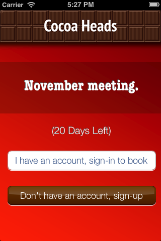
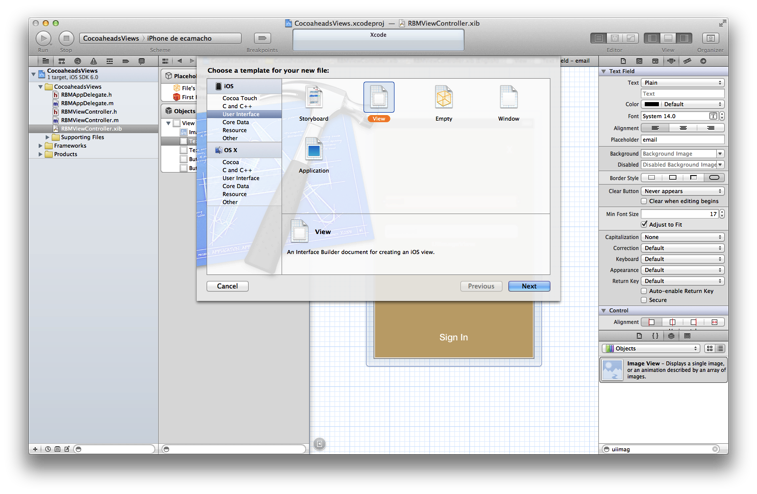
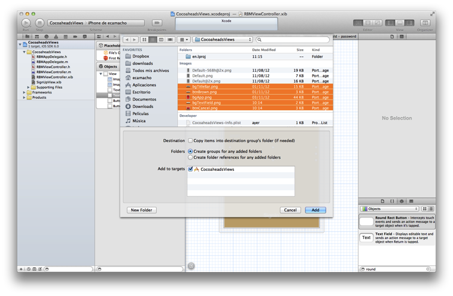

Day 1
Chapter 02 - First Application
Time Zone Converter App
It is time to create a new Ruby Motion app for doing time zone conversions, run the following command in your terminal:
$ motion create TimeZoneConverter
And then take a look inside
$ cd TimeZoneConverter
$ ls
You will see the following directories created
Rakefile app resources specNow feel free to execute the following command:
$ rake
If everything goes well, you will see an ugly black window.

View Controller
A view controller class provides a quite utile mechanism to manage views in iOS applications; it could coordinate efforts with the model and other view controllers in order to build an entire application.
Adding a View Controller
Open your file app_delegate.rb in app folder. And add the code between starts in it:
class AppDelegate
def application(application, didFinishLaunchingWithOptions:launchOptions)
****************************************************************
@window = UIWindow.alloc.initWithFrame(UIScreen.mainScreen.bounds)
@window.rootViewController = RootViewController.alloc.init
@window.makeKeyAndVisible
****************************************************************
true
end
end
Now create a new file named root_view_controller.rb in app folder and add the following code:
class RootViewController < UIViewController
def viewDidLoad
view.backgroundColor = UIColor.scrollViewTexturedBackgroundColor
end
end
Save your file and run the rake command:
$ rake
You should see a gray styled view, congratulations you have added your first View Controller, it wasn’t really that hard, was it?

It’s time to create our human interface controls, create a new file named root_view_uitilities.rb and add the following code:
def location_label(xPosition,yPosition)
label = UILabel.alloc.initWithFrame(CGRectMake(xPosition,yPosition,200,50))
label.backgroundColor = UIColor.clearColor;
label.font = UIFont.fontWithName("HelveticaNeue-CondensedBold",size:18)
label.text = "Time Zone"
label
end
def time_label(xPosition,yPosition)
label = UILabel.alloc.initWithFrame(CGRectMake(xPosition,yPosition,200,50))
label.backgroundColor = UIColor.clearColor;
label.text = "Time"
label.textColor = UIColor.whiteColor;
label
end
def select_time_zone_Button (xPosition,yPosition)
button = UIButton.buttonWithType(UIButtonTypeRoundedRect)
button.frame = CGRectMake(xPosition,yPosition,90,90)
button.setTitle("Select",forState:UIControlStateNormal)
button
end
def zone_picker (xPosition,yPosition)
picker = UIPickerView.alloc.initWithFrame(CGRectMake(xPosition,yPosition, 320, 250))
picker.hidden = true
picker.showsSelectionIndicator = true
picker
end
Save your file and compile the project to see if everything goes well, and then open the file root_view_controller.rb We are going to add our controls, add the code between the starts in it:
class RootViewController < UIViewController
****************************************************************
def set_default_time_zone
@defaultTimeZoneLabel.text = NSTimeZone.localTimeZone.name
end
def set_default_time
defaultTimeZone = NSTimeZone.timeZoneWithName(@defaultTimeZoneLabel.text)
formatter = NSDateFormatter.alloc.init
formatter.setDateFormat('HH:mm')
formatter.setTimeZone(defaultTimeZone)
dateFormat = formatter.stringFromDate(NSDate.date)
@defaultTimeLabel.text = "UTC "+(NSTimeZone.localTimeZone.secondsFromGMT/3600).to_s + " "+dateFormat
end
****************************************************************
def viewDidLoad
****************************************************************
@defaultTimeZoneLabel = location_label(25,120)
@defaultTimeLabel = time_label(50,150)
view.addSubview(@defaultTimeZoneLabel)
view.addSubview(@defaultTimeLabel)
set_default_time_zone
set_default_time
****************************************************************
view.backgroundColor = UIColor.scrollViewTexturedBackgroundColor
end
end
Run your program and you should see two new labels added to the screen, the first one indicates the current timezone name, and the second one the current time.

Let stop one moment right here, to see the properties of the "UILabel" that we just added, without exit hold ‘command’ key and hover mouse on simulator screen. You can see a red-bordered box appears among the application elements, select the first Time Zone area, the interactive console should display the instance corresponding to that label.
(#<UILabel:0x9447e60>)>And then explore the text property of the UILabel
(#<UILabel:0x9447e60>)> self.textIt should return a string
=> "America/Mexico_City"Let’s say that we are extreme curious and we want to know the class of the "text" property from UILabel
(#<UILabel:0x9447e60>)> self.text.class
=> StringAs we may expect its a String, but now what if we want to know the superclass of the "text" property from UILabel
(#<UILabel:0x9447e60>)> self.text.superclass
=> NSMutableStringNow what if we look for the "String" ancestors, type the following:
(#<UILabel:0x9447e60>)> String.ancestorsWhat are those classes that appears? Yes you are right those are from the Cocoa Framework
=> [String, NSMutableString, NSString, Comparable, NSObject, Kernel]We also can see the available methods, type the following in your terminal
(#<UILabel:0x9447e60>)> methodsWell, you can see many of them, but yes we can use grep, to find something more specific
(#<UILabel:0x9447e60>)> methods.grep(/class/)If you want to return to the main session, you can enter the following command:
(#<UILabel:0x9591580>)> quitType self, so you can be sure that you are in the main session:
(main)> self
=> main
(main)>So far we have discovered some interesting things, also we can find the instance variables of our RootViewController
(main)> RootViewController.instance_variables
=> [:__classpath__]And of course we can find out all the elements of the application
(main)> UIApplication.sharedApplication.keyWindow.rootViewController.view.subviews
=> [#<UILabel:0x95448e0>, #<UILabel:0x9544c30>, #<UIButton:0x9545110>, #<UILabel:0x9537eb0>and then recursive elements:
(main)> UIApplication.sharedApplication.keyWindow.recursiveDescriptionYou can use include of the arrays to ask if a method exists
[].methods.include? :[]And also to ask for and Objetive-C Method
[].methods.include?(:'objectAtIndex:')It’s time to add a control that let us select from different time zones, open the root_view_controller.rb and add the code the following code to it:
class RootViewController < UIViewController
def set_default_time_zone
@defaultTimeZoneLabel.text = NSTimeZone.localTimeZone.name
end
def set_default_time
defaultTimeZone = NSTimeZone.timeZoneWithName(@defaultTimeZoneLabel.text)
formatter = NSDateFormatter.alloc.init
formatter.setDateFormat('HH:mm')
formatter.setTimeZone(defaultTimeZone)
dateFormat = formatter.stringFromDate(NSDate.date)
@defaultTimeLabel.text = "UTC "+(NSTimeZone.localTimeZone.secondsFromGMT/3600).to_s + " "+dateFormat
end
****************************************************************
def present_local_zone_picker(sender)
button = sender
@zonePicker.frame = CGRectMake(0,244, 320, 216)
@currentZoneLabel = @defaultTimeZoneLabel
if @zonePicker.isHidden
@zonePicker.hidden = false
button.setTitle("Choose",forState:UIControlStateNormal)
else
@zonePicker.hidden = true
button.setTitle("Select",forState:UIControlStateNormal)
set_default_time
end
end
# UIPicker View Controller DataSource
def numberOfComponentsInPickerView(pickerView)
1
end
def pickerView(pickerView,numberOfRowsInComponent:component)
NSTimeZone.knownTimeZoneNames.count
end
# UIPicker View Controller Delegate
def pickerView(pickerView, titleForRow:row,forComponent:component)
NSTimeZone.knownTimeZoneNames[row]
end
def pickerView(pickerView, didSelectRow:row, inComponent:component)
@currentZoneLabel.text = NSTimeZone.knownTimeZoneNames[row]
end
****************************************************************
def viewDidLoad
@defaultTimeZoneLabel = location_label(25,120)
@defaultTimeLabel = time_label(50,150)
****************************************************************
chooseLocalButton = select_time_zone_Button(220,115)
chooseLocalButton.addTarget(self,
action: :'present_local_zone_picker:',
forControlEvents:UIControlEventTouchUpInside)
@zonePicker = zone_picker(0,244)
@zonePicker.dataSource = self
@zonePicker.delegate = self
****************************************************************
view.addSubview(@defaultTimeZoneLabel)
view.addSubview(@defaultTimeLabel)
****************************************************************
view.addSubview(chooseLocalButton)
view.addSubview(@zonePicker)
****************************************************************
set_default_time_zone
set_default_time
view.backgroundColor = UIColor.scrollViewTexturedBackgroundColor
end
end
Next compile your application; you should see a white big button, don’t hesitate and try it.


Go ahead and look for a region that you may like to be and see the local time on this area.
You ‘ll never wonder again what time is it on other side of the planet, but you may think that its not good enough to know the time in one region, two its always better than one. Lets add a second set of controls.
First at all open your root_view_uitilities.rb file and add the following code in the loadView method.
def viewDidLoad
****************************************************************
chooseLocalButton.addTarget(self, action::'present_local_zone_picker:',
forControlEvents:UIControlEventTouchUpInside)
@converTimeZoneLabel = location_label(25,290)
@convertTimeLabel = time_label(50,320)
chooseconvertButton = select_time_zone_Button(220,300)
chooseconvertButton.addTarget(self, action: :'present_convert_zone_picker:',
forControlEvents:UIControlEventTouchUpInside)
view.addSubview(@converTimeZoneLabel)
view.addSubview(@convertTimeLabel)
view.addSubview(chooseconvertButton)
****************************************************************
end
Don’t forget to add the following method in the same file:
def present_convert_zone_picker(sender)
button = sender
@zonePicker.frame = CGRectMake(0,0, 320, 216)
@currentZoneLabel = @converTimeZoneLabel
if @zonePicker.isHidden
@zonePicker.hidden = false
button.setTitle("Choose",forState:UIControlStateNormal)
else
@zonePicker.hidden = true
button.setTitle("Select",forState:UIControlStateNormal)
set_Convert_Time
end
end
Styling the App
I think that the style of our application does not reflect the adventure spirit that should be; maybe with some little improvements we can change that.
Run the application with the rake command
$ rake
Now you should see REPL in your console:
Create ./build/iPhoneSimulator-6.0-Development/TimeZoneConverter.dSYM
Simulate ./build/iPhoneSimulator-6.0-Development/TimeZoneConverter.app
(main)>
Now hold ‘command’ key and hover mouse on simulator screen. You can see a red-bordered box appears among the application elements, select the first Time Zone area, the interactive console should display the instance corresponding to that label
Build ./build/iPhoneSimulator-6.0-Development
Simulate ./build/iPhoneSimulator-6.0-Development/TimeZoneConverter.app
(#<UILabel:0x956a650>)>
Now its time to add something fresh to our application as we see it running, yes you read right type the following scrip in you REPL:
self.font = UIFont.fontWithName("Noteworthy-Bold",size:18)

and hit enter, and Voila !! the font has changed, but you may not liked, so try with different fonts and sizes here there are some of them:
-
Georgia-Italic
-
MarkerFelt-Thin
-
HelveticaNeue-Medium
Since the creation of the apple store the are many app to choose from, the app store it’s not the wild wild west that used to be, so we are going to give some personality to our app
First, copy the assets from the chapter one directory, and put them into the Resources directory, and the in your root_view_controller.rb change the following line in your viewDidLoad method:
view.backgroundColor = UIColor.scrollViewTexturedBackgroundColor
for this one:
view.backgroundColor = UIColor.colorWithPatternImage(UIImage.imageNamed("bgApp.png"))

We should add some personality to our buttons, open your file root_view_uitilities.rb and replace the following method select_time_zone_Button:
def select_time_zone_Button (xPosition,yPosition)
button = UIButton.buttonWithType(UIButtonTypeCustom)
button.frame = CGRectMake(xPosition,yPosition,85,73)
button.setBackgroundImage (UIImage.imageNamed("btnSelect.png"),forState:UIControlStateNormal)
button.setTitle("Select",forState:UIControlStateNormal)
button
end
Challenge - Adding a title
Adding title to the application, try adding a new method in your file select_time_zone_Button that return an UILabel and put it as title for the application.
Challenge - Hours Between Zones
Add a new label between time zones that indicates the diference between time zones
Chapter 03 - Objective C
Estimator App
In this exercise we will create an iOS app that exemplify the way many companies in the world estimate their projects, the "Estimator"
Create Project
As a first step we will need to create a project, open your terminal application and run the following command:
$ motion create estimator
If we look at the new folder "Estimator", we will find a couple of new folders: "app", "resources", "spec".
Next, lets copy our application images from (define deploy route) into the resources folder
First Run
Just to make sure that everything is fine, we can test our new created project by executing the following line
$ cd estimator
$ rake
This command will compile the project and run it on the simulator, like the following image:

Project View Controller
Let’s start coding our project, first we need to create a new file that will contain our Project View Controller Class
$ cd app
$ mkdir controllers
$ cd controllers
$ touch project_view_controller.rb
Let’s open it, and add the following lines:
$ open project_view_controller.rb
class ProjectViewController < UIViewController
private
def loadView
self.view = UIView.alloc.init
self.view.backgroundColor = UIColor.redColor
end
end
Next we need to open the "AppDelegate" of the app, and load our controller into the UIWindow. This is done by inserting the following:
$ cd ..
$ open app_delegate.rb
def application(application, didFinishLaunchingWithOptions:launchOptions)
#Create an instance of Project View Controller
project_view_controller = ProjectViewController.alloc.init
@window = UIWindow.alloc.initWithFrame(UIScreen.mainScreen.bounds)
#Every window has a root view controller from which it will present its view
@window.rootViewController = project_view_controller
@window.makeKeyAndVisible
true
end
This part will load a new instance of our Project View Controller and insert its view into the UIWindow. Please note that the UIWindow receives a controller as rootViewController, instead of a view.
If we run the project it should look like the following image:
$ rake

Project View
Next we need to add some controls for the user to select the number of screens of the project, complexity, methodology, etc. For this is required to add the following method to the project_view_controller.rb file:
def layout_view
# Initialize a new view for the controller
self.view = UIView.alloc.init
self.view.backgroundColor = UIColor.colorWithRed(0.902, green: 0.902, blue: 0.902, alpha: 1.0)
# The following is an initialization and add of controls into the view
# First create an instance of UIImageView, this control will present an Image into the view
# for this case a black header
@header_image_view = UIImageView.alloc.initWithFrame(CGRectMake(0, 0, 320, 60))
@header_image_view.image = UIImage.imageNamed("bgHeader.png")
self.view.addSubview(@header_image_view)
# Next we create an instance of UILabel, tellling it the position on the screen that
# we want it to be drawn. For this we use a c struct called CGFrame
@title_label = UILabel.alloc.initWithFrame(CGRectMake(0, 0, 320, 50))
@title_label.text = "Project Estimator"
@title_label.color = UIColor.colorWithRed(0.702, green: 0.702, blue: 0.702, alpha: 1.000)
@title_label.backgroundColor = UIColor.clearColor
@title_label.textAlignment = UITextAlignmentCenter
# To specify a custom Font we need to tell the proper name of it and the size that we want
@title_label.font = UIFont.fontWithName("AvenirNext-Bold", size: 25)
# Then we add it to the view like this way
self.view.addSubview(@title_label)
@number_of_screens_text_field = UITextField.alloc.initWithFrame(CGRectMake(10, 75, 300, 45))
@number_of_screens_text_field.borderStyle = UITextBorderStyleRoundedRect
@number_of_screens_text_field.delegate = self
@number_of_screens_text_field.keyboardType = UIKeyboardTypeNumbersAndPunctuation
@number_of_screens_text_field.text = ""
@number_of_screens_text_field.background = UIImage.imageNamed("bgTextField.png")
@number_of_screens_text_field.borderStyle = UITextBorderStyleNone
@number_of_screens_text_field.placeholder = "Number of Screens"
@number_of_screens_text_field.textColor = UIColor.colorWithRed(0.451, green:0.451, blue:0.451, alpha:1.0)
@number_of_screens_text_field.textAlignment = UITextAlignmentCenter
@number_of_screens_text_field.font = UIFont.fontWithName("AvenirNextCondensed-DemiBold", size:25)
@number_of_screens_text_field.contentVerticalAlignment = UIControlContentVerticalAlignmentCenter
self.view.addSubview(@number_of_screens_text_field)
@complexity_label = UILabel.alloc.initWithFrame(CGRectMake(10, 140, 300, 30))
@complexity_label.text = "Complexity"
@complexity_label.color = UIColor.colorWithRed(0.400, green: 0.400, blue: 0.400, alpha: 1.0)
@complexity_label.backgroundColor = UIColor.clearColor
@complexity_label.font = UIFont.fontWithName("AvenirNext-DemiBold", size: 20)
@complexity_label.textAlignment = UITextAlignmentCenter
self.view.addSubview(@complexity_label)
# For the UISegmentedControl to work, we need to pass him the possible values
# in this case a NSArray do the trick
@complexity_values = NSMutableArray.alloc.init
@complexity_values.addObject("Low")
@complexity_values.addObject("High")
# We create an instance of a UISegmentedControl, setting the allowed values for it
@complexity_segmented_control = UISegmentedControl.alloc.initWithItems(@complexity_values)
@complexity_segmented_control.frame = CGRectMake(10, 170, 300, 30)
# Its not required to set a selected index, but for this example we select the first segment
@complexity_segmented_control.selectedSegmentIndex = 0
self.view.addSubview(@complexity_segmented_control)
@outsourced_label = UILabel.alloc.initWithFrame(CGRectMake(10, 210, 300, 30))
@outsourced_label.text = "Outsourced"
@outsourced_label.color = UIColor.colorWithRed(0.400, green: 0.400, blue: 0.400, alpha: 1.0)
@outsourced_label.backgroundColor = UIColor.clearColor
@outsourced_label.font = UIFont.fontWithName("AvenirNext-DemiBold", size: 20)
@outsourced_label.textAlignment = UITextAlignmentCenter
self.view.addSubview(@outsourced_label)
@outsourced_values = NSMutableArray.alloc.init
@outsourced_values.addObject("No")
@outsourced_values.addObject("Yes")
@outsourced_segmented_control = UISegmentedControl.alloc.initWithItems(@outsourced_values)
@outsourced_segmented_control.frame = CGRectMake(10, 240, 300, 30)
@outsourced_segmented_control.selectedSegmentIndex = 0
self.view.addSubview(@outsourced_segmented_control)
@methodology_label = UILabel.alloc.initWithFrame(CGRectMake(10, 290, 300, 30))
@methodology_label.text = "Methodology"
@methodology_label.color = UIColor.colorWithRed(0.400, green: 0.400, blue: 0.400, alpha: 1.0)
@methodology_label.backgroundColor = UIColor.clearColor
@methodology_label.font = UIFont.fontWithName("AvenirNext-DemiBold", size: 20)
@methodology_label.textAlignment = UITextAlignmentCenter
self.view.addSubview(@methodology_label)
@methodology_values = NSMutableArray.alloc.init
@methodology_values.addObject("Waterfall")
@methodology_values.addObject("Agile")
@methodology_segmented_control = UISegmentedControl.alloc.initWithItems(@methodology_values)
@methodology_segmented_control.frame = CGRectMake(10, 320, 300, 30)
@methodology_segmented_control.selectedSegmentIndex = 0
self.view.addSubview(@methodology_segmented_control)
end
Also for this to work, we need to change the loadView method to look as the following:
def loadView
layout_view
end
Let’s run the application:
$ rake

The segmented controls does not look that pretty right?, lets customize their apperance adding the following method to the project_view_controller.rb file:
# Method to customize the appearance of the UISegmentedControl
def customize_segmented_control
# Lets load the images from their respective files
segmented_control_normal_background = UIImage.imageNamed("bgSegmentedControlNormal.png")
segmented_control_selected_background = UIImage.imageNamed("bgSegmentedControlSelected.png")
segmented_control_separator = UIImage.imageNamed("bgSegmentedControlSeparator.png")
# Apply the image for the background when the segment is not selected
UISegmentedControl.appearance.setBackgroundImage(segmented_control_normal_background,
forState:UIControlStateNormal,
barMetrics: UIBarMetricsDefault)
# Apply the image for the background when the segment is selected
UISegmentedControl.appearance.setBackgroundImage(segmented_control_selected_background,
forState:UIControlStateSelected,
barMetrics: UIBarMetricsDefault)
# Apply the image for the divider of the control
UISegmentedControl.appearance.setDividerImage(segmented_control_separator,
forLeftSegmentState: UIControlStateNormal,
rightSegmentState:UIControlStateSelected,
barMetrics:UIBarMetricsDefault)
# Also we need to change the font of the titles, the first step is to load the font into the memory
segmented_control_title_font = UIFont.fontWithName("AvenirNextCondensed-Bold", size:20)
# To apply certain visual attributes to Apple's default controls, we need to use a iOS 5 technology
# called Skins. To work with screens we must create a dictionary with the key of the property we want
# to change and the proper value
normal_title_text_attributes = NSMutableDictionary.alloc.init
normal_title_text_attributes.setValue(segmented_control_title_font, forKey:UITextAttributeFont)
normal_title_text_color = UIColor.colorWithRed(0.545, green:0.749, blue:0.349, alpha:1.0)
normal_title_text_attributes.setValue(normal_title_text_color, forKey: UITextAttributeTextColor)
normal_title_text_attributes.setValue(UIColor.clearColor, forKey: UITextAttributeTextShadowColor)
# Using Skins you can change the visual properties of all the same kind of controls at the same time,
# no matter if they were created on another class or in another excecution time. To archive this
# only send the messages to the class
#
# On the other side if you want only to modify one particular control, the following like will work
# on the instance instead of the class
UISegmentedControl.appearance.setTitleTextAttributes(normal_title_text_attributes, forState:UIControlStateNormal)
selected_title_text_attributes = NSMutableDictionary.alloc.init
selected_title_text_attributes.setValue(segmented_control_title_font, forKey:UITextAttributeFont)
selected_title_text_color = UIColor.colorWithRed(0.200, green:0.200, blue:0.200, alpha:1.0)
selected_title_text_attributes.setValue(selected_title_text_color, forKey:UITextAttributeTextColor)
UISegmentedControl.appearance.setTitleTextAttributes(selected_title_text_attributes, forState:UIControlStateSelected)
end
And also we will need to change our loadView method again, lo look like this:
def loadView
customize_segmented_control
layout_view
end
This time, if we run the application you should see the following in your simulator:

Project Model
First create a JSON file to contain all the estimated historical data (Fake one ;):
$ cd..
$ cd resources
$ touch historical_data.json
Then add the following line to the file:
$ open historical_data.json
{
"Complexity":
{
"Low":
{
"TotalEffort": 80,
"Variation": 5
},
"High":
{
"TotalEffort": 400,
"Variation": 20
}
},
"Outsourced":
{
"No":
{
"TotalEffort": 80,
"Variation": 5
},
"Yes":
{
"TotalEffort": 400,
"Variation": 7
}
},
"Methodology":
{
"Waterfall":
{
"TotalEffort": 400,
"Variation": 15
},
"Agile":
{
"TotalEffort": 80,
"Variation": 3
}
}
}
Now we need a object that make the estimation calculus, this object will be called "Project", let’s create the file that will contain it:
$ cd ..
$ mkdir models
$ cd models
$ touch project.rb
Add the next lines to it:
class Project
#Constants representing Keys in the JSON
COMPLEXITY_DATA_KEY = 'Complexity'
OUTSOURCED_DATA_KEY = 'Outsourced'
METHODOLOGY_DATA_KEY = 'Methodology'
TOTAL_EFFORT_DATA_KEY = 'TotalEffort'
VARIATION_DATA_KEY = 'Variation'
attr_accessor :number_of_screens
attr_accessor :complexity
attr_accessor :outsourced
attr_accessor :methodology
attr_reader :total_effort
attr_reader :variation
attr_reader :delivery_year
end
Great!, Now we need to add the logic to read our JSON File, insert the following method in the class:
def load_historical_estimates
# Get the path of our JSON File inside the bundle
historical_data_file = NSBundle.mainBundle.pathForResource('historical_data', ofType:'json')
# For us to load the file, we need to pass a pointer. So if something goes wrong we can print
# the error
error_pointer = Pointer.new(:object)
# Lets load the file into a NSData
historical_data = NSData.alloc.initWithContentsOfFile(historical_data_file, options:NSDataReadingUncached,
error:error_pointer)
unless historical_data
if error_pointer[0].code == NSFileReadNoSuchFileError
$stderr.puts "Error: Missing File Error"
else
$stderr.puts "Error: #{error_pointer[0].description}"
end
return nil
end
# Serialize the NSData into something we can work with, in this case a Hash
historical_estimates = NSJSONSerialization.JSONObjectWithData(historical_data,
options: NSDataReadingUncached,
error: error_pointer)
unless historical_estimates
$stderr.puts "Error: #{error_pointer[0].description}"
return nil
end
historical_estimates
end
Now we have read our JSON file, the next thing is to extract the historical data into something we can use to make the calculus. This following methods should be added to the class:
def obtain_historical_complexity
@complexity_total_effort = nil
@complexity_variation = nil
historical_complexity = @historical_estimates[COMPLEXITY_DATA_KEY]
# We use the user selection as a Key
unless historical_complexity[@complexity].nil?
selected_historical_complexity = historical_complexity[@complexity]
@complexity_total_effort = selected_historical_complexity[TOTAL_EFFORT_DATA_KEY]
@complexity_variation = selected_historical_complexity[VARIATION_DATA_KEY]
end
end
def obtain_historical_outsourced
@outsourced_total_effort = nil
@outsourced_variation = nil
historical_outsourced = @historical_estimates[OUTSOURCED_DATA_KEY]
# We use the user selection as a Key
unless historical_outsourced[@outsourced].nil?
selected_historical_outsourced = historical_outsourced[@outsourced]
@outsourced_total_effort = selected_historical_outsourced[TOTAL_EFFORT_DATA_KEY]
@outsourced_variation = selected_historical_outsourced[VARIATION_DATA_KEY]
end
end
def obtain_historical_methodology
@methodology_total_effort = nil
@methodology_variation = nil
historical_methodology = @historical_estimates[METHODOLOGY_DATA_KEY]
# We use the user selection as a Key
unless historical_methodology[@methodology].nil?
selected_historical_methodology = historical_methodology[@methodology]
@methodology_total_effort = selected_historical_methodology[TOTAL_EFFORT_DATA_KEY]
@methodology_variation = selected_historical_methodology[VARIATION_DATA_KEY]
end
end
Almost there! Lets add the algorithm to make the calculus, inserting the following methods:
def calculate_total_effort
# We add all the possible total effort that the user selected
total_effort_data = @complexity_total_effort + @outsourced_total_effort + @methodology_total_effort
# Generate a random with the minimum value of a half of the total effort
total_effort = rand(total_effort_data / 2) + (total_effort_data / 2)
# Calculate the effort plus the number of screens as percentage
total_effort * ((@number_of_screens / 100) + 1)
end
def calculate_variation
# We add all the possible variation that the user selected
variation_data = @complexity_variation + @outsourced_variation + @methodology_variation
rand(variation_data / 2) + (variation_data / 2)
end
def calculate_delivery_year
# Calculate the total effort plus the posible variation
total_effort_with_variation = @total_effort * (@variation / 100)
# Transform the hours into working weeks
total_effort_days = total_effort_with_variation / 8
total_effort_weeks = total_effort_days / 5
# In the following part we add the calculated weeks to the current date
weekComponent = NSDateComponents.alloc.init
weekComponent.week = total_effort_weeks
calendar = NSCalendar.currentCalendar
delivery_date = calendar.dateByAddingComponents(weekComponent,
toDate: NSDate.date,
options: 0)
# Of the resulting date we only need the year, in the following section is extracted
yearComponent = calendar.components(NSYearCalendarUnit, fromDate: delivery_date)
yearComponent.year
end
Last part! A method that will execute the calculus, this method will be called by the Project View Controller:
def estimate
@historical_estimates = load_historical_estimates
obtain_historical_complexity
obtain_historical_outsourced
obtain_historical_methodology
@total_effort = calculate_total_effort
@variation = calculate_variation
@delivery_year = calculate_delivery_year
end
Project View Controller and Project Model
We need to add a button to execute the estimation process, insert this lines on the button of the layout_view method, in the project_view_controller.rb file:
$ cd ..
$ cd controllers
$ open project_view_controller.rb
# This control initialization is radically different from the other ones, this is because
# UIButton provides different types and styles of buttons. The default one is Rounded Rect
@estimate_button = UIButton.buttonWithType(UIButtonTypeRoundedRect)
@estimate_button.frame = CGRectMake(10, 400, 300, 40)
# Sometimes when we work with controls we can change the title or image based on different states of
# it. (Normal, Selected, Highlighted)
@estimate_button.setBackgroundImage(UIImage.imageNamed("btnEstimate.png"), forState:UIControlStateNormal)
#@estimate_button.setTitle("Estimate this project", forState: UIControlStateNormal)
# Lets tell the button who is going to call and where, when the user touch it
@estimate_button.addTarget(self,
action: "estimate_project:",
forControlEvents: UIControlEventTouchUpInside)
self.view.addSubview(@estimate_button)
|
Important
|
The method is called estimate_project:, with the two dots |
Please pay special attention to the addTarget method, this is used to tell the button who and in which method it should call when the user touches it. In this case we are telling it to call the Project View Controller in the method "estimate_project:", lets add the following:
def estimate_project(sender)
# Create a new instance of Project
project = Project.new
project.number_of_screens = @number_of_screens_text_field.text.intValue
# We need the selected index to extract the string value from the segmented allowed
# values array
selected_complexity_index = @complexity_segmented_control.selectedSegmentIndex
project.complexity = @complexity_values.objectAtIndex(selected_complexity_index)
selected_outsourced_index = @outsourced_segmented_control.selectedSegmentIndex
project.outsourced = @outsourced_values.objectAtIndex(selected_outsourced_index)
selected_methodology_index = @methodology_segmented_control.selectedSegmentIndex
project.methodology = @methodology_values.objectAtIndex(selected_methodology_index)
project.estimate
end
In this method we implement the creation of a new Project instance, setting the user input and finally we ask it to calculate the estimation
Estimation View Controller
Now we need to add some place to show our calculated values, for this we need to create a new view controller called "Estimation View Controller":
$ touch estimation_view_controller.rb
Add the following lines to the "estimation_view_controller.rb":
class EstimationViewController < UIViewController
def loadView
layout_view
end
def layout_view
self.view = UIView.alloc.init
self.view.backgroundColor = UIColor.colorWithRed(0.298, green: 0.298, blue: 0.298, alpha: 1.0)
@header_image_view = UIImageView.alloc.initWithFrame(CGRectMake(0, 0, 320, 60))
@header_image_view.image = UIImage.imageNamed("bgHeader.png")
self.view.addSubview(@header_image_view)
@title_label = UILabel.alloc.initWithFrame(CGRectMake(0, 0, 320, 50))
@title_label.text = "Estimation"
@title_label.color = UIColor.colorWithRed(0.702, green: 0.702, blue: 0.702, alpha: 1.000)
@title_label.backgroundColor = UIColor.clearColor
@title_label.textAlignment = UITextAlignmentCenter
@title_label.font = UIFont.fontWithName("AvenirNext-Bold", size: 25)
self.view.addSubview(@title_label)
@total_effort_title_label = UILabel.alloc.initWithFrame(CGRectMake(20, 60, 280, 30))
@total_effort_title_label.text = "Total effort"
@total_effort_title_label.color = UIColor.colorWithRed(0.702, green: 0.702, blue: 0.702, alpha: 1.000)
@total_effort_title_label.backgroundColor = UIColor.clearColor
@total_effort_title_label.font = UIFont.fontWithName("AvenirNextCondensed-DemiBold", size: 35)
self.view.addSubview(@total_effort_title_label)
@total_effort_value_label = UILabel.alloc.initWithFrame(CGRectMake(50, 50, 220, 180))
@total_effort_value_label.color = UIColor.whiteColor
@total_effort_value_label.backgroundColor = UIColor.clearColor
@total_effort_value_label.textAlignment = UITextAlignmentCenter
@total_effort_value_label.font = UIFont.fontWithName("AvenirNextCondensed-Bold", size: 120)
@total_effort_value_label.minimumFontSize = 50
@total_effort_value_label.adjustsFontSizeToFitWidth = true
self.view.addSubview(@total_effort_value_label)
@total_effort_unit_label = UILabel.alloc.initWithFrame(CGRectMake(200, 160, 130, 70))
@total_effort_unit_label.text = "HRS"
@total_effort_unit_label.color = UIColor.colorWithRed(0.671, green: 1.000, blue: 0.353, alpha: 1.000)
@total_effort_unit_label.backgroundColor = UIColor.clearColor
@total_effort_unit_label.font = UIFont.fontWithName("AvenirNextCondensed-Bold", size: 72)
self.view.addSubview(@total_effort_unit_label)
@variation_title_label = UILabel.alloc.initWithFrame(CGRectMake(20, 250, 280, 30))
@variation_title_label.text = "Variation"
@variation_title_label.color = UIColor.colorWithRed(0.702, green: 0.702, blue: 0.702, alpha: 1.000)
@variation_title_label.backgroundColor = UIColor.clearColor
@variation_title_label.font = UIFont.fontWithName("AvenirNextCondensed-Bold", size: 30)
self.view.addSubview(@variation_title_label)
@variation_value_label = UILabel.alloc.initWithFrame(CGRectMake(50, 265, 220, 85))
@variation_value_label.text = "52"
@variation_value_label.color = UIColor.whiteColor
@variation_value_label.backgroundColor = UIColor.clearColor
@variation_value_label.textAlignment = UITextAlignmentCenter
@variation_value_label.font = UIFont.fontWithName("AvenirNextCondensed-Bold", size: 80)
self.view.addSubview(@variation_value_label)
@variation_unit_label = UILabel.alloc.initWithFrame(CGRectMake(190, 310, 120, 50))
@variation_unit_label.text = "%"
@variation_unit_label.color = UIColor.colorWithRed(0.671, green: 1.000, blue: 0.353, alpha: 1.000)
@variation_unit_label.backgroundColor = UIColor.clearColor
@variation_unit_label.font = UIFont.fontWithName("AvenirNextCondensed-Bold", size: 50)
self.view.addSubview(@variation_unit_label)
@delivery_year_title_label = UILabel.alloc.initWithFrame(CGRectMake(20, 370, 280, 40))
@delivery_year_title_label.text = "Delivery year"
@delivery_year_title_label.color = UIColor.colorWithRed(0.702, green: 0.702, blue: 0.702, alpha: 1.000)
@delivery_year_title_label.backgroundColor = UIColor.clearColor
@delivery_year_title_label.font = UIFont.fontWithName("AvenirNextCondensed-Bold", size: 30)
self.view.addSubview(@delivery_year_title_label)
@delivery_year_value_label = UILabel.alloc.initWithFrame(CGRectMake(150, 400, 150, 50))
@delivery_year_value_label.text = "2040"
@delivery_year_value_label.color = UIColor.whiteColor
@delivery_year_value_label.backgroundColor = UIColor.clearColor
@delivery_year_value_label.textAlignment = UITextAlignmentRight
@delivery_year_value_label.font = UIFont.fontWithName("AvenirNextCondensed-Bold", size: 50)
self.view.addSubview(@delivery_year_value_label)
end
end
We just implement the logic for our new view controller, also we add some labels to draw on the screen the values generated by the Project estimation
Estimation View Controller and Project Model
The last part of our implementation is to add a way to bind the values of the Project Model into our labels, the following method does the trick (Insert it on the estimation_view_controller.rb):
# Method to bind the values in the Project Object into proper UILabels
def bind_project(project)
#Using an NSString we set the text into the label, when we are using %@ we tell the object
#to print it description as a string
@total_effort_value_label.text = NSString.stringWithFormat("%@", project.total_effort)
@variation_value_label.text = NSString.stringWithFormat("%@", project.variation)
@delivery_year_value_label.text = NSString.stringWithFormat("%@", project.delivery_year)
end
|
Important
|
Please take note that in this specific case we are using Objective-C strings (NSStrings) instead of ruby strings |
Project View Controller and Estimation View Controller
Final task! We need to show our new controller, the way to do this is to perform a transition from the Project View Controller to the Estimation View Controller
Insert the following lines into the estimate_project(sender) method on the class project_view_controller.rb:
# Now we need a new instance of the Estimation View Controller for show the
# results of the Project estimation
@estimation_view_controller = EstimationViewController.alloc.init
@estimation_view_controller.view.frame = self.view.frame
# Lets tell it to bind our project instance
@estimation_view_controller.bind_project(project)
# To show the Estimation View Controller view, we can use a transition.
# From our current view, to the Estimation View Controller's view
UIView.transitionFromView(self.view,
toView: @estimation_view_controller.view,
duration: 0.3,
options: UIViewAnimationOptionTransitionFlipFromLeft,
completion: nil)
Run and Enjoy
Lets run our estimator app!
$ rake


Challenges
1.- The UISegmentedControlls in the project_view_controller.rb are bound to a static array, move that logic to the Project Model. So it can provide the allowed values for the estimation.
2.- Now that the allowed values are in the Project Model, lets make it dynamic by retrieving them from the JSON File.
Chapter 05 - Cocoa Overview
The Cocoaheads app
Cocoaheads is a community of OSX/iOS programmers. There are many Cocoaheads communities around the world and they meet periodically (normally on a monthly basis) to discuss the latest topics for Apple-related technologies.
We want to build an iPhone app for this community. The app should cover the next functionality:
-
Show the complete schedule for the next Cocoaheads meetings.
-
Show the information about the next meeting. This information could include the map to the venue, the list of the talks, etc.
-
Registration and login of users.
-
Allow users to register for the next meeting.
We are going to build this app for several chapters, one step a time. In this chapter we are going to focus in creating the first screen: the Next Event screen that shows the information related to the next meeting:

Creating the app
Let’s start by creating the Cocoaheads rubymotion app. You have already know how to create RubyMotion apps from previous chapters, in the command line type:
$ motion create Cocoaheads
As we have seen, this command creates an empty application with the following folder structure:

We’ll be using a structure based on Rails for this Course. Thus, you need to create a folrder named "controllers" inside the "app" folder. Inside "controllers". create an empty file called "next_event_view_controller.rb".

As we have seen in previous chapters, the vanilla app created by the motion command only creates an empty app. We need to add a Window to it. Thus, open the app_delegate.rb class and inside the method
copy this code:
def application(application, didFinishLaunchingWithOptions:launchOptions)
next_event_view_controller = NextEventViewController.alloc.init
@window = UIWindow.alloc.initWithFrame(UIScreen.mainScreen.bounds)
@window.rootViewController = next_event_view_controller
@window.makeKeyAndVisible
true
end
Remember that this method is called once iOS has finished creating your app. In that moment, the UIAppDelegate is notified using this method so you can initiliaze the app.
This is what we are doing inside the method:
-
Create a UIWindow.
-
Assigning a UIViewController as the rootViewController of the window.
Notice that we are creating the UIWindow with the same Frame as UIScreen.mainScreen. UIScreen is a convenient class to access the size of a screen device. So basically we are setting the size of the app’s window to be the full screen.
Creating the View Controller
Now, we are going create our View Controller. Open the next_event_view_controller.rb file and create a child of UIViewController:
class NextEventViewController < UIViewController
def init
p 'Initializing NextEventViewController'
super
self
end
def loadView
p 'loading view'
self.view = UIView.alloc.init
end
end
In Cocoa, there is no initialize metod. There is the init method with the responsbility of creating the instance of the class. It is mandatory that you call super and then, return self.
The other method we are creating is loadView. The responsibility of this method is to actually create the view of this Controller. So we are basically creating a view that covers all the screen and switching its background color to white. UIColor is the class we use in Cocoa to handle colors, it has some convenient class methods with predefined colors (such as whiteColor) but it also allows you to create custom colors.
Use the command
$ rake
to test the application, you will see a white screen. And in the console you will notice that first the init method was invoked and then the loadView.
Using UIImageView
Now it’s time to begin to stylish our app. We are going to add an header and a background image with a nice gradient.
Open the zip file called ch05CocoaOverview_resources.zip, inside you’ll find the Design assets for this workshop. Copy them into the resources folder of our app.
Now inside our View Controller, add these lines:
def viewDidLoad
self.view.addSubview( imageViewWithHeader )
self.view.addSubview( imageViewWithBackground )
self.view.addSubview( imageViewWithTitleBackground )
end
def imageViewWithHeader
header_imageview = UIImageView.alloc.initWithImage( UIImage.imageNamed('bgTitleBar') )
header_imageview
end
def imageViewWithBackground
background_imageview = UIImageView.alloc.initWithImage( UIImage.imageNamed('bgApp') )
background_imageview.frame = CGRectMake(0, 64, 320, 396)
background_imageview
end
def imageViewWithTitleBackground
title_background_imageview = UIImageView.alloc.initWithImage( UIImage.imageNamed('bgEventTitle') )
title_background_imageview.frame = [[0, 103], [320, 103]]
title_background_imageview
end
The method viewDidLoad is called once the view of the Controller is loaded into memory. It’s safe, then, to initialize the view inside this method.
Basically, we are adding two images using the addSubview method of UIView. In the imageViewWithHeader method, we are creating the first image: the header image. In CocoaTouch we have the UIImageView class to add images to our apps. We are using its initializer method called initWithImage that receives a UIImage. UIImage is the image itself, and UIImageView is only a convenient UIView that simplifies the process of painting an image on screen.
UIImage can be created with its class method imageNamed that receives an NSString with the name of the image file.
In the imageViewWithBackground method we are creating the UIImageView with the background image. Notice that we are changing the frame of this image. The frame is a property of type CGRect that the class UIView uses to specify the location of the view inside its superview and its size.
We are using the CGRectMake function to create our frame. The first two arguments define the location coordinates of the object from the top left corner of the superview. For the background we are specifying an X coordinate of 0, thus the object will be at the left-most location of the screen; and a Y coordinate of 64, thus the object will be placed below the header image. The second and third argument specifies its size.
RubyMotion has another way to create a CGRect. Try to change the CGRectMake line to this:
background_imageview.frame = [[0, 64], [320, 396]]
RubyMotion allow us to use an array of two arrays to define *CGRect*s. The first array specifies the location of the object and the second its size.
When you run the app you will something like this:

Creating labels
The next step is to create the labels with the Event information. Add this two methods to your View Controller:
def labelWithNextEventName
next_event_name_label = UILabel.alloc.initWithFrame( [[25, 130], [275, 40]] )
next_event_name_label.font = UIFont.fontWithName("AmericanTypewriter-CondensedBold", size:30)
next_event_name_label.textColor = UIColor.whiteColor
next_event_name_label.textAlignment = UITextAlignmentCenter
next_event_name_label.backgroundColor = UIColor.clearColor
next_event_name_label.shadowColor = UIColor.darkGrayColor
next_event_name_label.shadowOffset = [-1,-1]
next_event_name_label
end
def labelWithDaysLeft
days_left_label = UILabel.alloc.initWithFrame( [[25, 220], [275, 40]] )
days_left_label.font = UIFont.fontWithName("HelveticaNeue-Light", size:20)
days_left_label.textColor = UIColor.whiteColor
days_left_label.textAlignment = UITextAlignmentCenter
days_left_label.backgroundColor = UIColor.clearColor
days_left_label.shadowColor = UIColor.darkGrayColor
days_left_label.shadowOffset = [-1,-1]
days_left_label
end
The object used in CocoaTouch to disply lines of text is UILabel. We are creating two UILabel using the initializer method initWithFrame to specify their size and location.
Then, we are changing its font and size. An UILabel has a property named font that allow us to do that. To create a Font, we are using the UIFont class and its method fontWithName:size. As you can see, you specify the font using a NSString with the Font Family name. If you want to see the available Fonts in CocoaTouch, try to print the array returned by UIFont.familyNames.
Next, we are changing the color of the label using the textColor property and the text alignment. By default a UILabel has a white background color, we are changing this to clearColor. This is a special color to specify transparencies. So, basically we are defining that the background of this UILabel should be transparent.
Finally, we are adding a shadow to the label. With shadowColor you specify its color and with shadowOffset its location. This offset is the number of points that the shadow will be offset from the label. It is a CGSize object so you can specify it with the CGSizeMake function, but we prefer to use the more convenient RubyMotion way of using an array of two elements, one for width and the other one for weight. With [-1, -1] we are defining that the shadow will be 1 point offset to the left and 1 point offset up from the label.
We have the methods to create our labels, is time to add them to our view. Inside the viewDidLoad method add this lines:
def viewDidLoad
self.view.addSubview( imageViewWithHeader )
self.view.addSubview( imageViewWithBackground )
self.view.addSubview( imageViewWithTitleBackground )
@next_event_name_label = labelWithNextEventName
@days_left_label = labelWithDaysLeft
self.view.addSubview( @next_event_name_label )
self.view.addSubview( @days_left_label )
@days_left_label.text = DAYS_LEFT_TEXT
@next_event_name_label.text = EVENT_NAME_TEXT
end
And create this other method:
def viewDidUnload
super
@next_event_name_label = nil
@days_left_label = nil
end
We are adding the labels to instance variables. This is recommended if you need to access them later to change its properties. In this case we are changing the text of the labels to some constants. Finally add this two constants to your View Controller:
class NextEventViewController < UIViewController
DAYS_LEFT_TEXT = "(20 Days Left)"
EVENT_NAME_TEXT = "November meeting."
When you keep UIView*s in instance variables, it is recommended to set this variables to *nil inside the viewDidUnload method. Prior to iOS 6, this method was invoked when the device was running out of memory. Then, we are freeing the memory allocated for the UILabels for low memory scenarios.
Run your app and you should see that the labels appeared with the data for the next Cocoaheads event:

Adding buttons
Finally, we are going to add two buttons to our app: for sign-up and for sign-in.
Add these methods to the View Controller:
def buttonForSignIn
sign_in_button = UIButton.buttonWithType(UIButtonTypeRoundedRect)
sign_in_button.frame = [[15, 280], [295, 40]]
sign_in_button.setTitle("I have an account, sign-in to book", forState:UIControlStateNormal)
sign_in_button.setTitle("is Highlighted", forState:UIControlStateHighlighted)
sign_in_button.titleLabel.font = UIFont.fontWithName("HelveticaNeue-Light", size:18)
sign_in_button.addTarget(self, action:'sign_in:', forControlEvents:UIControlEventTouchUpInside)
sign_in_button
end
def buttonForSignUp
sign_up_button = UIButton.buttonWithType(UIButtonTypeRoundedRect)
sign_up_button.frame = [[15, 350], [295, 40]]
sign_up_button.setTitle("Don't have an account, sign-up", forState:UIControlStateNormal)
sign_up_button.titleLabel.font = UIFont.fontWithName("HelveticaNeue-Light", size:18)
sign_up_button.addTarget(self, action:'sign_up', forControlEvents:UIControlEventTouchUpInside)
sign_up_button
end
def sign_in( button )
p "sign in button pressed #{button}"
end
def sign_up
p "sign-up button pressed"
end
And don’t forget to add the buttons to the view in the "viewDidLoad" method:
def viewDidLoad
self.view.addSubview( imageViewWithHeader )
self.view.addSubview( imageViewWithBackground )
self.view.addSubview( imageViewWithTitleBackground )
@next_event_name_label = labelWithNextEventName
@days_left_label = labelWithDaysLeft
self.view.addSubview( @next_event_name_label )
self.view.addSubview( @days_left_label )
@days_left_label.text = DAYS_LEFT_TEXT
@next_event_name_label.text = EVENT_NAME_TEXT
self.view.addSubview( buttonForSignIn )
self.view.addSubview( buttonForSignUp )
end
Let’s review what’s going on in those methods. First, we are creating a UIButton with the line.
UIButton.buttonWithType(UIButtonTypeRoundedRect)
As you may expect, there are other types of UIButtons that you can specify, such as:
-
UIButtonTypeRoundedRect. Standard white button with rounded corners.
-
UIButtonTypeCustom. Defines a button with no style, very useful when you have your own set of images to use as a button.
-
UIButtonTypeDetailDisclosure. The standard button that appear in tables: a small blue circle with an arrow on it.
-
UIButtonTypeInfoLight. A small gray circle with an "i" on it.
-
UIButtonTypeInfoDark. A small dark gray circle with an "i" on it.
-
UIButtonTypeContactAdd. A small blue circle with the plus sign on it.
You can try these types in the app.
The second thing you have to notice is how to add text to the button (this only works if the type is Round Rect or Custom):
sign_in_button.setTitle("I have an account, sign-in to book", forState:UIControlStateNormal)
We do that with the method setTitle:forState. The first argument is a NSString with the text, the second one specifies in which state should the text appear. A UIButton has the following states:
-
UIControlStateNormal. The default state of the button.
-
UIControlStateHighlighted. When the button is pressed.
-
UIControlStateDisabled. When the button is disabled (its enabled property is set to false).
As you can see, for the Sign-In button we are specifying a title for the highlight state, when you run the app and press that button you will se that the title changes to the one for the highlighted state.
We are also changing the default font of the button:
sign_in_button.titleLabel.font = UIFont.fontWithName("HelveticaNeue-Light", size:18)
Finally we are connecting the UIButton to our View Controller:
sign_in_button.addTarget(self,
action:'sign_in:',
forControlEvents:UIControlEventTouchUpInside)
The method addTarget:action:forControlEvents is the standard way to communicate a UIControl with a UIViewController. This method specifies which object and which method inside that object should be notified when an specific Event happens in such UIControl.
In this case we are saying that self (the current UIViewController instance) should be notified through the sign_in: method when the UIButton is pressed and released (UIControlEventTouchUpInside). The action is actually a selector in CocoaTouch: a NSString with the name of the method. This name will be resolved into a concrete method in Runtime. In this example, this method will be called:
def sign_in( button )
p "sign in button pressed #{button}"
end
As you can see, the name of the method has a ":", because it has one argument. Using this target-selector approach to communicate, the UIControl that triggers the communication can be passed as an argument. In this example, it is the UIButton.
In the other button, the sign-up one, we are not passing any argument:
sign_up_button.addTarget(self,
action:'sign_up',
forControlEvents:UIControlEventTouchUpInside)
Then, the selector method must be declared with no arguments:
def sign_up
p "sign-up button pressed"
end
Run the app and try the buttons. If both of them are appearing and invoke the specified methods, you have finished this workshop.
Challenge
We included two standard buttons in our app, but our designer have made a really cool button. You can see it in the resources dir, is the image named btnBrown.png.
Change the sign-up button to show this image. Tips: you will need to change the type of the button to a Custom one and need to use the setBackgroundImage:forState method.

Day 2
Chapter 07 - MapKit
In this chapter we are going to review some concepts about delegation in CocoaTouch and how to use maps.
Preparing the app
Open the file ch07_mapkit_resources.zip and unzip it. Inside there is our Cocoaheads app. Run it with the rake command. You will see the main screen with the details of an event:
When you tap on the View Map button a view that will contain the map appears:
Now open the Rakefile and examine the configuration. In this lab we are going to use the Location functionalities of CocoaTouch and the Maps. In order to do this we have to import some frameworks:
app.frameworks = ['CoreLocation', 'MapKit']
CoreLocation is the framework that allows you to access the geo location and heading of the device. MapKit, in the other hand, provides an interface to embed maps into your applications as well as other advance functionality such as adding custom annotations, reverse-geocoding lookups, etc.
Adding A Location Manager
The first thing we are going to add to our View Controller is a CLLocationManager to determine the device location and show how the delegation pattern works in CocoaTouch.
In order to do this, open the event_detail_view_controller.rb file and locate the method named requestUserCurrenLocation Add the following lines:
if (CLLocationManager.locationServicesEnabled)
@location_manager = CLLocationManager.alloc.init
#Play with other possible values: KCLLocationAccuracyBest, KCLLocationAccuracyHundredMeters, etc.
@location_manager.desiredAccuracy = KCLLocationAccuracyKilometer
#Set the current view controller as the delegate of the Location Manager, the location manager will notify of any changes in the location.
@location_manager.delegate = self
@location_manager.purpose = "To provide functionality based on user's current location"
@location_manager.startUpdatingLocation
else
showAlertWithTitle('Location Error', 'Please enable the Location Services for this app in Settings.')
end
First, we are checking if the user allow the device to use the location services. If not, we are showing an UIAlertView. Review the showAlertWithTitle method to learn how to present alerts in CocoaTouch.
Then, we create our CLLocationManager. The first thing we set, is the desiredAccuracy:
@location_manager.desiredAccuracy = KCLLocationAccuracyKilometer
CLLocationManager supports a wide range of accuracies. This property specifies which method will be used to determine the current device location. By instance, an accuracy set to KCLLocationAccuracyBest will prompt iOS to use the GPS to determine the location and thus will spent more battery. Wheter an accuracy set to KCLLocationAccuracyKilometer will be more conservative in the use of the device’s resourcers.
Remember that an iOS device can use up to 3 ways to determine its location:
-
GPS. For devices with that functionality such and iPhones or iPads with GSM/LTE.
-
Cell towers triangulation. For devices with GSM/LTE.
-
WiFi hotspots.
The accuracy goes from best to worse in that order. You should choose carefully the desired accuracy according to your app functionality. An KCLLocationAccuracyBest accuracy is best suited to navigation apps or running apps where you need the best possible value for the current location. In the other hand, an app such as the Cocoaheads apps can work with an accuracy of KCLLocationAccuracyKilometer. We only need to know if the user is close to the meeting venue.
Next, we set the View Controller as a delegate to the location manager:
@location_manager.delegate = self
Thus, the CLLocationManager instance will notifiy us when a change in the device’s location occurs.
With the line
@location_manager.purpose = "To provide functionality based on user's current location"
We define the message that the device will show to the user when it ask permission to access the location data.
And, finally with @location_manager.startUpdatingLocation we start the tracking for the device’s location.
But, how are we going to be notified when the CLLocationManager determines the device’s current location? We need to implement some methods from the CLLocationManagerDelegate protocol. Write this methods in the View Controller:
#CLLocationManagerDelegate methods
def locationManager(manager, didUpdateToLocation:newLocation, fromLocation:oldLocation)
@location_label.text = "Latitude:#{newLocation.coordinate.latitude} Longitude:#{newLocation.coordinate.longitude}"
end
def locationManager(manager, didFailWithError:error)
showAlertWithTitle( "Error", andMessage:error.description )
end
CLLocationManager will invoke the method locationManager:didUpdateToLocation:fromLocation of its delegate when it can determine a change in the device’s location. In this case we are updating in a UILabel the coordinates of the device. The object for both newLocation and oldLocation arguments is CLLocation. This class gives you access to values such as latitude, longitude and some other variables like altitude and speed.
If an error occurs, the second method locationManager:didFailWithError will be called.
Run the example, and try changing the simulator location in the Debug menu using the Location option. There are some predifined locations and you can specify a custom one by entering its latitude and longitude:

Creating a small Map
The next step is to add a small map just below the label where our location is being drawn. In CocoaTouch we use the MKMapView class to render maps. Locate the method named mapViewForEvent in the event_detail_view_controller.rb file. Copy this code:
def mapViewForEvent
map_view_for_event = MKMapView.alloc.initWithFrame( [[25,210], [270, 80]] )
map_view_for_event.mapType = MKMapTypeStandard
map_view_for_event
end
As you can see, there is nothing special about creating a MKMapView You just used the old initWithFrame. The second line, though, is more interesting. In that we specify the type of map we want to render. MKMapView supports three types of maps:
-
MKMapTypeStandard. Displays a street map that shows the position of all roads and some road names.
-
MKMapTypeSatellite. Displays satellite imagery of the area.
-
MKMapTypeHybrid. Displays a satellite image of the area with road and road name information layered on top.
Finally, add the map view to the main view in the viewDidLoad method:
self.view.addSubview( mapViewForEvent )
Run your app, you should see a small map view in the middle

Creating a map with annotations
When you tap on the View Map button, currently is showing an empty view. We are going to fix this. Open the event_map_view_controller.rb file and locate the method called mapViewWithEventLocation That method should return a mapview with its type set to MKMapTypeStandard, just as the mapViewForEvent we implemented in the previous controller.
def mapViewWithEventLocation
map_view_for_event = MKMapView.alloc.initWithFrame( self.view.bounds )
map_view_for_event.mapType = MKMapTypeStandard
map_view_for_event
end
Once you have done that, add the view to the main view in the viewDidLoad adding the following line before inserting any other view:
def viewDidLoad
super
@map_view_for_event = mapViewWithEventLocation
self.view.addSubview( @map_view_for_event )
self.view.addSubview( segmentedControlWithMapOptions )
self.view.addSubview( buttonToCloseScreen )
end
Run your example, you should see something like this:
The next step is to show a Pin in the location of the next meeting and to center the map near that spot. First, we are going to center the map around the event location. You can see that this View Controller has an instance variable named event of type Event. This class has a location attribute, with the latitude and longitude of the venue. We are going to use that property to extract the location around the map will be centered.
MapKit uses a special structure called MKCoordinateRegion that has a CLLocationCoordinate2D - a structure which latitude and longitude values - and a MKCoordinateSpan, that represents the amount of map to display in the vertical and horizontal space. You can see this Span as the zoom that the map will have.
Let’s create a method that returns our MKCoordinateRegion:
def regionForEventLocation
region = MKCoordinateRegionMake(@event.location, MKCoordinateSpanMake(0.7, 0.7))
region
end
We are using the function MKCoordinateRegionMake, that takes 2 arguments: the CLLocationCoordinate2D that we retrieve from the @event variable and a MKCoordinateSpan that we are creating using another function: MKCoordinateSpanMake with the vertical and horizontal values.
Now, add this region to the @map_view_for_event in the viewDidLoad method:
@map_view_for_event.setRegion(regionForEventLocation)
Run the app and you should see that the maps is centered and zoomed in around San José, California (the event has as its location the Apple HQ in Cupertino.):

Finally, we are going to add a Pin -Annotations in MapKit terms. in the venue location. To add an Annotation in Objective-C you must create a class that explicitly implements the MKAnnotation protocol. In RubyMotion you only need to create a class with the same methods defined in the protocol. These methods are:
-
coordinate. Returns a CLLocationCoordinate
-
title. NSString with the main title of the Annotation.
-
subtitle. Optional, returns an NSString with the subtitle of the annotation.
Create a new file inside the models folder named event_annotation.rb. Copy this code inside:
class EventAnnotation
def initWithCoordinate( coordinate, title:title, andSubTitle:subtitle)
@coordinate = coordinate
@title = title
@subtitle = subtitle
self
end
def coordinate
@coordinate
end
def title
@title
end
def subtitle
@subtitle
end
end
We are only defining an initializer method that receives the coordinate, the title and the subtitle and the methods defined in the MKAnnotation protocol. Now we are ready to add our annotation to the Map.
Add this method that creates an instance of our custom annotation:
def annotationForEvent
EventAnnotation.alloc.initWithCoordinate(@event.location, title:event.name, andSubTitle:event.address)
end
In the viewDidLoad method, add the annotation to the map:
@map_view_for_event.addAnnotation(annotation)
Run the example and you should see a red pin in the event’s location, if you tap on it you will see the title and subtitle displayed inside a callout:

If you see the annotation displayed correctly, you have finished this lab.
Challenge
As you can see in the app, we are displaying a toggle buttons to change the type of the map. If you are curious about how do you create such controls, review the segmentedControlWithMapOptions method. This control is called UISegmentedControl and you only need to specify the options that will have in order to create it. We are also defining a target-selector that will be notified when the user taps in a button. The selector is the method:
def switch_map_type(segmented_control)
Your challenge is to implement the logic to change the map type. A tip that will help you: with segmented_control.selectedSegmentIndex you can access the current button selected index. Using this you’ll be able to determine which map type you should set to the @map_view_for_event.type variable.
Chapter 08 - UIViews
Our designer has came up with a better design for our first screen, the one we develop during Chapter 5. He thought that we could present the days left until the next meeting with a custom view representing a flip calendar rather than using a simple text label:

So we have deleted the old label with the days left, open the file ch08-uiviews.zip and unzip the RubyMotion project. Run it, you should see our old view without the days left information:

Creating a custom UIView
When you face the challenge of creating a custom component such as this flip calendar, is often required to create a custom UIView. Custom UIViews gives you complete control over the look and logic of a UIView.
To implement them, you must begin creating a class that inherits from UIView. Create a new file named flipcount_view.rb . Inside this file, declare a new class:+
class FlipCountView < UIView
attr_accessor :days_left
def initWithFrame( frame )
super
self.backgroundColor = UIColor.whiteColor
self
end
end
Until now, we have only declared the class and one public attribute called days_left. We are also overwriting the initWithFrame: initializer. Remember that this method is used to create UIViews. We are just setting the background color of the UIView to white. Let’s test it. In the next_event_view_controller.rb file create this method:
def viewWithDaysLeft
days_left_view = FlipCountView.alloc.initWithFrame( [[10, 120], [68, 74]] )
days_left_view.days_left = @days_left
days_left_view
end
We are creating a FlipCountView with a frame that places it to the left of the event’s name label. Now add it to your view in the viewDidLoad method:
def viewDidLoad
super
self.view.addSubview( imageViewWithHeader )
self.view.addSubview( imageViewWithBackground )
self.view.addSubview( imageViewWithTitleBackground )
@next_event_name_label = labelWithNextEventName
self.view.addSubview( @next_event_name_label )
self.view.addSubview( buttonForSignIn )
self.view.addSubview( buttonForSignUp )
self.view.addSubview( buttonToChangeDaysLeft )
@days_left_view = viewWithDaysLeft
self.view.addSubview( @days_left_view )
@next_event_name_label.text = EVENT_NAME_TEXT
end
Remember that always that you add a UIView to an instance variable, you must set it to nil in the viewDidUnload method:
def viewDidUnload
super
@next_event_name_label = nil
@days_left_view = nil
end
Now test the application. You will see a white rectangle:
Drawing text
Now, we have to add the text for the @days_left attribute. We have seen that we can use a UILabel to render text on the screen. However, we are going to see a different low-level approach: to draw the text inside the view.
Every UIView knows how to draw itself in the screen. If you want to implement your custom drawing logic, you should override the method drawRect: It is very important that you handle this method very carefully. This method is called directly by iOS every time that the screen needs to be rendered: the first time it is displayed or when part of the view is invalidated. So it is not recommended to do some heavy computations inside the method, that will reduce the performance of your app.
Lets implement the drawRect: method that draws the days left:
def drawRect(rect)
drawDaysLeftInRect rect
end
def drawDaysLeftInRect(rect)
big_font = UIFont.fontWithName("HelveticaNeue-Bold", size:48)
@days_left.to_s.drawAtPoint([20, 0 ], withFont:big_font)
end
Inside the drawDaysLeftInRect: method we are creating a UIFont and then we are rendering directly the days_left. This attribute is an Integer, thus we need to converting to String with to_s. In RubyMotion traditional String class of Ruby inherits from NSMutableString that is why we could use the method drawAtPoint. This method is actually rendering the String inside the view at the given point using the font passed as an argument.
Run the example and you should see the "0" rendered inside the custom view:

Now we are going to render the legend "days left" at the bottom. In order to this we are going to calculate the Y coordinate using the rect of the view:
def drawDaysLeftLegendInRect( rect )
small_font = UIFont.fontWithName("HelveticaNeue", size:12)
"days left".drawAtPoint([11, rect.size.height - 24 ], withFont:small_font)
end
Remember to call this method from the drawRect: one:
def drawRect(rect)
drawDaysLeftInRect rect
drawDaysLeftLegendInRect rect
end
Run the example and you sould see the legend rendered at the bottom:
Drawing images
Our designer has created a background image to use in our view. The image is called flipDateImage.png We have seen that we could insert a UIImageView into our view to render images. But, this time we are going to use a low-level approach: we are going to render the image directly in our drawRect: method.
Create this method:
def drawBackgroundImageInRect(rect)
backgroundImage = UIImage.imageNamed( "flipDateImage" )
backgroundImage.drawInRect( rect )
end
As you can see, a UIImage also knows how to render itself using the drawInRect: method. In this case, we want the image to be drawn in the full view, that is why we are passing the whole rect as a parameter.
Now, invoke this method from inside the drawRect: method. You should render the image before drawing the texts, otherwise the image will be drawn covering the texts:
def drawRect(rect)
drawBackgroundImageInRect rect
drawDaysLeftLegendInRect rect
drawDaysLeftInRect rect
end
Finally, let’s change the view color to clearColor so the image will be the only thing acting as a background.
def initWithFrame(frame)
super
self.backgroundColor = UIColor.clearColor
self
end
Run your app and you should see the image rendered in the background of the app:

Invalidating a view
As you can see, we have a UIButton with the title "Increase days left". We want to use it to test our custom view by changing the days left attribute. Locate the method named change_days_left and implement the logic to increase the @days_left property and update it in our custom view instance:
def change_days_left
@days_left = @days_left + 1
@days_left_view.days_left = @days_left
end
As you can see, we are increasing the value of the variable by 1, and then we are updating that value in our custom view instance. It seem right, isn’t it? Run the example and tap the "Increase days left" button.
Nothing happens. Why? because our custom UIView only renders the days left in its drawRect: method. This method is called by CocoaTouch when the view is first rendered (in this case is when we add it to our main view) and when the view is invalidated so it has to be rendered again. In this case, neither of those scenarios is presented. So the view is never updated with the new value. You may feel tempted to just call the drawRect: method directly, but that is something you should never do. CocoaTouch is responsible of calling that method in the appropiate moment. Instead of that, we need to invalidate the view and CocoaTouch will call the drawRect: method in the next drawing cycle. So just add this line at the end of the method:
@days_left_view.setNeedsDisplay
setNeedsDisplay is the method of UIView to mark that it needs to be redrawn. CocoaTouch will call the drawRect: and that method will draw the days left with the updated value:

If you see the view being updated when you tap on the button, you have finish this lab.
Chapter 09 - Testing
Testing is a fundamental part of any application, and it is also a hard task for developers. However, RubyMotion provides us with one tool that will ease the task of testing our apps: MacBacon, a special flavour of Bacon prepared to test iOS apps.
App Setup
Before we being testing our app, we actually need an app. Open the ch09_testing_resources.zip and unzip it. Run the app with the command
$ rake
As you can see, is the same app that we did during Chapter 7:
We have added an extra functionality to the app, if you tap the Book Event button the title of the button changes to Event Booked and is disabled:

Besides that, we have added a method to the event.rb model class. Open that file and locate the method called days_left_until: that gives you the number of dates until a future date. If the date is not a future date but is in the past, is will return a 0. This method will be used to paint the correct days left in our Custom View we did in the previous workshop.
You can check how we are calculating the number of days between two dates in the days_between:and: method. We are using the NSDateComponents class. That class, is the one we used in CocoaTouch to make NSDate operations. Remember that the traditional Ruby class Time inherits from NSDate so we can use it in its place.
Functional Testing
The first we are going to test is this days_left_until: method. We want to be sure that it works in these three cases:
-
When given a future date, it calculates accurately the number of days until that date.
-
When given the current date, it returns a 0.
-
When given a past date, it returns a 0 (we don’t want negative number in our view).
The first step is to create a Spec for our Event class. In the spec folder, create a folder named models and inside a file named event_spec.rb
To define the Spec, write this lines:
describe "Event" do
end
"Event" is the class that you want to test. Next, we’ll create some constants of the values we are going to use for our tests, and to initialize our Event instance:
DAYS_LEFT = 10
NEGATIVE_PAST_DAYS = -10
before do
@event = Event.mock_event
end
As you can see, we are creating a mock Event using a class method. This before block, is executed before any test, and is helpful to initialize values required by your tests.
Let’s write our first test:
it "should count days left until future date" do
future_date = date_adding_days( DAYS_LEFT )
days_left_until_future_date = @event.days_left_until( future_date )
days_left_until_future_date.should.equal DAYS_LEFT
end
def date_adding_days( days_to_add )
components = NSDateComponents.alloc.init
components.day = days_to_add
gregorian = NSCalendar.alloc.initWithCalendarIdentifier( NSGregorianCalendar )
gregorian.dateByAddingComponents( components, toDate:Time.now, options:0 )
end
With the it block, we define specs that our classes should comply with. The string should represent in a written and descriptive form the spec. In the spec, we are creating a date 10 days in the future using our helper method date_adding_days:.
We pass that date to our model class and evaluate the returned result with should.equal MacBacon adds should and equals methods. You have several more that you can use to evaluate results inside your specs. If the evaluation is not satisfactory, the test will fail.
Now run the spec with the command
$ rake spec
You should see the output with the specifications passed:
Try to change the expected value in the should.equal evaluation to see how MacBacon displays an error message when the spec is broken.
Let’s cover another functional requirement, when the date passed as an argument to the method days_left_until: is in the past, we don’t want to display a negative number but a zero instead:
it "should count days left as 0 for past date" do
past_date = date_adding_days( NEGATIVE_PAST_DAYS )
days_left_until_past_date = @event.days_left_until( past_date )
days_left_until_past_date.should.equal 0
end
Run your example.
Testing our UI
One of the main problems while developing apps, is to test its UI. It’s hard to test the UI of an iOS application programmatically, even when some tools exists, they are difficult to use. RubyMotion has added support to MacBacon to write specs for visual elements with the same simplicity of our functional tests. Let’s try this feature.
Create a file in the folder specs/controllers named event_detail_view_controller_spec.rb and add this code to create our spec:
describe "The Event Details view controller" do
tests EventDetailViewController
end
As you can see, we are specifiyng the class we are going to test:
tests EventDetailViewController
MacBacon will instantiate our EventDetailViewController and will add it to a UIWindow, to display it. MacBacon will take care of initializing our app and creating the appropiate objects needed it to display the View of our View Controller. Thus, we need to let MacBacon to handle this for us. If you remember, we normally create our UIWindow and its rootView in the AppDelegate. Open it and add this code:
class AppDelegate
def application(application, didFinishLaunchingWithOptions:launchOptions)
return true if RUBYMOTION_ENV == 'test'
event_detail_view_controller = EventDetailViewController.alloc.init
@window = UIWindow.alloc.initWithFrame(UIScreen.mainScreen.bounds)
@window.rootViewController = event_detail_view_controller
@window.makeKeyAndVisible
true
end
end
We are creating our own UIWindow only if we are not testing the app, in that case MacBacon will handle that.
So, what do we want to test? Our Book Event button. Our first step is to actually verify that the button exists, our event_detail_view_controller_spec.rb file write the following spec:
it "has book button" do
view('Book Event').should.not.equal nil
end
The view method allows us to select views with a given title. In this case we are selecting the UIButton with the "Book Event" title, and testing that is not nil. Run the example, verifiy that the EventDetailsViewController is briefly shown in the simulator and that the spec is succesfully satisfied:
The next step is to test if when you tap on the button, its state changes to disabled and its title to "Event Booked". You will see that the idiom of MacBacon allows us to write such a test very easilly:
it "book event" do
button_to_evaluate = view('Book Event')
tap 'Book Event'
#wait for 2 seconds
proper_wait 2
button_to_evaluate.titleLabel.text.should.equal "Event Booked"
button_to_evaluate.isEnabled.should.equal false
end
We are using the method tap to tap our button. MacBacon has methods to apply all the standard CocoaTouch gestures to UIViews, such as pinch, zoom, drag, etc. You can review how to use each of them in the online documentation. Then we evaluate the title and the isEnabled property to check if the state of the UIButton changed.
Run your example and this time, because of the 2 seconds wait, you should see how the title changed in the button:
Challenge
-
We have created specs for the days_left_until method of the class Event. But we are currently missing one test, write the spec to test that when you pass the current date to that method, it should return a "0".
Chapter 10 - Interface Builder
In this workshop, we are going to learn to use the Interface Builder, the tool to build User Interfaces without coding them.
In previous chapter we have been programmatically creating our views, suchs as buttons or even maps. The Interface Builder will allow us to separate the task of building visual components to specialized files called nib files.
Setting up the app
Unzip the file 10-interfacebuilder_resources.zip run the app using the rake command. You will notice that displays our old Next Event View:
We want to implement the Sign in and the Sign up views, but this time will use the Interface Builder to help us.
Setting up our Xcode project
The Interface Builder is integrated into Xcode, the IDE for building iOS projects using Objective-C. Although is technically possible to just create a Nib file without a project, is easier to create it inside a project. And having your Nib files integrated into one project is helpful to keep them organized.
If you don’t have Xcode installed, download it from the App Store in your Mac. Open it and you’ll be prompted to create a new project. Choose in the side menu iOS > Application and the Single View Application template:

Next, enter this data in the project creation wizard. Notice that we are unselecting the "Use Storyboards" option.
Save the project in the same folder where the Cocoaheads Rubymotion project is located.
Creating the Sign In View
You will see that Xcode have created an Xib file called RBMViewController.xib

Open it, Xcode opens this kind of files in the Interface Builder Editor.
In the right side panel we have two main sections:
-
Placeholders
-
Objects
In the center panel, we have our view. In the left side panel we have on the top section the Inspectors
-
Inspectors We use them to modify the attributes of the view selected in the left panel’s sections.
-
The Libraries. We use them to select CocoaTouch components, Objects, etc and drag them into our view.

The Interface Builder can link the objects that we create in the Xib file to other objects in our app. In the Placeholder section, select the File’s Owner object. and in the Inspectors select the Identity inspector (the third tab):

You will notice that this object is a RBMViewController a UIViewController subclass that Xcode has created for us. You already know that a UIViewController needs to create its own view, we’ve been doing this task in the loadView method. When you use InterfaceBuilder the view is created inside the Xib file and you link it to the File’s owner that should be a UIViewController.
Because this Xib was created by the Xcode template, it already has this links defined. Ctrl + click in the File’s Owner object and you will see the its list of Outlets
The outlets are the variables of an object that an be bound to a component created in the Interface Builder. Select the one named view and you will see that the UIView is highligthed. The UIViewController has bound its view variable to the UIView created in the Editor.
Let’s start creating our Sign-in view. First, we are going to modify the size of the UIView. Select the View in the Objects panel. Now in the Inspectors panel select the Attributes inspector: the fourth tab. You will notice that Xcode set the size for the iPhone 5’s 4" screen. Change it to a standard 3.5":

Now choose the first tab, the Identity tab and unselect the Use AutoLayout option. AutoLayouts is a new feature in iOS6 that helps you to build Interfaces that adapt themselves to different screen sizes. We’ll cover that topic in the Chapter 16.
Lets start creating our view. As you may recall, the views of our Cocoaheads app has an header image with this Cocoa-like texture and below a red gradient background image. We are going to start by creating this objects.
In the right panel, go to the bottom panel and select the Objects tab, the third one:

In the search field type type UIImageView, the objects will be filtered according to that criteria and only a UIImageView object will appear:
Drag the object to your view. The next step is to resize the background, this is going to be our header image. You can adjust the size with your mouse or you can use the Size Inspector. Select your UIImageView and in the right panel, in the top panel (Inspectors) panel, select the Size tab (the fifth one). You will see that you can enter the Frame data in this tab. Enter this values: x:0, y:0, width:320, height:64:
The next step is to create below this header image our background image. Drag another UIImageView. Set its frame to: x:0, y:64, width:320, height:396.
Now, we are going to create our UIControls. Let’s start with the TextFields. Drag a UITextField from the Objects panel into your view.
Select the Attributes inspector (the fourth tab in the Inspectors panel) and enter email in the placeholder attribute. In the Border Style select the first option (No border) and in the Keyboard attribute select Email. This option will show a keyboard customized for entering email addresses:
Next, adjust the size and location of the textfield using your mouse. Another option is to select the Text Field and in the Inspector section, in the Fifth tab (Size) you can type the absolut values for its Frame. For this field we’ll enter x: 20, y: 130, width 289 and height 44. Don’t worry if the Textfield is almost invisible, we’ll add a background image programatically later.

Add another Textfield In the Attributes tab enter password as its placeholder, with no border and in the bottom select the Secure option.

In the Size inspector set its frame to x:20, y:190, width:289 and height:44.
Now, we are going to add two buttons: one to close the Sign in view and other to sign in. In the Objects section type Round Rect Button and drag a UIButton to the View.
In the Attributes inspector:
-
Change its type to Custom
-
In the title delete Button and leave it blank.
Now, set the frame of the object in the Size inspector to x:14, y:10, width:56, height:41.
The next step is to add our Sign In button. Drag another Round Rect Button into the View. In the Attributes Inspector set its properties to:
-
Type: Custom
-
Title: SignIn
-
Font: Helvetica Neue Medium 18
-
TextColor: White

The frame of the button should be x:25, y:396 and the size should have width:270, height:44. Your UIView should look like

Wiring our UIView to a View Controller
Once we have created our view, we should wire it to our View Controller. The easiest way to do this is to use its Tag attribute. Tag is an integer property of UIView that you can use to identify your views. Basically, you have to set a unique integer for each UIView you need to access from your UIViewController. We are going to start with the Header Image View.
Select the UIImageView in the Objects section and in the Inspectors select the Attributes inspector (the 4th tab). Set its Tag property to 1:

Do the same for all objects with using these numbers as its tags:
-
Background Image View: 2
-
Close button: 3
-
Email textfield: 4
-
Password textfield: 5
-
SignIn button: 6
Now we are ready to import our Xib file into our RubyMotion project.
Open in Finder the folder of the Xcode Project and locate the RBMViewController.xib (hint: it’s inside a folder named en.lproj) copy it into the resources folder of your RubyMotion project.
Run
rake
and you should notice that it compiles the Xib file into a Nib file.
Now let’s create our Sign In View Controller. Create a file called sign_in_viewcontroller.rb in the app/controllers folder. Copy this code
class SignInViewController < UIViewController
HEADER_IMAGE_VIEW_TAG = 1
BACKGROUND_IMAGE_VIEW_TAG = 2
CLOSE_BUTTON_TAG = 3
EMAIL_TEXTFIELD_TAG = 4
PASSWORD_TEXTFIELD_TAG = 5
SIGN_IN_BUTTON_TAG = 6
end
We are declaring our UIViewController subclass and initializing some constants with the tags that we assigned in Interface Builder, we’ll use them to wire our variables to those components.
Now we are going to add the code to setup our views:
def viewDidLoad
setupHeaderImageView
setupBackgroundImageView
setupEmailTextField
setupPasswordTextField
setupCloseButton
setupSignInButton
end
def setupHeaderImageView
header_image_view = self.view.viewWithTag(HEADER_IMAGE_VIEW_TAG)
header_image_view.image = UIImage.imageNamed('bgTitleBar')
end
def setupBackgroundImageView
background_image_view = self.view.viewWithTag(BACKGROUND_IMAGE_VIEW_TAG)
background_image_view.image = UIImage.imageNamed('bgApp')
end
def setupEmailTextField
@email_textfield = self.view.viewWithTag(EMAIL_TEXTFIELD_TAG)
@email_textfield.background = UIImage.imageNamed('bgTextField')
end
def setupPasswordTextField
@password_textfield = self.view.viewWithTag(PASSWORD_TEXTFIELD_TAG)
@password_textfield.background = UIImage.imageNamed('bgTextField')
@password_textfield.delegate = self
end
def setupCloseButton
@close_button = self.view.viewWithTag(CLOSE_BUTTON_TAG)
@close_button.setBackgroundImage(UIImage.imageNamed("btnCancel"), forState:UIControlStateNormal)
@close_button.addTarget(self,
action:'close', forControlEvents:UIControlEventTouchUpInside)
end
def setupSignInButton
@sign_in_button = self.view.viewWithTag(SIGN_IN_BUTTON_TAG)
@sign_in_button.addTarget(self,
action:'sign_in', forControlEvents:UIControlEventTouchUpInside)
@sign_in_button.setBackgroundImage(UIImage.imageNamed("btnBrown"), forState:UIControlStateNormal)
end
The first thing you should notice is that we are using the method
self.view.viewWithTag(EMAIL_TEXTFIELD_TAG)
To retrieve a subview of self.view based on its tag. Next, we are doing some additional setup. For instance, we are setting the background image to our image view:
background_image_view.image = UIImage.imageNamed('bgApp')
And assigning the Target-Selector to our Buttons:
@close_button.addTarget(self,
action:'close', forControlEvents:UIControlEventTouchUpInside)
Practically, we have removed all the code related to creating the views and setting their frames.
Let’s try it. Before we could run the example we have to create our new view controller in the next_event_view_controller.rb. Open it and locate the method sign_in , add this code:
def sign_in(button)
signin_controller = SignInViewController.alloc.initWithNibName("RBMViewController", bundle:nil)
presentModalViewController(signin_controller, animated:true)
end
We are creating the View Controller with an initializer called initWithNibName:bundle that receives as a parameter the new of the Nib file with the view of the View Controller. This initializer has the responsibility of instantiate the Nib file, and wire the View declared in there to the view property of the View Controller. Exactly what we used to do by hand in the loadView method.
The presentModalViewController method shows the view of the controller passed as an arguments, as a modal view with an animation from the bottom of the screen.
Run the app and tap in the Sign in button.

Now let’s implement the logic for the close and sign in methods in the sign_in_view_controller.rb
def sign_in
if isFormValid
close
else
showAlert("Error", title:"Please, fill all the fields.")
end
end
def close
dismissModalViewControllerAnimated true
end
def isFormValid
not @email_textfield.text.empty? and not @password_textfield.text.empty?
end
def showAlert(message, title:title)
alert = UIAlertView.alloc.initWithTitle(title,
message:message,
delegate:self,
cancelButtonTitle:'OK',
otherButtonTitles:nil)
alert.show
end
#uitextfield delegate methods
def textFieldShouldReturn(textField)
textField.resignFirstResponder
false
end
In the close method we are calling the method
dismissModalViewControllerAnimated:
This method is used to close modal views, such as this sign in view.
For the sign in, we are validating that the user input some data in both text fields.
Another interesting method is textFieldShouldReturn: Before we explain what it does, run the example. Type an email and a password. As you can see, the keyboard is hiding the "Sign In" Button:

When you press the Return button in the keyboard, the keyboard is hidden. That’s the work of the textFieldShouldReturn method. This method is called by the TextField when the user taps on the Return button. Inside we are sending the message resignFirstResponder to the text field. That message is the one that quits the focus from the text field hidding the keyboard. Without this method, the Sign in button could never be tapped.
Creating the Sign Up View
Now let’s create our SignUp View. Back to the Xcode project select in the Main Menu: File → New → File. In the Template Dialog, choose iOS User Interface in the left panel and View in the Main Panel:

Type SignUpView.xib as the file name. In the Interface Builder, change the Size of the View in the Attributes Inspector tap to be Retina 3.5 Full Screen and in the File Inspector unselect the Use AutoLayout option.
-
Add an UIImageView for the header with a tag of 1 and a frame of x:0, y:0, width:320, height:64
-
Add an UIImageView to the view that cover the full screen with a tag of 2 and a frame of x:0, y:64, width:320, height:396
-
Add a Round Rect Button. Set its type to Custom and its title to blank. Set its frame to x:14, y:10, width:56, height:41. Set its tag to 3.
-
Add a uitextfield with the placeholder set to email, its border set to No border. Its frame should be of x:20, y:94, width:289, height:44. Set its tag to 4 and its keyboard to email adreess.
-
Add a uitextfield with the placeholder set to name, its border set to No border. Its frame set to x:20, y:159, width:289, height:44. Set its tag to 5.
-
Add a uitextfield with the placeholder set to password, its border set to No border. Set its frame to x:20, y:224, width:289, height:44. Set its Secure attribute to true in the Attributes inspector. Set its tag to 6.
-
Add a Round Rect Button. Set its type to Custom, its title to Register, its font to Helvetica Neue Medium 18 and its text color to white. Its frame should be x:25, y:396, width:270 and height:44.Set its tag to 7.
Because we created this Xib file from the scratch, we have to set its File’s Owner. Select the File’s Owner in the left panel, then select the Identity tab in the Inspectors panel. In the Class field type UIViewController
Now Ctrl+click on the file owner to show its outlets. Drag the view outlet to the view in the Objects panel. The outlet should appear as linked to a view:

Ok now we have our UIView created in our Xib file. But before we added to our RubyMotion project we’ll do something extra. In the Sign In view, we added the images programmatically in the View Controller, now we are going to do it using Xcode.
Go to your RubyMotion project and copy the following images that are located in the resources folder:
-
bgApp.png
-
btnBrown.png
-
bgTitleBar.png
-
btnCancel.png
-
bgTextField.png
Copy them to the folder of your Xcode project:

Now we need to import them to our project. In Xcode, the left panel - the one that shows the files of the project- is the Project Navigator If you can not see it, go to the Menu View → Navigators → Show project navigator. Ctrl + click on the Folder named CocoaheadsViews and choose the Add files option. Select the images in the dialog and leave all the options with their default value:

Now back to your View, select the Background UIImageView in the Objects panel and in the Attributes inspector in the Image property, select the bgApp.png image:
Select the header image view and set its Image attribute to bgTitleBar For the textfields, select each one of them and set its Background attribute to bgTextField.png Next, select the cancel Button and set its Background attribute to btnCancel.png Finally, select the Register button and set its Background attribute to the btnBrown.png image.
Now you have a more accurate design view of your screen in Interface Builder:
It’s important to notice that the images are not inserted into the Xib file, we are only setting references to some image files. As long as you include images with the same name in your RubyMotion Project, this approach will work.
Creating the Sign Up View Controller
Copy the SignUpView.xib into the resources folder of your RubyMotion project. Then create a new file in the controllers folder named sign_up_view_controller.rb. The code is very similar to the one we did for the SignInViewController :
class SignUpViewController < UIViewController
CLOSE_BUTTON_TAG = 3
EMAIL_TEXTFIELD_TAG = 4
NAME_TEXTFIELD_TAG = 5
PASSWORD_TEXTFIELD_TAG = 6
SIGN_UP_BUTTON_TAG = 7
def viewDidLoad
@email_textfield = self.view.viewWithTag(EMAIL_TEXTFIELD_TAG)
@name_textfield = self.view.viewWithTag(NAME_TEXTFIELD_TAG)
@password_textfield = self.view.viewWithTag(PASSWORD_TEXTFIELD_TAG)
@password_textfield.delegate = self
setupCloseButton
setupSignUpButton
end
def setupCloseButton
@close_button = self.view.viewWithTag(CLOSE_BUTTON_TAG)
@close_button.addTarget(self,
action:'close', forControlEvents:UIControlEventTouchUpInside)
end
def setupSignUpButton
@sign_up_button = self.view.viewWithTag(SIGN_UP_BUTTON_TAG)
@sign_up_button.addTarget(self,
action:'sign_up', forControlEvents:UIControlEventTouchUpInside)
end
def sign_up
if isFormValid
close
else
showAlert("Error", title:"Please, fill all the fields.")
end
end
def close
dismissModalViewControllerAnimated true
end
def isFormValid
not @email_textfield.text.empty? and not @password_textfield.text.empty? and not @name_textfield.text.empty?
end
def showAlert(message, title:title)
alert = UIAlertView.alloc.initWithTitle(title,
message:message,
delegate:self,
cancelButtonTitle:'OK',
otherButtonTitles:nil)
alert.show
end
#uitextfield delegate methods
def textFieldShouldReturn(textField)
textField.resignFirstResponder
false
end
end
The main difference is that we no longer need to access the background view, because is already fully initialized in the Xib file and the same with the Sign Up button, we are only setting its target-selector because it already has its background image defined.
Challenge
In the next_view_controller.rb modify the sign_up method to show our SignUpViewController as a modal view, remember that should pass the name of the Xib file to use as the view.
Test it, you should see the SignUp screen:
Modify the isFormValid method in the SignUpViewController to validate that the name has at least 10 characters.
Day 3
Chapter 11 - View Controllers
In this chapter we are goint to review some basic concepts abouts the lifecycle of UIViewControllers and we will introduce to UITabBarController a special UIViewController that helps you to build Tab-based interfaces.
Setting up the project
Unzip the ch11_viewcontrollers_resources.zip file. It contains our Cocoaheads app that we will use a base for this exercise:

Creating our TabBarController
Our first task is to create a UITabBarController This component creates a tabbar in the bottom of the application and is used to implement a Tab-based navigation in your apps. You can see it in action in the AppStore app or in the Twitter app.
Tab-based navigation is very useful, it allows your users to have the main sections of your app always at a glance (at the bottom of the screen). But it has a constraint: it can only have up to 5 tabs. So if your app has more than 5 main sections, you should consider other alternatives.
Creating our missing sections
Our Cocoahead apps will have 3 main sections:
-
Calendar
-
Next Event
-
News
Until now, we have only created our Next Event screen. So, we are going to start creating the two other sections.
Inside the controller folder, create two files:
-
news_view_controller.rb
-
calendar_view_controller.rb
For the first one type this code:
class NewsViewController < UIViewController
def init
super
self.title = "News"
self
end
end
For the Calendar View Controller:
class CalendarViewController < UIViewController
def init
super
self.title = "Calendar"
self
end
end
Creating a basic Tab Bar Controller
Now we can create our Tab Bar Controller. Open the app_delegate.rb, as you can see we are creating our NextEventViewController as assigning it to the window as its root controller:
next_event_view_controller = NextEventViewController.alloc.init
@window = UIWindow.alloc.initWithFrame(UIScreen.mainScreen.bounds)
@window.rootViewController = next_event_view_controller
@window.makeKeyAndVisible
We need to change that and pass, instead, a Tab Bar Controller. Change that code to this:
@window = UIWindow.alloc.initWithFrame(UIScreen.mainScreen.bounds)
@window.rootViewController = appTabBarController
@window.makeKeyAndVisible
Now, implement the method:
def appTabBarController
tab_bar_controller = UITabBarController.alloc.init
tab_bar_controller.viewControllers = [
CalendarViewController.alloc.init,
NextEventViewController.alloc.init,
NewsViewController.alloc.init
]
tab_bar_controller
end
A UITabBarController needs an array of UIViewControllers. Each one of them will became a Tab in the UITabBar. This Controller will render a UITabBar in the bottom of the screen of 44 pixels in heigth. For each UIViewController will put a tab, that is actually a UITabBarItem. The Tab Bar Controller will use the title property of the UIViewController as the name of the tab.
Run the app, you will see 3 tabs each one labeled with the title of its UIViewController:
This the most basic tab bar that you can build. But we will customize it to make it look better.
Customizing the UITabBar
Our designer has made a custom tab bar background, you can see it in the resources folder with the name bgTabBar. We are going to add it as a custom background for our TabBar:
def appTabBarController
tab_bar_controller = UITabBarController.alloc.init
tab_bar_controller.viewControllers = [
CalendarViewController.alloc.init,
NextEventViewController.alloc.init,
NewsViewController.alloc.init
]
tab_bar_controller.tabBar.backgroundImage = UIImage.imageNamed "bgTabBar"
tab_bar_controller
end
Run the app:
Customizing the UITabBarItems
The designer has also made some cool icons for our tabs, we are going to add them to the tab bar.
As we have said, the tabs are instance of UITabBarItem. Each UIViewController has a property called tabBarItem. We can easilly create our own. Let’s try it with the Calendar View Controller.
Open the calendar_view_controller.rb file and add this code:
class CalendarViewController < UIViewController
def init
super
self.title = "Calendar"
setupTabBarItem
self
end
def loadView
self.view = UIView.alloc.initWithFrame(UIScreen.mainScreen.bounds)
self.view.backgroundColor = UIColor.whiteColor
end
def setupTabBarItem
tab_bar_item = UITabBarItem.alloc.initWithTitle("",
image:UIImage.imageNamed("icnCalendar"), tag:1)
self.tabBarItem = tab_bar_item
end
end
In the setupTabBarItem we are creating a UITabVarItem and passing and empty title and a UIImage with our icon. Run the app:
What happened? The icon is blueish. The UITabBarItem, by default, will put all the images that you passed with a blue gradient, discarding the color information of the image and using the alpha channel (transparency) information to know where to apply the gradient. This is enough for basic apps but we want our shinny custom icons with its full color.
To do this, we should use a new method added in iOS5, type:
def setupTabBarItem
tab_bar_item = UITabBarItem.alloc.initWithTitle("",
image:nil, tag:1)
tab_bar_item.setFinishedSelectedImage(UIImage.imageNamed("icnCalendar"), withFinishedUnselectedImage:UIImage.imageNamed("icnCalendar"))
self.tabBarItem = tab_bar_item
end
As you can see, we are passing a nill image in the Initializer, but then we are setting the FinishedSelectedImage and the FinishedUnselectedImage. Run the app:

Now our icon is in full color. Lets add their icons to each View Controller. Open the next_event_view_controller.rb and add this method:
def setupTabBarItem
tab_bar_item = UITabBarItem.alloc.initWithTitle("",
image:nil, tag:1)
tab_bar_item.setFinishedSelectedImage(UIImage.imageNamed("icnCurrent"), withFinishedUnselectedImage:UIImage.imageNamed("icnCurrent"))
self.tabBarItem = tab_bar_item
end
Call it from the init:
def init
super
@days_left = 0
self.title = "Next Event"
setupTabBarItem
self
end
Next, open the news_view_controller.rb and add this method:
class NewsViewController < UIViewController
def init
super
self.title = "News"
setupTabBarITem
self
end
def loadView
self.view = UIView.alloc.initWithFrame(UIScreen.mainScreen.bounds)
self.view.backgroundColor = UIColor.whiteColor
end
def setupTabBarITem
tab_bar_item = UITabBarItem.alloc.initWithTitle("",
image:nil, tag:1)
tab_bar_item.setFinishedSelectedImage(UIImage.imageNamed("icnNews"), withFinishedUnselectedImage:UIImage.imageNamed("icnNews"))
self.tabBarItem = tab_bar_item
end
end
Run the app and you should see the three tabs with color icons:

The UIViewController lifecycle
We have reviewed the lifecycle of view controllers, but now lets watch it in action. We are going to use our CalendarViewController as a playground for this.
First, lets add a UITextView. This component allows to have multiline texts on your screen, moreover, it adds a Scroll to the text if the text goes beyond the bounds of the component.
def viewDidLoad
@text_view = text_view_for_messages
self.view.addSubview(@text_view)
@text_view.text = "#{@text_view.text} viewDidLoad\n"
end
def text_view_for_messages
text_view = UITextView.alloc.initWithFrame([[20,40], [300, 300]])
text_view.textColor = UIColor.redColor
text_view.editable = false
text_view
end
We are setting the editable property to false, because by default this control allows to the user to type text inside. In this case we only want to put some log messages on it.

Now let’s add some other methods:
def viewDidAppear(animated)
super
@text_view.text = "#{@text_view.text} view did appear\n"
end
def viewDidDisappear(animated)
super
@text_view.text = "#{@text_view.text} view did disappear\n"
end
def viewWillAppear(animated)
super
@text_view.text = "#{@text_view.text} view will appear\n"
end
def viewWillDisappear(animated)
super
@text_view.text = "#{@text_view.text} view will disappear\n"
end
Run the app and try changing between tabs and watching the messages in our log text view.
When the app is first opened, this log appears:

As you can see, first the viewDidLoad is called, then the viewWillAppear and finally the viewDidAppear. As their name implies, the viewWillAppear method is called before the view is rendered and the viewDidAppear once the views has been rendered.
Now if you change the tab and then come back to the Calendar section, you should see this message:
As you can see the methods viewWillDissapear and viewDidDissapear were called when you change tge tab. When you return, the viewWillAppear and viewDidAppear methods were called again, but the viewDidLoad method was never called.
What can we learn from this?
-
The viewDidLoad method is only called once, after the view is loaded into memory. You can use this method to intialize elements that depend of the view, such as subviews.
-
the viewWillAppear method is called before the UIView is rendered, you can use this method to initialize values that need to be refreshed every time the view will be rendered, such as our "days left until next meeting" view that we have in the next event view controller.
-
the viewDidAppear method is called once the UIView was rendered. You can use this method to setup logic that required that the user is actually viewing the view, such as starting animations in that view.
-
the viewWillDissapear method is called just before the view dissapears from the screen. You can use it to do logic that require that view is rendered and make no sense to leave it running, such as stoping animations.
-
the viewDidDissapear method is called after the view dissapeared from the screen.
Challenge
Create the viewWillAppear and viewDidAppear methods in the NextEventViewController. Remember that these methods should call super. In the viewWillAppear method, initialize the variable @days_left with the value returned from the method @event.days_left_until(@event.date).
Now in the viewDidAppear update our @days_left_view with that value, remember to call the setNeedsDisplay.
You should see the screen updated with the days left until the meeting:

Chapter 12 - Table Views
During this workshop, we are going to work with table views and table views controllers. Tables are a common way to organize information in iOS apps, they provide a nice scroll and a vertical layout that makes them very easy to navigate through for looking information on small screens.
Setting up the project
Unzip the file ch12_tableviews_resources.zip, inside you will find our App from the previous chapter plus a new News model class that we will review later:

Implementing the News Screen
During this exercise, we are going to create our News Screen. This screen will present the lates news of Cocoaheads in a list. This kind of interfaces are well suited for using a UITableView.
The easiest way to use a UITableView is to use a UITableViewController, thus, we are going to do exactly that.
Open the news_view_controller.rb file and the first thing we are going to do is to change the Parent class of the file:
class NewsViewController < UITableViewController
def initWithStyle(style)
super
self.title = "News"
setupTabBarItem
self
end
def setupTabBarItem
tab_bar_item = UITabBarItem.alloc.initWithTitle("",
image:nil, tag:1)
tab_bar_item.setFinishedSelectedImage(UIImage.imageNamed("icnNews"), withFinishedUnselectedImage:UIImage.imageNamed("icnNews"))
self.tabBarItem = tab_bar_item
end
end
We also removed the loadView method. A UITableViewController creates its own view as a UITableView so we don’t need to create it anymore. Finally, we change our code to use the initializer named initWithStyle: This is the initializer method used to create instances of UITableViewController.
Now let’s call this initializer from the app_delegate.rb :
def appTabBarController
tab_bar_controller = UITabBarController.alloc.init
tab_bar_controller.viewControllers = [
CalendarViewController.alloc.init,
NextEventViewController.alloc.init,
NewsViewController.alloc.initWithStyle(UITableViewStylePlain)
]
tab_bar_controller.tabBar.backgroundImage = UIImage.imageNamed "bgTabBar"
tab_bar_controller
end
UITableViews support two styles:
-
UITableViewStylePlain. A plain table view.
-
UITableViewStyleGrouped. A Table with sections in distinct group of rows. Like the ones you can find in the Settings app of an iPhone.
Run your app:
Right now our table is empty, we need to fill it with the latest news.
We have seen that is wise to update data in the viewWillAppear method, because that method will be called every time the view is shown. Thus, the user will see the updated news. We have implemented a model class named News with a class method called "news_mock". With these in mind we can implement our method to retrieve the news as:
def viewWillAppear
load_latest_news
end
def load_latest_news
@news = News.news_mock
self.tableView.reloadData
end
The plist files
From where is the News class taking its data? If you open the class you will see this:
def self.news_mock
mock_data = news_mock_data
news_mock = Array.new
mock_data.each { |item|
news = News.new
news.title = item["title"]
news.brief = item["brief"]
news.note = item["index"]
news.date = NSDate.date
news_mock << news
}
news_mock
end
def self.news_mock_data
mock_data_path = NSBundle.mainBundle.pathForResource("news_mock", ofType:"plist")
news_mock_data = NSArray.arrayWithContentsOfFile mock_data_path
end
In the method self.news_mock_data we are loading a file called news_mock.plist. plist files, or Property list files, are are files that store serialized objects. Objective-C supports these files natively. Locate in the resources folder the news_mock.plist file, if you double click it to open it, you will see that the file is opened in Xcode. Xcode provides a UI to edit this kind of files:
But if you open the file in a text editor, you will notice that is a simple XML file with a custom format. So it’s very easy to create this kind of files and to store constants into them.
Another advantage is that plist files are very easy to load from RubyMotion, because the Foundation classes of Objective-C support them. In this case we can load it to an Array with a single line:
NSArray.arrayWithContentsOfFile mock_data_path
This is useful in tests. We can add or delete items to our table by just modifying that file.
Implementing a Table View DataSource
How do we pass data to our empty table view? As we have seen in the slides, by implementing the methods of UITableViewDataSource. The first step is to tell how many rows should be in the Table View:
def tableView(tableView, numberOfRowsInSection:section)
@news.length
end
The content of the rows of a UITableView are called cells and should be subclasses of UITableViewCell. So what basically occurs is that the UITableView ask to its DataSource (our NewsViewController) how many rows we want in the table using the tableView:numberOfRowsInSection: method. Once we answer that questions, starts to ask us for the cell for each one of the row using this method:
NEWS_CELL_REUSE_ID = "NewsCellId"
def tableView(tableView, cellForRowAtIndexPath:indexPath)
cell = tableView.dequeueReusableCellWithIdentifier(NEWS_CELL_REUSE_ID) || UITableViewCell.alloc.initWithStyle(UITableViewCellStyleSubtitle, reuseIdentifier: NEWS_CELL_REUSE_ID)
news_item = @news[ indexPath.row ]
cell.textLabel.text = news_item.title
cell.detailTextLabel.text = news_item.brief
cell
end
This method is called for each one of the rows in a Table View. Inside you should build your UITableViewCell and return it. There is a catch, the Table View can reuse the same instance to improve the performance of the table. Remember that this component is used to show many rows, literally you can show thousands of them. That is the reason why we are first trying to retrieve a cached cell:
tableView.dequeueReusableCellWithIdentifier(NEWS_CELL_REUSE_ID)
Only if the table view can find a cached cell with that identifier, we build it:
UITableViewCell.alloc.initWithStyle(UITableViewCellStyleSubtitle, reuseIdentifier: NEWS_CELL_REUSE_ID)
After that, we simple set the textLabel and the detailLabel of the cell with the title and the brief of the news item:
news_item = @news[ indexPath.row ]
cell.textLabel.text = news_item.title
cell.detailTextLabel.text = news_item.brief
Run your example and you should see the list of news item:

Implementing a Table View Delegate
The DataSource tells a UITableView which data to display, but a UITableView is more powerful than a simple List. The UITableViewDelegate protocol defines some other methods that you can implement to manage more functionality of the Table View.
We are going to start by handle taps on the rows:
def tableView(tableView, didSelectRowAtIndexPath:indexPath)
p "row #{indexPath.row} selected"
end
Run the app and tap on a row, you will see the message appearing on the console.
Our next step is to add a header to our table. Remember that we have been using a header image in our other views. To do that implement this method:
def tableView(tableView, viewForHeaderInSection:section)
header_view = UIImageView.alloc.initWithImage(UIImage.imageNamed("bgTitleBar"))
header_view.frame = [[0,0], [320, 44]]
header_view.setUserInteractionEnabled(true)
header_view
end
Using this tableView:viewForHeaderInSection: method, you can add any view as header. In this case we are adding an UIImageView with our header image, we are also setting the userInteractionEnabled to true because we will need that to add some buttons to that header later.
To add a header is not enough we need to change the heigth of the header using this other method:
def tableView(tableView, heightForHeaderInSection:section)
64.0
end
Run your app, you should see the header:

Adding and removing rows
One interesting thing about Table Views, is that you can program a lot of interactions with them. It even have animation support to provide a smoother interaction with the user. In this case we are going to implement the logic to delete selected rows and to add new rows.
The first step is to add two buttons to our header:
def deleteButton
delete_button = UIButton.buttonWithType(UIButtonTypeCustom)
delete_button.setTitle("Delete", forState:UIControlStateNormal)
delete_button.frame = [[10, 12], [56, 41]]
delete_button.setBackgroundImage(UIImage.imageNamed("btnBarRed"), forState:UIControlStateNormal)
delete_button.addTarget(self,
action:"delete_selected_cell",
forControlEvents:UIControlEventTouchUpInside)
delete_button
end
def addButton
add_button = UIButton.buttonWithType(UIButtonTypeCustom)
add_button.setTitle("Add", forState:UIControlStateNormal)
add_button.frame = [[250, 12], [56, 41]]
add_button.setBackgroundImage(UIImage.imageNamed("btnBarRed"), forState:UIControlStateNormal)
add_button.addTarget(self,
action:"add_cell",
forControlEvents:UIControlEventTouchUpInside)
add_button
end
def delete_selected_cell
end
def add_cell
end
With this code we are creating our Delete and our Add buttons. Now lets add them to our header:
def tableView(tableView, viewForHeaderInSection:section)
header_view = UIImageView.alloc.initWithImage(UIImage.imageNamed("bgTitleBar"))
header_view.frame = [[0,0], [320, 44]]
header_view.setUserInteractionEnabled(true)
header_view.addSubview(deleteButton)
header_view.addSubview(addButton)
header_view
end
Run your example and you should see the buttons:
Now let’s implement the delete functionality:
def delete_selected_cell
selected_cell_index_path = self.tableView.indexPathForSelectedRow
if selected_cell_index_path
news_item = @news[selected_cell_index_path.row]
@news.delete(news_item)
self.tableView.deleteRowsAtIndexPaths([selected_cell_index_path],
withRowAnimation:UITableViewRowAnimationMiddle)
end
end
First, we are retrieving the indexPath of the current selected cell. If there is actually a selected cell, we are removing the associated news_item from the array. You should be very careful doing this, when you remove cell from a Table View, the Table will ask again for the tableView:numberOfRowsInSection: method and it should reflect that are a less number of rows than before the deletion.
Then we are deleting the cell with deleteRowsAtIndexPaths:withRowAnimation. This is to have a smoother effect. After we remove the element from the @news array we could simple refresh the Table View with
@tableView.reloadData
And see the row gone, but we wouldn’t have a nice animation. We are defining the animation to use with the constant UITableViewRowAnimationMiddle You can check the UITableView documentation to view more animations that you can use.
Now run your app, select a cell and tap the Delete button to watch it dissapear.
Finally, let’s implement the add functionality:
def add_cell
random_item = News.self.news_mock[(0..5).to_a.sample]
index_path = NSIndexPath.indexPathForRow(@news.length, inSection:0)
@news << random_item
self.tableView.insertRowsAtIndexPaths([index_path],
withRowAnimation:UITableViewRowAnimationRight)
end
First we are retrieving a randon news item from the original list. Then we are creating a NSIndexPath with the correct row of the new cell (we are adding it at the end of the table). We need to add the news item to our @news array. Remember that is importat to keep the consistency of our DataSource, the Table View will ask it again for the number of rows and for the cell.
Finally, we insert the row with an animation.
Run your app and tap the Add button, you should see rows added with an animation to the bottom of the table:

Chapter 15 - Notification Center
Digital Photo Frame
In this chapter we are going to build our own photo frame, but in a more fashion way of course on an iDevice.
First at all we have to remember that objects are always sending messages one each other, but some times all objects may be interested in what just one object hast to say, but keep all the objects connected may be not a good strategy, for this reason we have a very handful tool, the notification center.
Now its time to create our ViewController that will hold our photo, run the rake command and give "PhotoFrame" as name of the application
$ motion create PhotoFrame
Now create a new file named photo_frame_view_controller.rb in app folder and add the following code. Don’t forget to add the image that comes in your chapter folder named frame.png and copy it to the resources folder.
class PhotoViewController < UIViewController
def viewDidLoad
view.backgroundColor = UIColor.lightGrayColor
end
end
Save your file and run the rake command:
$ rake
Don’t forget to set it as rootViewController in your app_delegate.rb file because this ViewController will be useful for present our photo and also use the photo that comes in chapter 15 directory and paste it in your resources folder.
class AppDelegate
def application(application, didFinishLaunchingWithOptions:launchOptions)
@window = UIWindow.alloc.initWithFrame(UIScreen.mainScreen.bounds)
@window.rootViewController = PhotoFrameViewController.alloc.init
@window.makeKeyAndVisible
true
end
end
The next step is add an UIImage to our PhotoFrameViewController feel free to create a file for the uielemtens like photo_view_utilities.rb
def photoUIImageView
image = UIImage.imageNamed("me.png")
photoView = UIImageView.alloc.initWithImage(image)
photoView.frame = CGRectMake(20,20, 280, 420)
photoView
end
Don’t forget to add the image to the view in the PhotoFrameViewController
class PhotoFrameViewController < UIViewController
def viewDidLoad
view.backgroundColor = UIColor.lightGrayColor
view.addSubview(photoUIImageView)
end
end
Save your file and compile the project to see if everything goes well, You will be able to see a wild cat:

Now Rotate the simulator or the device.

What just happened here? Everything indicates that the image did not adjust accordingly to the orientation. It may be useful if the device can tell us when it rotates so we can act in response; guess what actually it tell us, we just have to listen carefully or in this case subscribe our view controller to this notification.
UIDevice Notification
Let’s add register our photocontroller to receive notifications when the orientation of the device changes, add the following methods in your photo_frame_view_controller.rb file
def orientationChanged(notification)
puts notification.object.orientation
end
def registerDeviceNotification
# Get the device object
device = UIDevice.currentDevice
# Tell it to start monitoring the accelerometer for orientation
device.beginGeneratingDeviceOrientationNotifications
# Get the notification center for the app
nc = NSNotificationCenter.defaultCenter
# Add yourself as an observer
nc.addObserver(self, selector: :'orientationChanged:',name:UIDeviceOrientationDidChangeNotification ,object:device)
end
You can rotate tour simulator by holding the command key and use the directions arrows, you will notice a series of number form 1 to 4 printed on your console, but that number means? In fact there are an enumeration:
typedef enum {
UIDeviceOrientationUnknown,
UIDeviceOrientationPortrait,
UIDeviceOrientationPortraitUpsideDown,
UIDeviceOrientationLandscapeLeft,
UIDeviceOrientationLandscapeRight,
UIDeviceOrientationFaceUp,
UIDeviceOrientationFaceDown
} UIDeviceOrientation;
After know that, we can make a little improvements to our method orientationChanged in our photo_frame_view_controller.rb file.
def orientationChanged(notification)
deviceOrientation = notification.object.orientation
if deviceOrientation == UIDeviceOrientationLandscapeLeft || deviceOrientation == UIDeviceOrientationLandscapeRight
@imageView.frame = CGRectMake(20,20, 440, 260)
else
@imageView.frame = CGRectMake(20,20, 280, 420)
end
end
Run your application and rotate the device, and watch carefully the landscape mode

Autorotation
Rotation it’s a very common task between iOS applications, you can use UIDevice Notification, but this may be a lot of work, instead we can use autorotation for this purpose.
We can achieve this if the view is controlled by an UIViewController, we ask to a view controller if its okay to rotate the view, if the view controller agrees, the view it’s rotated and resized also it’s subviews.
For this purpose we need to add the following method to our photo_frame_view_controller.rb, and don’t subscribe to the UIDevice Notifications in the viewDidLoad Method
def viewDidLoad
view.backgroundColor = UIColor.lightGrayColor
@imageView = photoUIImageView;
view.addSubview(@imageView)
#registerDeviceNotification
end
def shouldAutorotateToInterfaceOrientation(interfaceOrientation)
# Return YES if incoming orientation is Portrait
# or either of the Landscapes, otherwise, return NO
shouldRotate = NO
if (interfaceOrientation == UIInterfaceOrientationPortrait) || UIInterfaceOrientationIsLandscape(interfaceOrientation)
shouldRotate = YES
end
shouldRotate
end
At this point it seems that our previous work has disappeared, and its because we did not tell how the UIImage should be resized, let’s modified the methods that return the UIImageView whit the following autoresizing mask:
def photoUIImageView
image = UIImage.imageNamed("me.png")
photoView = UIImageView.alloc.initWithImage(image)
photoView.frame = CGRectMake(20,20, 280, 420)
#The view resizes by expanding or shrinking its width.
#The view resizes by expanding or shrinking its height.
photoView.setAutoresizingMask(UIViewAutoresizingFlexibleWidth | UIViewAutoresizingFlexibleHeight)
photoView
end
Save and then run your application, now all the previous work has returned ,as you can see the view adjusts it’s size automatically when devices rotates, fortunately we have additional resize masks
-
UIViewAutoresizingFlexibleLeftMargin
-
UIViewAutoresizingFlexibleRightMargin
-
UIViewAutoresizingFlexibleTopMargin
-
UIViewAutoresizingFlexibleBottomMargin
The only thing left its add a more fancy frame so we can get rid off that ugly gray background, open your photo_view_utilities.rb file and add the following method
def frameUIImageView
image = UIImage.imageNamed("frame.png")
photoView = UIImageView.alloc.initWithImage(image)
photoView.frame = CGRectMake(0,0, 320, 460)
photoView.setAutoresizingMask(UIViewAutoresizingFlexibleWidth | UIViewAutoresizingFlexibleHeight)
photoView
end
Now in your photo_frame_view_controller.rb add the frame image just before adding the picture image
def viewDidLoad
@imageView = photoUIImageView;
frameView = frameUIImageView;
view.addSubview(frameView)
view.addSubview(@imageView)
end

Challenge - Status Bar
It seems that the only element that not fits right on this picture, its the status bar, try to remove it so we can appreciate in all the screen, add the following line at the beginning of your viewDidLoad method
UIApplication.sharedApplication.setStatusBarHidden(true ,animated:false)
Challenges
*It will be nice if our digital photo frame could tell us the battery level, subscribe to UIDeviceBatteryLevelDidChangeNotification and enable batteryMonitoringEnabled. Add a label that indicates the level of the battery, green when its above 10% and red when get lower or equal than 10%
*Allow only portrait mode for the app, because in land scape we can looks like a little bit stretch
Day 4
Chapter 19 - Multitouch
One of the best features of the iPhone or iPad is the touch screen, in this chapter we will use it to make a app for drawing on the screen
Kanji Master
One of the most difficult languages to learn is Japanese because they use one symbol (Kanji) to express full concepts. This is different than most of the languages, because they use words (Multiple symbols: letters) for the same purpose.
In this exercise we will create a app that will teach the user how to draw a Kanji, allowing him to paint the shape with his fingers on the screen.

Preparing the Canvas
Lets start creating a new project called KanjiMaster:
$ motion create KanjiMaster
Please copy the resources from DEFINE DEPLOYMENT PATH into the project resources folder, after that create the following file:
$ cd KanjiMaster/app
$ mkdir views
$ touch kanji_view.rb
$ open kanji_view.rb
Now add the following to our kanji_view.rb file:
class KanjiView < UIView
def initWithFrame(frame)
if super
# In order to does not hide the background image on
# the controllers view, we need to set the background color on
# this view as transparent
self.backgroundColor = UIColor.clearColor
# We need to set multipleTouchEnabled to true if we want to handle
# more than one finger touching the screen
self.multipleTouchEnabled = true
# Instance an Array for storing the user touches
@touch_points = NSMutableArray.alloc.init
end
self
end
end
Lets create a controller for our new view with the name KanjiViewController:
$ cd ..
$ mkdir controllers
$ cd controllers
$ touch kanji_view_controller.rb
$ open kanji_view_controller.rb
Insert the following into the kanji_view_controller.rb file:
class KanjiViewController < UIViewController
def loadView
self.view = UIView.alloc.initWithFrame(UIScreen.mainScreen.bounds)
# Create a new UIImageView to draw our background image
background_image_view = UIImageView.alloc.initWithFrame(self.view.bounds)
# Set our background image into the UIImageView
background_image_view.image = UIImage.imageNamed("bgKanji.jpg")
# Add the UIImageView instance into the view
self.view.addSubview(background_image_view)
# Load our custom UIView (KanjiView)
kanjiView = KanjiView.alloc.initWithFrame(self.view.bounds)
# Add it to our view controller's view
self.view.addSubview(kanjiView)
end
end
Finally lets open our app_delegate.rb and add the following:
$ cd ..
$ open app_delegate.rb
class AppDelegate
def application(application, didFinishLaunchingWithOptions:launchOptions)
#Create an instance of Kanji View Controller
kanji_view_controller = KanjiViewController.alloc.init
@window = UIWindow.alloc.initWithFrame(UIScreen.mainScreen.bounds)
#Every window has a root view controller from which it will present its view
@window.rootViewController = kanji_view_controller
@window.makeKeyAndVisible
true
end
end
If we run the app, you should see the following:
$ rake

The Responder Chain
If you look closely on the project that we just create, we have to implement a custom view called KanjiView. The purpose of this is that we can catch the touch events on it. But why on a UIView?
When the user touch the screen a new event is created and send as a message to the first responder (The most foremost view in the hierarchy), if it cannot handle the message, is forwarded to the "next responder" and so on. This linked series is called Responder Chain
In iOS (not as same as Mac) both UIViews and UIViewControllers are part of the Responder Chain, but typically just the Views can handle the touch events, this happens because by default the UIViewControllers can not become fist responders
According to the above we need a object that can become first responder and be in the responder chain so it can handle the touch events, this object generally is a UIView
|
Important
|
If you need by any reason to handle the touch events on your controller, you can override the method canBecomeFirstResponder to allow it to become first responder |
Handling the Touches
Now that we understand the Responder Chain, How to handle the touches? The response is implementing the following methods on our view:
# This method is called when the finger (or fingers) touch the screen for the first time
def touchesBegan(touches, withEvent: event)
# This method is called when the finger (or fingers) are moving without leaving the screen
def touchesMoved(touches, withEvent: event)
# This method is called when the finger (or fingers) leave the screen
def touchesEnded(touches, withEvent:event)
For testing proposes lets implement it on our KanjiView the following way:
# This method is called when the finger (or fingers)
# touch the screen for the first time
def touchesBegan(touches, withEvent: event)
# Touches is an set of UITouch, each of them
# represent a diferent finger on the screen
touches.allObjects.each_with_index { | touch, index |
# We need to ask the touch for his location according
# to the current view
pointInView = touch.locationInView(self)
NSLog("Touch %@ starting on %@", index + 1, NSStringFromCGPoint(pointInView))
}
end
# This method is called when the finger (or fingers)
# are moving without leaving the screen
def touchesMoved(touches, withEvent: event)
# Touches is an set of UITouch, each of them
# represent a diferent finger on the screen
touches.allObjects.each_with_index { | touch, index |
# We need to ask the touch for his location according
# to the current view
pointInView = touch.locationInView(self)
NSLog("Touch %@ moving to %@", index + 1, NSStringFromCGPoint(pointInView))
}
end
# This method is called when the finger (or fingers)
# leave the screen
def touchesEnded(touches, withEvent:event)
# Touches is an set of UITouch, each of them
# represent a diferent finger on the screen
touches.allObjects.each_with_index { | touch, index |
# We need to ask the touch for his location according
# to the current view
pointInView = touch.locationInView(self)
NSLog("Touch %@ ended at %@", index + 1, NSStringFromCGPoint(pointInView))
}
end
If we run the application we should see the following when we touch the screen:
> Touch 1 starting on {147, 305}
> Touch 2 starting on {117, 205}
> Touch 1 moving to {151, 297}
> Touch 2 moving to {179, 327}
> Touch 1 moving to {153, 294}
> Touch 2 moving to {178, 323}
> Touch 1 moving to {155, 289}
> Touch 2 moving to {179, 326}
> Touch 1 ended at {178, 319}
> Touch 2 ended at {198, 119}
|
Important
|
Are you using the iOS Simulator? No problem! You can also simulate multiple touches pressing alt and if you need to move the multiple touches together press alt + shift |
Painting the Touches
Now that we have detected the touches, its time to paint them on the screen. For that we will use a technology called CoreGraphics, but before we use it we need to understand some key concepts:
-
If we want to draw on a UIView using CoreGraphics we need to do it in a method called drawRect, its a override and you shouldn’t implemented unless your will draw something (It affects performance when its not drawing)
-
The drawing on a UIView using Core Graphics its not additive, what this means is that I can’t draw a line and then later when the user touches the screen draw another (I can’t call drawRect manually). For that purpose we need to store which lines will be painted and then call setNeedsDisplay, this method will clear the entire view and then call drawRect again, forcing repainting everything again.
Using the above information lets implement the user touches on the screen:
# Method where we need to do the Core Graphics drawing
def drawRect(rect)
# Get the Core Graphics current context
context = UIGraphicsGetCurrentContext()
# Set a color for drawing the touch points
UIColor.colorWithRed(0.988, green:0.612, blue:0.157, alpha:1.0).set
# Iterate the touch points
@touch_points.each { | touch_point |
# Move the context to the touch point
CGContextMoveToPoint(context,
touch_point.CGPointValue.x,
touch_point.CGPointValue.y)
# Create a rect in which want to the ellipse be drawn
point_rect = CGRectMake(point.CGPointValue.x - 10,
point.CGPointValue.y - 10,
20,
20)
# Add the ellipse using the rect into the context
CGContextAddEllipseInRect(context, point_rect)
# Draw the context into the view
CGContextFillPath(context)
}
end
# This method is called when the finger (or fingers)
# touch the screen for the first time
def touchesBegan(touches, withEvent: event)
# Touches is an set of UITouch, each of them
# represent a diferent finger on the screen
touches.allObjects.each_with_index { | touch, index |
# We need to ask the touch for his location according
# to the current view
pointInView = touch.locationInView(self)
# Add the point to our array, but because is a structure (CGPoint)
# we need to store it on a NSValue
@touch_points.addObject(NSValue.valueWithCGPoint(pointInView))
}
# Ask the view to redraw again
self.setNeedsDisplay
end

Great! Now we are really seeing where the user touches began, lets continue adding the touch movements:
|
Important
|
If you are using a simulator probably you will notice that the dot is painted down right of the cursor. This is normal because iOS handle the mouse click as the top left corner of a finger |
# This method is called when the finger (or fingers)
# are moving without leaving the screen
def touchesMoved(touches, withEvent: event)
# Touches is an set of UITouch, each of them
# represent a diferent finger on the screen
touches.allObjects.each_with_index { | touch, index |
# We need to ask the touch for his location according
# to the current view
pointInView = touch.locationInView(self)
@touch_points.addObject(NSValue.valueWithCGPoint(pointInView))
}
self.setNeedsDisplay
end

Now we are drawing the initial touches and the movement in the screen, it looks like a line but if we move the finger faster will become more like a dotted line right? No problem we will fix that later
Kanji Drawing
We just play a bit with the touches and drawing for us to feel comfortable about how it works, lets do something more challenging:
If we look on our background picture, we have a Kanji with traces marked with numbers. The objective is create a little game for the user to draw the Kanji, so our first task is to determinate if the user is following the traces or not

The first thing we can do is to have an array of the trace starting coordinates, that will enable us to evaluate if the touch was on the beginning. Lets do a little experiment to test this part:
def initWithFrame(frame)
if super
# In order to does not hide the background image on
# the controllers view, we need to set the background color on
# this view as transparent
self.backgroundColor = UIColor.clearColor
# Instance an Array for storing the user touches
@touch_points = NSMutableArray.alloc.init
load_kanji_traces
end
self
end
def load_kanji_traces
# Create an array to store our Kanji Paths
@kanji_traces = NSMutableArray.alloc.init
# As a experiment lets add only the starting point of
# the trace number three
kanji_starting_trace_three = CGPointMake(150, 260)
# Add the point to the Kanji Paths array
@kanji_traces.addObject(NSValue.valueWithCGPoint(kanji_starting_trace_three))
end
# This method is called when the finger (or fingers)
# touch the screen for the first time
def touchesBegan(touches, withEvent: event)
# We need to ask the touch for his location according
# to the current view
pointInView = touches.anyObject.locationInView(self)
touch_at_beginning = false
# Iterate through all the Kanji Paths available
@kanji_traces.each { | kanji_trace |
# If the touched point is equal to any Kanji Trace starting
# point
if CGPointEqualToPoint(kanji_trace.CGPointValue, pointInView)
touch_at_beginning = true
end
}
# If the touch was at the beginning of any Kanji Trace
unless touch_at_beginning
# Add the point to our array, but because is a structure (CGPoint)
# we need to store it on a NSValue
@touch_points.addObject(NSValue.valueWithCGPoint(pointInView))
# Ask the view to redraw again
self.setNeedsDisplay
end
end
Impossible do it with the first touch (Without moving the touch), right? This is because we are comparing a small point in the screen with a wide of a finger, making it difficult to touch with precision. The solution to this is creating a rectangle surrounding the starting trace point, so it will be more easy to hit it with the finger.
Actually also we need to evaluate if the user is following the trace, and if it the trace ended where it should, for this we will use rectangles as well. In the light of this is better to create a object for all this variables.
|
Important
|
Remember it does not matter if it is a point, rectangle or a button, it needs to be bigger enough for the user to touch |
Lets create our new class KanjiTrace:
$ cd ..
$ cd mkdir models
$ cd models
$ touch kanji_trace.rb
$ open kanji_trace.rb
class KanjiTrace
SURROUND_SIZE = 40
attr_accessor :starting_point
attr_accessor :end_point
def initial_rectangle
GPointMake(starting_point.x - SURROUND_SIZE,
starting_point.y - SURROUND_SIZE,
SURROUND_SIZE * 2,
SURROUND_SIZE * 2)
end
def final_rectangle
GPointMake(end_point.x - SURROUND_SIZE,
end_point.y - SURROUND_SIZE,
SURROUND_SIZE * 2,
SURROUND_SIZE * 2)
end
end
Great! Now we have a object containing the trace start and end points and it return the surrounding rectangles. Lets implement the KanjiTrace class into our kanji_view.rb:
$ cd ..
$ cd controllers
$ open kanji_view.rb
def load_kanji_traces
# Create an array to store our Kanji Paths
@kanji_traces = NSMutableArray.alloc.init
# Continuing the experiment create only a Kanji Trace
# for the trace number three
trace_three = KanjiTrace.new
trace_three.starting_point = CGPointMake(150, 260)
# Add the point to the Kanji Paths array
@kanji_traces.addObject(trace_three)
end
# This method is called when the finger (or fingers)
# touch the screen for the first time
def touchesBegan(touches, withEvent: event)
# We need to ask the touch for his location according
# to the current view
pointInView = touches.anyObject.locationInView(self)
touch_at_beginning = false
# Iterate through all the Kanji Paths available
@kanji_traces.each { | kanji_trace |
# If the touched point is equal to any Kanji Trace starting
# point
if CGRectContainsPoint(kanji_trace.initial_rectangle, pointInView)
# Assign the trace that the user is currently
# drawing
@current_trace = kanji_trace
touch_at_beginning = true
end
}
# If the touch was at the beginning of any Kanji Trace
if touch_at_beginning
# Add the point to our array, but because is a structure (CGPoint)
# we need to store it on a NSValue
@touch_points.addObject(NSValue.valueWithCGPoint(pointInView))
# Ask the view to redraw again
self.setNeedsDisplay
else
# If there is no touch at the beginning means
# that the user is not drawing a new trace
@current_trace = nil
end
end

Is working now! Is more easy for the user to touch the start of the trace, so lets continue adding the all the Kanji Traces:
def load_kanji_traces
# Create an array to store our Kanji Paths
@kanji_traces = NSMutableArray.alloc.init
trace_one = KanjiTrace.new
trace_one.starting_point = CGPointMake(40, 300)
trace_one.end_point = CGPointMake(273, 282)
@kanji_traces.addObject(trace_one)
trace_two = KanjiTrace.new
trace_two.starting_point = CGPointMake(155, 285)
trace_two.end_point = CGPointMake(289, 366)
@kanji_traces.addObject(trace_two)
# Continuing the experiment create only a Kanji Trace
# for the trace number three
trace_three = KanjiTrace.new
trace_three.starting_point = CGPointMake(150, 260)
trace_three.end_point = CGPointMake(152, 367)
# Add the point to the Kanji Paths array
@kanji_traces.addObject(trace_three)
trace_four = KanjiTrace.new
trace_four.starting_point = CGPointMake(31, 366)
trace_four.end_point = CGPointMake(145, 294)
@kanji_traces.addObject(trace_four)
trace_five = KanjiTrace.new
trace_five.starting_point = CGPointMake(225, 175)
trace_five.end_point = CGPointMake(226, 140)
@kanji_traces.addObject(trace_five)
trace_six = KanjiTrace.new
trace_six.starting_point = CGPointMake(219, 202)
trace_six.end_point = CGPointMake(277, 237)
@kanji_traces.addObject(trace_six)
trace_seven = KanjiTrace.new
trace_seven.starting_point = CGPointMake(69, 191)
trace_seven.end_point = CGPointMake(33, 160)
@kanji_traces.addObject(trace_seven)
trace_eight = KanjiTrace.new
trace_eight.starting_point = CGPointMake(85, 211)
trace_eight.end_point = CGPointMake(40, 247)
@kanji_traces.addObject(trace_eight)
trace_nine = KanjiTrace.new
trace_nine.starting_point = CGPointMake(109, 171)
trace_nine.end_point = CGPointMake(185, 159)
@kanji_traces.addObject(trace_nine)
trace_ten = KanjiTrace.new
trace_ten.starting_point = CGPointMake(190, 171)
trace_ten.end_point = CGPointMake(186, 241)
@kanji_traces.addObject(trace_ten)
trace_eleven = KanjiTrace.new
trace_eleven.starting_point = CGPointMake(175, 227)
trace_eleven.end_point = CGPointMake(114, 235)
@kanji_traces.addObject(trace_eleven)
trace_twelve = KanjiTrace.new
trace_twelve.starting_point = CGPointMake(112, 223)
trace_twelve.end_point = CGPointMake(112, 181)
@kanji_traces.addObject(trace_twelve)
trace_thirteen = KanjiTrace.new
trace_thirteen.starting_point = CGPointMake(114, 161)
trace_thirteen.end_point = CGPointMake(140, 129)
@kanji_traces.addObject(trace_thirteen)
end

Yes! We can start painting on any trace now, so lets continue adding a method to our KanjiTrace for evaluate if the user is following the line and assigning a score for the drawing:
$ cd ..
$ cd models
$ open "kanji_trace.rb"
attr_reader :accurate_points
def evaluate_point(point)
# Lets create properties to store the accurate touches of
# the user and the missing ones
@accurate_points ||= 0
@missing_points ||= 0
# The next step is creating a surrounding rectangle for the
# trace, make it more easy for the user to touch
trace_rect = CGRectMake([starting_point.x, end_point.x].min - SURROUND_SIZE,
[starting_point.y, end_point.y].min - SURROUND_SIZE,
(starting_point.x - end_point.x).abs + SURROUND_SIZE * 2,
(starting_point.y - end_point.y).abs + SURROUND_SIZE * 2)
# If the point is in the trace
if CGRectContainsPoint(trace_rect, point)
# Add one to the accurate points
@accurate_points += 1
else
# Add one to the missing points
@missing_points += 1
end
end
Our KanjiTrace is now evaluating and recording the score, next step is to used in our kanji_view.rb on the touchesMoved method:
$ cd ..
$ cd views
$ open kanji_view.rb
# This method is called when the finger (or fingers)
# are moving without leaving the screen
def touchesMoved(touches, withEvent: event)
# We need to ask the touch for his location according
# to the current view
pointInView = touches.anyObject.locationInView(self)
# If the user is drawing a trace
unless @current_trace.nil?
# Add the touch point into the array, so it can be
# drawing later
@touch_points.addObject(NSValue.valueWithCGPoint(pointInView))
# Evaluate how accurate is the touch in relationship
# to the trace
@current_trace.evaluate_point(pointInView)
# Ask for repainting
self.setNeedsDisplay
end
end
Yeah now we are keeping a score about how accurate is the user drawing, but we are not doing nothing with it! Our next step is just about that!

High Score!
So as the Kanji description tell us is that is a technique for building cups of tea, so what about adding some disable cups on the top of the app to symbolize the score of the user (3 disable cups mean 0 right?)
So the first thing will be copy the images in DEFINE DEPLOYMENT PATH into our app resource’s folder, next add the follow to the kanji_view.rb:
def initWithFrame(frame)
if super
# In order to does not hide the background image on
# the controllers view, we need to set the background color on
# this view as transparent
self.backgroundColor = UIColor.clearColor
# Instance an Array for storing the user touches
@touch_points = NSMutableArray.alloc.init
layout_cups
load_kanji_traces
end
self
end
def layout_cups
first_cup_frame = CGRectMake(55, 29, 50, 50)
@first_cup_image_view = UIImageView.alloc.initWithFrame(first_cup_frame)
@first_cup_image_view.image = UIImage.imageNamed('bgRakuOff1.png')
self.addSubview(@first_cup_image_view)
second_cup_frame = CGRectMake(135, 29, 50, 50)
@second_cup_image_view = UIImageView.alloc.initWithFrame(second_cup_frame)
@second_cup_image_view.image = UIImage.imageNamed('bgRakuOff2.png')
self.addSubview(@second_cup_image_view)
thrid_cup_frame = CGRectMake(215, 29, 50, 50)
@thrid_cup_image_view = UIImageView.alloc.initWithFrame(thrid_cup_frame)
@thrid_cup_image_view.image = UIImage.imageNamed('bgRakuOff3.png')
self.addSubview(@thrid_cup_image_view)
end

The last part of the exercise consist of analyzing the score of all the traces and according to that change the images of the cups. Making a little scoreboard!
# Method where we need to do the Core Graphics drawing
def drawRect(rect)
update_score_board
# Get the Core Graphics current context
context = UIGraphicsGetCurrentContext()
# Set a color for drawing the touch points
UIColor.colorWithRed(0.988, green:0.612, blue:0.157, alpha:0.6).set
# Iterate the touch points
@touch_points.each { | touch_point |
# Move the context to the touch point
CGContextMoveToPoint(context,
touch_point.CGPointValue.x,
touch_point.CGPointValue.y)
# Create a rect in which want to the ellipse be drawen
point_rect = CGRectMake(touch_point.CGPointValue.x - 10,
touch_point.CGPointValue.y - 10,
20,
20)
# Add the ellipse using the rect into the context
CGContextAddEllipseInRect(context, point_rect)
# Draw the context into the view
CGContextFillPath(context)
}
end
def update_score_board
total_accurate_points = 0
@kanji_traces.each { | kanji_trace |
unless kanji_trace.accurate_points.nil?
total_accurate_points += kanji_trace.accurate_points
end
}
if total_accurate_points >= 100
@first_cup_image_view.image = UIImage.imageNamed('bgRakuOn1.png')
end
if total_accurate_points >= 300
@second_cup_image_view.image = UIImage.imageNamed('bgRakuOn2.png')
end
if total_accurate_points >= 500
@thrid_cup_image_view.image = UIImage.imageNamed('bgRakuOn3.png')
end
end

Now is finished! It looks like it will need some animations for the cups to look amazing, in the next chapters we will see how to make animations
Challenges
-
Restart the game when the user double tap the screen (Hint: tapCount)
-
Implement a point subtraction of the trace score, when the user draws outside the trace, but without loosing the ability to get the maximum score
-
The current implementation is drawing every point into the view, the challenge is change that into drawing just one line starting in the first touch and ending when the user removes the finger (Hint: CGContextAddLineToPoint)
Chapter 20 - CALayers
In this chapter we will use a Cocoa Touch Framework called Core Animation. This framework is has two main purposes: Composition and Animation, taking this as base we will look into the Composition part first.
Composition
Speaking in terms of Visual Arts, the term Composition is the placement or arrangement of visual elements to integrate a work of art. The Visual Artists (Most of them Graphical Designers) execute this technique in Photographs, Paints, or Designs.
Until this part of the course we just have seen an object used to draw something in the screen: The UIView. Speaking in terms of memory and performance the UIView is a heavyweight champion, what this means is that it takes a lot of resources to animate it or display multiple of them on the screen. (You can try it! Load more than 50 UIViews with different colors on any project).
Because of this if we want to create a complex composition we need a more light object, and it is called "CALayer". If the UIViews are a 1 Dollar in terms of memory and performance, the CALayer is 15 Cents.
So the next question will be, why we are still using UIViews? The correct answer is that the CALayers have less features like the support for gestures, easy custom drawing using Core Graphics (You can do it on the CALayer but is more complex to implement), auto resizing masks. Besides what you will see in terms of implementation in the following exercises.
Said this its a great time to start coding:
Initial Project
As we have seen through the course, the way to create a new Project is the following:
$ motion create Layers
For us to use the Core Animation Framework first we need to add it to the app, open the Rake File:
$ cd Layers
$ open Rakefile
To add a new framework to the app, you need to add the last line in the method:
Motion::Project::App.setup do |app|
# Use `rake config' to see complete project settings.
app.name = 'Layers'
app.frameworks << "QuartzCore"
end
Next we need to add a View Controller where we will implement a CALayer, lets call it Layer View Controller:
$ cd app
$ mkdir controllers
$ cd controllers
$ touch layer_view_controller.rb
$ open layer_view_controller.rb
Add the following code to our new file:
class LayerViewController < UIViewController
def loadView
# Lets create a view for our view controller
self.view = UIView.alloc.init
self.view.backgroundColor = UIColor.colorWithRed(0.255, green:0.686, blue:0.988, alpha:1.0)
# When we create a new instance of a CALayer, the designated initializer
# is the following one
red_layer = CALayer.layer
red_layer.backgroundColor = UIColor.redColor.CGColor
# A difference from a UIView is that the CALayer uses the frame only
# to determine its size, the position is set in the position property
# this is required because the Layers has it position in the center of it
# instead of top left corner, like the UIView.
red_layer.frame = CGRectMake(0, 0, 100, 100)
red_layer.position = CGPointMake(50, 50)
# The view has a property called layer, every UIView has a layer inside
# it. So we can add our layer as a sublayer of that one.
self.view.layer.addSublayer(red_layer)
end
end
|
Important
|
Please take a moment to understand the changes related to the coordinate system on the CALayer (Hint: Frame & Position) |
Lets continue opening the Application Delegate and adding the following:
$ cd ..
$ cd ..
$ open app_delegate.rb
def application(application, didFinishLaunchingWithOptions:launchOptions)
#Create an instance of Layer View Controller
layer_view_controller = LayerViewController.alloc.init
@window = UIWindow.alloc.initWithFrame(UIScreen.mainScreen.bounds)
#Every window has a root view controller from which it will present its view
@window.rootViewController = layer_view_controller
@window.makeKeyAndVisible
true
end
If we run the App you must see the following:
$ rake

Changing Layers
Lets use a little of REPL to illustrate some points, please look at your terminal at the same time with the simulator, and execute the following:
First select the blue view using CMD + click on it, later run this on your console:
(#<UIView:0x000000)> layer = self.layer.sublayers.objectAtIndex(0)
=> #<CALayer:0x000000>
|
Important
|
Take note that you can not select Layers using the CMD + click |
(#<UIView:0x000000)> layer.backgroundColor = UIColor.colorWithRed(0.957, green:0.824, blue:0.184, alpha:1.0).CGColor

(#<UIView:0x000000)> layer.position = CGPointMake(100, 100)

(#<UIView:0x000000)> layer.cornerRadius = 20

(#<UIView:0x000000)> layer.borderWidth = 10
(#<UIView:0x000000)> layer.borderColor = UIColor.colorWithRed(0.988, green:0.604, blue:0.153, alpha:1.0).CGColor

(#<UIView:0x000000)> layer.shadowRadius = 5.0
(#<UIView:0x000000)> layer.shadowColor = UIColor.blackColor.CGColor
(#<UIView:0x000000)> layer.shadowOpacity = 0.65

They are two things important in this part, the first is that you can manipulate the appearance in more ways using a CALayer than a UIView like the Rounded Corners, Shadows, etc. Also if you look closely you must see that when you change some properties of the layer it animates it self, we will look into more deeply later on.
Putting the things together
Now that we have see the CALayers in action, is time to do somethings more complicated. Open your LayerViewController and add the following:
$ open layer_view_controller.rb
def loadView
# Lets create a view for our view controller
self.view = UIView.alloc.initWithFrame(UIScreen.mainScreen.bounds)
layout_background_layer
end
def layout_background_layer
# We need a new type of layer used to create Gradients
@background_layer = CAGradientLayer.layer
@background_layer.frame = self.view.bounds
# Initialize the colors of the gradient, it can have any number of colors
# in this case we will use only three
top_background_color = UIColor.colorWithRed(0.131, green:0.387, blue:0.618, alpha:1.0).CGColor
middle_background_color = UIColor.colorWithRed(0.255, green:0.686, blue:0.984, alpha:1.0).CGColor
bottom_background_color = UIColor.colorWithRed(0.367, green:0.692, blue:1.0, alpha:1.0).CGColor
# Set the colors in the layer using an array
@background_layer.colors = NSArray.arrayWithObjects(top_background_color,
middle_background_color,
bottom_background_color,
nil)
# Set the colors locations into the array, this means where it will start painting
# the color, if you look closely we are telling the layer to paint the top color in
# 0.0 which is the top, the middle in 0.5 and 0.0 for the bottom color
@background_layer.locations = NSArray.arrayWithObjects(NSNumber.numberWithFloat(0.0),
NSNumber.numberWithFloat(0.5),
NSNumber.numberWithFloat(1.0),
nil)
# We want this layer to be the background of our app
self.view.layer.insertSublayer(@background_layer, atIndex:0)
end

Easy right? We create a nice background for our app using a gradient. Lets continue adding some grass into the composition:
Please copy the Determine deployment target into our app resources folder, after that add the following method to our LayerViewController class
def loadView
# Lets create a view for our view controller
self.view = UIView.alloc.initWithFrame(UIScreen.mainScreen.bounds)
layout_background_layer
layout_grass_layer
end
def layout_grass_layer
#Lets instance a new layer for containing our grass image
grass_layer = CALayer.layer
grass_layer.frame = self.view.bounds
#Load the image into memory
grassImage = UIImage.imageNamed("bgGrass.png")
# Set the image as content of the layer
grass_layer.contents = grassImage.CGImage
self.view.layer.addSublayer(grass_layer)
end

Great! Now you see that we are compositing two layers together and learn that you can also include an Image as a content. But how about drawing custom figures? Add the following to the LayerViewController class:
def loadView
# Lets create a view for our view controller
self.view = UIView.alloc.initWithFrame(UIScreen.mainScreen.bounds)
layout_background_layer
layout_sun_layer
layout_grass_layer
end
def layout_sun_layer
# Create a new type of layer, in this case CAShapeLayer
@sun_layer = CAShapeLayer.layer
@sun_layer.frame = CGRectMake(0, 0, 180, 180)
@sun_layer.position = CGPointMake(90, 90)
# Set some color for the figure fill and the stroke
@sun_layer.fillColor = UIColor.colorWithRed(0.957, green:0.824, blue:0.184, alpha:1.0).CGColor
@sun_layer.strokeColor = UIColor.colorWithRed(0.988, green:0.604, blue:0.153, alpha:1.0).CGColor
# We need to set a line width of 10 for this particular figure
@sun_layer.lineWidth = 10
# The following part is the path that composes the figure
# point by point into the layer
sun_path = UIBezierPath.bezierPath
sun_path.moveToPoint(CGPointMake(91.15, 48.53))
sun_path.addLineToPoint(CGPointMake(91.15, 48.53))
sun_path.addLineToPoint(CGPointMake(106.00, 41.88))
sun_path.addLineToPoint(CGPointMake(114.90, 55.50))
sun_path.addLineToPoint(CGPointMake(130.99, 57.94))
sun_path.addLineToPoint(CGPointMake(131.11, 74.21))
sun_path.addLineToPoint(CGPointMake(143.33, 84.95))
sun_path.addLineToPoint(CGPointMake(134.63, 98.71))
sun_path.addLineToPoint(CGPointMake(139.10, 114.35))
sun_path.addLineToPoint(CGPointMake(124.35, 121.22))
sun_path.addLineToPoint(CGPointMake(119.65, 136.80))
sun_path.addLineToPoint(CGPointMake(103.53, 134.60))
sun_path.addLineToPoint(CGPointMake(91.15, 145.17))
sun_path.addLineToPoint(CGPointMake(78.78, 134.60))
sun_path.addLineToPoint(CGPointMake(62.66, 136.80))
sun_path.addLineToPoint(CGPointMake(57.96, 121.22))
sun_path.addLineToPoint(CGPointMake(43.21, 114.35))
sun_path.addLineToPoint(CGPointMake(47.68, 98.71))
sun_path.addLineToPoint(CGPointMake(38.98, 84.95))
sun_path.addLineToPoint(CGPointMake(51.20, 74.21))
sun_path.addLineToPoint(CGPointMake(51.32, 57.94))
sun_path.addLineToPoint(CGPointMake(67.41, 55.50))
sun_path.addLineToPoint(CGPointMake(76.31, 41.88))
sun_path.closePath
# Set the path into the layer
@sun_layer.path = sun_path.CGPath;
self.view.layer.addSublayer(@sun_layer)
end

Implicit Animations
When you change some properties of a CALayer at run time, what happens is that the properties are modified in an animated way. This properties that trigger animations are called Animatable Properties, and some of them are the following:
-
anchorPoint
-
backgroundColor
-
borderColor
-
borderWidth
-
bounds
-
cornerRadius
-
mask
-
opacity
-
position
-
shadowColor
-
shadowOffset
-
shadowOpacity
-
shadowRadius
For this to happen a process works inside of Core Animation called Interpolation, the best way to explain it is using a example:
Lets say that you implemented a layer, but its needed when the user touches the screen to disappear the layer. Do this is pretty straight forward, just set the opacity property to 0.0. Inside Core Animation the next will happen:
-
Because we are using a implicit animation, the default time for the whole animation is 0.3
-
Core Animation calculates the value at every millisecond that takes to execute the animation. Starting at second 0 with 1.0, 0.1 with 0.65, 0.2 with 0.45, 0.3 with 0.0. This process of determining the values of a property (or properties) at every given time of the animation is called Interpolation
-
Then the resulting matrix property values and times is executed, giving the effect that the layer is being animated.
If you think it its similar that the old cartoon animation process. Having the mouse drawn frame by frame and flipping them it quickly does the same trick.
Enough of theory, lets do this in a practical way. Insert the following to the LayerViewController class:
def loadView
# Lets create a view for our view controller
self.view = UIView.alloc.initWithFrame(UIScreen.mainScreen.bounds)
layout_background_layer
layout_sun_layer
layout_grass_layer
# Instantiate a gesture recognizer to handle the user touch
tap_gesture_recognizer = UITapGestureRecognizer.alloc.initWithTarget(self,
action:'view_tap:')
self.view.addGestureRecognizer(tap_gesture_recognizer)
end
def view_tap(tap_gesture_recognizer)
#Get the position of the touch according to the view
tap_point_in_view = tap_gesture_recognizer.locationInView(self.view)
#Apply the position to our Sun Layer
@sun_layer.position = tap_point_in_view
end
Now when you touch the screen the sun layer will animate to that particular position. Try another appearance changes or look again in the REPL part of the exercise.

Challenges
-
At the same time the sun layer is moving to a new position, rotate it like it was spinning. (HINT: CGTransformationMatrix)
-
Change the background of the application when the sun layer is on top, and on bottom. Like if it was sunrise, dawn and night
Chapter 21 - Core Animation
In this chapter we will continue learning Core Animation implementing more complex animations and transitions.
Lets begin! When you need more control on the animation, lets say move the layer along a path, control the duration or some easing, its required that you implement a explicit animation.
|
Note
|
Easing
Easing means to control the acceleration or deceleration of the objects in the animation. This is used to simulate real life forces like friction or gravity. |
Next we will look into the most basic type of explicit animations, CABasicAnimation
CABasicAnimation
Its a single key-frame animation, this means that you can only set the initial and final step of such application. An proper example will illustrate this better:
You need to move a layer from point A to point B. The initial step is A and the final is B, this is case of a single key-frame, but if you need to move from point A passing through point C, then point D and finally B this is a multi key-frame, which will cover it later.
In this perspective this kind of explicit animations are a lot like the implicit ones, the difference is that you can have more control on it like:
-
Setting some delay on the animation
-
Know when the animation finished
-
Animation duration
-
Combine multiple animations at once
-
Reverse the animation on finish
-
Repeat the animation indefinitely
The first thing we can do is change the sun move animation which is implicit to a explicit one, for this lets open our Layer project, and edit the view_tap method to look like the following:
def view_tap(tap_gesture_recognizer)
#Get the position of the touch according to the view
tap_point_in_view = tap_gesture_recognizer.locationInView(self.view)
# When we create an instance of a CABasicAnimation, its needed
# to set which property we want to animate. In this case the property
# is position, but it can be backgroundColor, cornerRadius or any other
animation = CABasicAnimation.animationWithKeyPath('position')
# Set the animation duration
animation.duration = 1
# We need to set the initial value of the animation and the final one,
animation.fromValue = NSValue.valueWithCGPoint(@sun_layer.position)
animation.toValue = NSValue.valueWithCGPoint(tap_point_in_view)
# Add the animation to the layer that we want to animate, and set a
# name for it, in this case position_animation. The name is used
# if later we need to access the animation again in another part of the code
@sun_layer.addAnimation(animation, forKey:'position_animation')
end

Uh? What happen? The sun move to the position we touch, but at the end of the animation it return to its initial value. This happens because the animation is independent of the layer that is running into, it will move the layer to the touch position but at the end if you don’t change the layer property it will return to the initial state.
Try the following:
def view_tap(tap_gesture_recognizer)
#Get the position of the touch according to the view
tap_point_in_view = tap_gesture_recognizer.locationInView(self.view)
# When we create an instance of a CABasicAnimation, its needed
# to set which property we want to animate. In this case the property
# is position, but it can be backgroundColor, cornerRadius or any other
animation = CABasicAnimation.animationWithKeyPath('position')
# Set the animation duration
animation.duration = 1
# We need to set the initial value of the animation and the final one
animation.fromValue = NSValue.valueWithCGPoint(@sun_layer.position)
animation.toValue = NSValue.valueWithCGPoint(tap_point_in_view)
# Change the layer property that we want to be animated, the position of
# this line is important. It must be before the addAnimation message.
@sun_layer.position = tap_point_in_view
# Add the animation to the layer that we want to animate, and set a
# name for it, in this case position_animation. The name is used
# if later we need to access the animation again in another part of the code
@sun_layer.addAnimation(animation, forKey:'position_animation')
end

Now it works as expected! The animation is pretty slow because we set to it 1 second, try changing it for more fun.
|
Note
|
Interpolation
Did you notice that close the distance of the animation is more slow? This is because it has to cover less distance in the same duration. |
Lets try something new, reverse the animation once is finished. This is accomplished with the following code:
def view_tap(tap_gesture_recognizer)
#Get the position of the touch according to the view
tap_point_in_view = tap_gesture_recognizer.locationInView(self.view)
# When we create an instance of a CABasicAnimation, its needed
# to set which property we want to animate. In this case the property
# is position, but it can be backgroundColor, cornerRadius or any other
animation = CABasicAnimation.animationWithKeyPath('position')
# Set the animation duration
animation.duration = 1
# We need to set the initial value of the animation and the final one
animation.fromValue = NSValue.valueWithCGPoint(@sun_layer.position)
animation.toValue = NSValue.valueWithCGPoint(tap_point_in_view)
# Tell the animation that we need to reverse at finish
animation.autoreverses = true
# Add the animation to the layer that we want to animate, and set a
# name for it, in this case position_animation. The name is used
# if later we need to access the animation again in another part of the code
@sun_layer.addAnimation(animation, forKey:'position_animation')
end

If we want to make that cycle of moving and returning happen 100 times?
def view_tap(tap_gesture_recognizer)
#Get the position of the touch according to the view
tap_point_in_view = tap_gesture_recognizer.locationInView(self.view)
# When we create an instance of a CABasicAnimation, its needed
# to set which property we want to animate. In this case the property
# is position, but it can be backgroundColor, cornerRadius or any other
animation = CABasicAnimation.animationWithKeyPath('position')
# Set the animation duration
animation.duration = 1
# We need to set the initial value of the animation and the final one
animation.fromValue = NSValue.valueWithCGPoint(@sun_layer.position)
animation.toValue = NSValue.valueWithCGPoint(tap_point_in_view)
# Tell the animation that we need to reverse at finish
animation.autoreverses = true
# Set the repeat count to 100
animation.repeatCount = 100
# Add the animation to the layer that we want to animate, and set a
# name for it, in this case position_animation. The name is used
# if later we need to access the animation again in another part of the code
@sun_layer.addAnimation(animation, forKey:'position_animation')
end

What about combining two animations: a spinning one with the moving one
def view_tap(tap_gesture_recognizer)
#Get the position of the touch according to the view
tap_point_in_view = tap_gesture_recognizer.locationInView(self.view)
# When we create an instance of a CABasicAnimation, its needed
# to set which property we want to animate. In this case the property
# is position, but it can be backgroundColor, cornerRadius or any other
translation_animation = CABasicAnimation.animationWithKeyPath('position')
# Set the animation duration
translation_animation.duration = 1
# We need to set the initial value of the animation and the final one
translation_animation.fromValue = NSValue.valueWithCGPoint(@sun_layer.position)
translation_animation.toValue = NSValue.valueWithCGPoint(tap_point_in_view)
# Change the layer property that we want to be animated, the position of
# this line is important. It must be before the addAnimation message.
@sun_layer.position = tap_point_in_view
# Add the animation to the layer that we want to animate, and set a
# name for it, in this case position animation. The name is used
# if later we need to access the animation again in another part of the code
@sun_layer.addAnimation(translation_animation, forKey:'translation_animation')
# Create another instance of the CABasicAnimation with the property 'transform.rotation.z'
# this property allows us to change the layer in any of the three dimensions, in this case
# y axis
rotation_animation = CABasicAnimation.animationWithKeyPath('transform.rotation.z')
# Take a note here we are setting 360 degrees, but Core Animation works with radians
# thats why the conversion PI * 2
rotation_animation.toValue = NSNumber.numberWithFloat(Math::PI * 2)
# Set the duration according with the other animation
rotation_animation.duration = 1
# Add the animation to the layer
@sun_layer.addAnimation(rotation_animation, forKey:'rotation_animation')
end

Moving the clouds
The sun looks a little lonely right? What about adding some clouds and make them move across the screen?
The first step is adding the images of the clouds, please copy them from Define deployment target into the resources folder of the app.
Next lets add the layers into our view, in the following way:
def loadView
# Lets create a view for our view controller
self.view = UIView.alloc.initWithFrame(UIScreen.mainScreen.bounds)
# Instantiate a gesture recognizer to handle the user touch
tap_gesture_recognizer = UITapGestureRecognizer.alloc.initWithTarget(self,
action:'view_tap:')
self.view.addGestureRecognizer(tap_gesture_recognizer)
layout_background_layer
layout_sun_layer
layout_cloud_layers
layout_grass_layer
end
def layout_cloud_layers
#Lets instance a new layer for our first cloud image
first_cloud_layer = CALayer.layer
first_cloud_layer.frame = CGRectMake(0, 0, 153, 82)
first_cloud_layer.position = CGPointMake(90, 170)
#Load the image into memory
first_cloud_image = UIImage.imageNamed("bgCloud1.png")
# Set the image as content of the layer
first_cloud_layer.contents = first_cloud_image.CGImage
self.view.layer.addSublayer(first_cloud_layer)
# New layer for our second cloud image
second_cloud_layer = CALayer.layer
second_cloud_layer.frame = CGRectMake(0, 0, 185, 96)
second_cloud_layer.position = CGPointMake(220, 130)
second_cloud_image = UIImage.imageNamed("bgCloud2.png")
second_cloud_layer.contents = second_cloud_image.CGImage
self.view.layer.addSublayer(second_cloud_layer)
end
If we run now the application, you should see the following:

Pretty but not amazing!, Now lets add some animation to the clouds:
def layout_cloud_layers
# Lets instance a new layer for our first cloud image
first_cloud_layer = CALayer.layer
first_cloud_layer.frame = CGRectMake(0, 0, 153, 82)
first_cloud_layer.position = CGPointMake(-153, 170)
# Load the image into memory
first_cloud_image = UIImage.imageNamed("bgCloud1.png")
# Set the image as content of the layer
first_cloud_layer.contents = first_cloud_image.CGImage
self.view.layer.addSublayer(first_cloud_layer)
# Instanciate a new animation for the first cloud move
first_cloud_animation = CABasicAnimation.animationWithKeyPath('position')
# Set the animation duration
first_cloud_animation.duration = 7
# We need to set the initial value of the animation and the final one
first_cloud_animation.fromValue = NSValue.valueWithCGPoint(first_cloud_layer.position)
# Final position for the first cloud
first_cloud_final_position = CGPointMake(473, 170)
first_cloud_animation.toValue = NSValue.valueWithCGPoint(first_cloud_final_position)
# Because we want a infinite animation we set the repeat count to Float Max
first_cloud_animation.repeatCount = Float::MAX
first_cloud_layer.addAnimation(first_cloud_animation, forKey:'position_animation')
# New layer for our second cloud image
second_cloud_layer = CALayer.layer
second_cloud_layer.frame = CGRectMake(0, 0, 185, 96)
second_cloud_layer.position = CGPointMake(-185, 130)
second_cloud_image = UIImage.imageNamed("bgCloud2.png")
second_cloud_layer.contents = second_cloud_image.CGImage
self.view.layer.addSublayer(second_cloud_layer)
# Instanciate a new animation for the second cloud move
second_cloud_animation = CABasicAnimation.animationWithKeyPath('position')
# Set the animation duration
second_cloud_animation.duration = 5
# We need to set the initial value of the animation and the final one
second_cloud_animation.fromValue = NSValue.valueWithCGPoint(first_cloud_layer.position)
# Final position for the second cloud
second_cloud_final_position = CGPointMake(505, 130)
second_cloud_animation.toValue = NSValue.valueWithCGPoint(second_cloud_final_position)
# Because we want a infinite animation we set the repeat count to Float Max
second_cloud_animation.repeatCount = Float::MAX
second_cloud_layer.addAnimation(second_cloud_animation, forKey:'position_animation')
end
|
Important
|
Please take notice that the cloud position changed |

Yes, it looks kind of good. But the animation is too linear the clouds does not look like the real life, what we can do is adding some easing with a timing function. The objective is when the cloud appear on the screen go faster and then it decelerate until its finished. This kind of easing is called EasyOut:
Lets apply it to the code:
def layout_cloud_layers
# Lets instance a new layer for our first cloud image
first_cloud_layer = CALayer.layer
first_cloud_layer.frame = CGRectMake(0, 0, 153, 82)
first_cloud_layer.position = CGPointMake(-153, 170)
# Load the image into memory
first_cloud_image = UIImage.imageNamed("bgCloud1.png")
# Set the image as content of the layer
first_cloud_layer.contents = first_cloud_image.CGImage
self.view.layer.addSublayer(first_cloud_layer)
# Instanciate a new animation for the first cloud move
first_cloud_animation = CABasicAnimation.animationWithKeyPath('position')
# Set the animation duration
first_cloud_animation.duration = 7
# We need to set the initial value of the animation and the final one
first_cloud_animation.fromValue = NSValue.valueWithCGPoint(first_cloud_layer.position)
# Final position for the first cloud
first_cloud_final_position = CGPointMake(473, 170)
first_cloud_animation.toValue = NSValue.valueWithCGPoint(first_cloud_final_position)
# Because we want a infinite animation we set the repeat count to Float Max
first_cloud_animation.repeatCount = Float::MAX
# Apply the timing function to simulate the Easy out Easing
first_cloud_animation.timingFunction = CAMediaTimingFunction.functionWithName(KCAMediaTimingFunctionEaseOut)
first_cloud_layer.addAnimation(first_cloud_animation, forKey:'position_animation')
# New layer for our second cloud image
second_cloud_layer = CALayer.layer
second_cloud_layer.frame = CGRectMake(0, 0, 185, 96)
second_cloud_layer.position = CGPointMake(-185, 130)
second_cloud_image = UIImage.imageNamed("bgCloud2.png")
second_cloud_layer.contents = second_cloud_image.CGImage
self.view.layer.addSublayer(second_cloud_layer)
# Instanciate a new animation for the second cloud move
second_cloud_animation = CABasicAnimation.animationWithKeyPath('position')
# Set the animation duration
second_cloud_animation.duration = 5
# We need to set the initial value of the animation and the final one
second_cloud_animation.fromValue = NSValue.valueWithCGPoint(first_cloud_layer.position)
# Final position for the second cloud
second_cloud_final_position = CGPointMake(505, 130)
second_cloud_animation.toValue = NSValue.valueWithCGPoint(second_cloud_final_position)
# Because we want a infinite animation we set the repeat count to Float Max
second_cloud_animation.repeatCount = Float::MAX
# Apply the timing function to simulate the Easy out Easing
second_cloud_animation.timingFunction = CAMediaTimingFunction.functionWithName(KCAMediaTimingFunctionEaseOut)
second_cloud_layer.addAnimation(second_cloud_animation, forKey:'position_animation')
end

Subtle right? Thats the idea! It now looks more that the wind blows stronger at the first and then it slows down. But what is really happening?
Do you remember the part of the interpolation? We were saying in that moment that it is the calculus between the initial value and the final every millisecond of the sequence. It means that if we move 3 points during 3 seconds, it will move one point per second right?
Yes it does if our timing function is linear (Which is the default), but if we change that to a EasyIn what is really happening is that in the first second it moves 1.5 points, in the second 1 point and in the final second .5 points. Thats makes the illusion of decelerating
In iOS they are 4 default easing available for the timing functions:

Also if you don’t like anyone, you can implement your custom timing function.
CAKeyFrameAnimation
Until this part we have created single key-frame animations, from a value to value, without intermediates. But what happens when we need to set more points into a moving animation, by example the arc that makes the sun in the sky during the day?
If we start on the left bottom corner on the screen and use a CABasicAnimation to move the sun to the right bottom, it will move in a straight line, so we will need to add a middle point in top middle of the screen. This is done using a CAKeyFrameAnimation:
def loadView
# Lets create a view for our view controller
self.view = UIView.alloc.initWithFrame(UIScreen.mainScreen.bounds)
layout_background_layer
layout_sun_layer
layout_cloud_layers
layout_grass_layer
load_sun_animation
end
def load_sun_animation
# Create a new instance of CAKeyframeAnimation
translation_animation = CAKeyframeAnimation.animationWithKeyPath('position')
translation_animation.duration = 15
# We need to have an array for containing all the positions
values = NSMutableArray.alloc.init
# Initial Sun Position
initial_sun_position = NSValue.valueWithCGPoint(CGPointMake(-180, 660))
values.addObject(initial_sun_position)
# Middle Sun Position
middle_sun_position = NSValue.valueWithCGPoint(CGPointMake(155, 100))
values.addObject(middle_sun_position)
final_sun_position = NSValue.valueWithCGPoint(CGPointMake(500, 660))
values.addObject(final_sun_position)
translation_animation.values = values
# Because we want a infinite animation we set the repeat count to Float Max
translation_animation.repeatCount = Float::MAX
# Apply the timing function to simulate the Easy out Easing
translation_animation.timingFunction = CAMediaTimingFunction.functionWithName(KCAMediaTimingFunctionEaseInEaseOut)
@sun_layer.addAnimation(translation_animation, forKey:'position_animation')
end

We are improving! But the sun does not move in a straight line, so lets change does points into an arc:
def load_sun_animation
# Create a new instance of CAKeyframeAnimation
translation_animation = CAKeyframeAnimation.animationWithKeyPath('position')
# Set the animation duration
translation_animation.duration = 15
# Using a BezierPath we will create the Arc for the position
# animation to cover, is better this way using lines and curves
# than setting every point by ourselfs
sun_path = UIBezierPath.bezierPath
sun_path.moveToPoint(CGPointMake(-90, 660))
sun_path.addCurveToPoint(CGPointMake(410, 660),
controlPoint1:CGPointMake(90, -100),
controlPoint2:CGPointMake(230, -100))
# Assign the path to the animation
translation_animation.path = sun_path.CGPath
# Because we want a infinite animation we set the repeat count to Float Max
translation_animation.repeatCount = Float::MAX
# Apply the timing function to simulate the Easy out Easing
translation_animation.timingFunction = CAMediaTimingFunction.functionWithName(KCAMediaTimingFunctionEaseInEaseOut)
@sun_layer.addAnimation(translation_animation, forKey:'position_animation')
end

Great! Now this is working, but how about combining the translation animation with a spinning one? (CABasicAnimation & CAKeyframeAnimation):
def load_sun_animation
# Create a new instance of CAKeyframeAnimation
translation_animation = CAKeyframeAnimation.animationWithKeyPath('position')
# Set the animation duration
translation_animation.duration = 15
# Using a BezierPath we will create the Arc for the position
# animation to cover, is better this way using lines and curves
# than setting every point by ourselves
sun_path = UIBezierPath.bezierPath
sun_path.moveToPoint(CGPointMake(-90, 660))
sun_path.addCurveToPoint(CGPointMake(410, 660),
controlPoint1:CGPointMake(90, -100),
controlPoint2:CGPointMake(230, -100))
# Assign the path to the animation
translation_animation.path = sun_path.CGPath
# Because we want a infinite animation we set the repeat count to Float Max
translation_animation.repeatCount = Float::MAX
# Apply the timing function to simulate the Easy out Easing
translation_animation.timingFunction = CAMediaTimingFunction.functionWithName(KCAMediaTimingFunctionEaseInEaseOut)
@sun_layer.addAnimation(translation_animation, forKey:'position_animation')
# Create another instance of the CABasicAnimation with the property 'transform.rotation.z'
# this property allows us to change the layer in any of the three dimensions, in this case
# y axis
rotation_animation = CABasicAnimation.animationWithKeyPath('transform.rotation.z')
# Take a note here we are setting 360 degrees, but Core Animation works with radians
# thats why the conversion PI * 2
rotation_animation.toValue = NSNumber.numberWithFloat(Math::PI * 2)
# Set the duration according with the other animation
rotation_animation.duration = 5
# Because we want a infinite animation we set the repeat count to Float Max
rotation_animation.repeatCount = Float::MAX
# Add the animation to the layer
@sun_layer.addAnimation(rotation_animation, forKey:'rotation_animation')
end
But this is not the end of it, what about changing the colors of the sky according to the position of the sun? For this we will need to animate the background layer in the following way:
def load_sun_animation
# Create a new instance of CAKeyframeAnimation
translation_animation = CAKeyframeAnimation.animationWithKeyPath('position')
# Set the animation duration
translation_animation.duration = 15
# Using a BezierPath we will create the Arc for the position
# animation to cover, is better this way using lines and curves
# than setting every point by ourselfs
sun_path = UIBezierPath.bezierPath
sun_path.moveToPoint(CGPointMake(-90, 660))
sun_path.addCurveToPoint(CGPointMake(410, 660),
controlPoint1:CGPointMake(90, -100),
controlPoint2:CGPointMake(230, -100))
# Assign the path to the animation
translation_animation.path = sun_path.CGPath
# Because we want a infinite animation we set the repeat count to Float Max
translation_animation.repeatCount = Float::MAX
# Apply the timing function to simulate the Easy out Easing
translation_animation.timingFunction = CAMediaTimingFunction.functionWithName(KCAMediaTimingFunctionEaseInEaseOut)
@sun_layer.addAnimation(translation_animation, forKey:'position_animation')
# Create another instance of the CABasicAnimation with the property 'transform.rotation.z'
# this property allows us to change the layer in any of the three dimensions, in this case
# y axis
rotation_animation = CABasicAnimation.animationWithKeyPath('transform.rotation.z')
# Take a note here we are setting 360 degrees, but Core Animation works with radians
# thats why the conversion PI * 2
rotation_animation.toValue = NSNumber.numberWithFloat(Math::PI * 2)
# Set the duration according with the other animation
rotation_animation.duration = 5
# Because we want a infinite animation we set the repeat count to Float Max
rotation_animation.repeatCount = Float::MAX
# Add the animation to the layer
@sun_layer.addAnimation(rotation_animation, forKey:'rotation_animation')
# We need to create an array of the color gradients thar we want the
# background transition into
animation_colors = NSMutableArray.alloc.init
# Because we are using a gradient, we need to have a 3 pair of colors for
# each transition
# Morning Colors
initial_colors = NSMutableArray.alloc.init
initial_colors.addObject(UIColor.colorWithRed(0.078, green:0.463, blue:0.984, alpha:1.0).CGColor)
initial_colors.addObject(UIColor.colorWithRed(0.329, green:0.612, blue:0.984, alpha:1.0).CGColor)
initial_colors.addObject(UIColor.colorWithRed(0.329, green:0.612, blue:0.984, alpha:1.0).CGColor)
# Mid Day Colors
mid_colors = NSMutableArray.alloc.init
mid_colors.addObject(UIColor.colorWithRed(0.388, green:0.714, blue:0.988, alpha:1.0).CGColor)
mid_colors.addObject(UIColor.colorWithRed(0.553, green:0.808, blue:0.992, alpha:1.0).CGColor)
mid_colors.addObject(UIColor.colorWithRed(0.553, green:0.808, blue:0.992, alpha:1.0).CGColor)
# Dawn Day Colors
final_colors = NSMutableArray.alloc.init
final_colors.addObject(UIColor.colorWithRed(0.094, green:0.086, blue:0.686, alpha:1.0).CGColor)
final_colors.addObject(UIColor.colorWithRed(0.635, green:0.051, blue:0.404, alpha:1.0).CGColor)
final_colors.addObject(UIColor.colorWithRed(0.635, green:0.051, blue:0.404, alpha:1.0).CGColor)
animation_colors.addObject(initial_colors)
animation_colors.addObject(mid_colors)
animation_colors.addObject(final_colors)
# Create a new instance of CAKeyframeAnimation with the property
# of colors
gradient_animation = CAKeyframeAnimation.animationWithKeyPath('colors')
# Set the animation duration
gradient_animation.duration = 15
# Set the matrix of gradient colors into the animation
gradient_animation.values = animation_colors
# Because we want a infinite animation we set the repeat count to Float Max
gradient_animation.repeatCount = Float::MAX
gradient_animation.fillMode = KCAFillModeForwards
@background_layer.colors = final_colors
@background_layer.addAnimation(gradient_animation, forKey:'colors_animation')
end

It looks pretty good! But we are missing the night part right? Thats the next part of the exercise
Ready, Set, Action!
Do you remember when we talk about know when a animation finish? We will need that part to present our night scene! The way to know when the animation finished is using the delegate pattern, lets implement it!
def load_sun_animation
# Create a new instance of CAKeyframeAnimation
translation_animation = CAKeyframeAnimation.animationWithKeyPath('position')
# Set the animation duration
translation_animation.duration = 15
# Using a BezierPath we will create the Arc for the position
# animation to cover, is better this way using lines and curves
# than setting every point by ourselfs
sun_path = UIBezierPath.bezierPath
sun_path.moveToPoint(CGPointMake(-90, 660))
sun_path.addCurveToPoint(CGPointMake(410, 660),
controlPoint1:CGPointMake(90, -100),
controlPoint2:CGPointMake(230, -100))
# Assign the path to the animation
translation_animation.path = sun_path.CGPath
# Apply the timing function to simulate the Easy out Easing
translation_animation.timingFunction = CAMediaTimingFunction.functionWithName(KCAMediaTimingFunctionEaseInEaseOut)
# We assign self as delegate of the animation
translation_animation.delegate = self
translation_animation.removedOnCompletion = false
@sun_layer.position = CGPointMake(410, 660)
@sun_layer.addAnimation(translation_animation, forKey:'position_animation')
# Create another instance of the CABasicAnimation with the property 'transform.rotation.z'
# this property allows us to change the layer in any of the three dimensions, in this case
# y axis
rotation_animation = CABasicAnimation.animationWithKeyPath('transform.rotation.z')
# Take a note here we are setting 360 degrees, but Core Animation works with radians
# thats why the conversion PI * 2
rotation_animation.toValue = NSNumber.numberWithFloat(Math::PI * 2)
# Set the duration according with the other animation
rotation_animation.duration = 5
# Because we want a infinite animation we set the repeat count to Float Max
rotation_animation.repeatCount = Float::MAX
# Add the animation to the layer
@sun_layer.addAnimation(rotation_animation, forKey:'rotation_animation')
# We need to create an array of the color gradients thar we want the
# background transition into
animation_colors = NSMutableArray.alloc.init
# Because we are using a gradient, we need to have a 3 pair of colors for
# each transition
# Last Night Color
last_night_color = NSMutableArray.alloc.init
last_night_color.addObject(UIColor.colorWithWhite(0.051, alpha:1.0).CGColor)
last_night_color.addObject(UIColor.colorWithRed(0.157, green:0.173, blue:0.192, alpha:1.0).CGColor)
last_night_color.addObject(UIColor.colorWithRed(0.157, green:0.173, blue:0.192, alpha:1.0).CGColor)
# Morning Colors
initial_colors = NSMutableArray.alloc.init
initial_colors.addObject(UIColor.colorWithRed(0.078, green:0.463, blue:0.984, alpha:1.0).CGColor)
initial_colors.addObject(UIColor.colorWithRed(0.329, green:0.612, blue:0.984, alpha:1.0).CGColor)
initial_colors.addObject(UIColor.colorWithRed(0.329, green:0.612, blue:0.984, alpha:1.0).CGColor)
# Mid Day Colors
mid_colors = NSMutableArray.alloc.init
mid_colors.addObject(UIColor.colorWithRed(0.388, green:0.714, blue:0.988, alpha:1.0).CGColor)
mid_colors.addObject(UIColor.colorWithRed(0.553, green:0.808, blue:0.992, alpha:1.0).CGColor)
mid_colors.addObject(UIColor.colorWithRed(0.553, green:0.808, blue:0.992, alpha:1.0).CGColor)
# Dawn Day Colors
final_colors = NSMutableArray.alloc.init
final_colors.addObject(UIColor.colorWithRed(0.094, green:0.086, blue:0.686, alpha:1.0).CGColor)
final_colors.addObject(UIColor.colorWithRed(0.635, green:0.051, blue:0.404, alpha:1.0).CGColor)
final_colors.addObject(UIColor.colorWithRed(0.635, green:0.051, blue:0.404, alpha:1.0).CGColor)
animation_colors.addObject(last_night_color)
animation_colors.addObject(initial_colors)
animation_colors.addObject(mid_colors)
animation_colors.addObject(final_colors)
# Create a new instance of CAKeyframeAnimation with the property
# of colors
gradient_animation = CAKeyframeAnimation.animationWithKeyPath('colors')
# Set the animation duration
gradient_animation.duration = 15
# Set the matrix of gradient colors into the animation
gradient_animation.values = animation_colors
@background_layer.colors = final_colors
@background_layer.addAnimation(gradient_animation, forKey:'colors_animation')
end
def animationDidStop(animation, finished:flag)
load_sun_animation
end
If you look close at the code, we don’t change pretty much right? Only we remove the repeatCount and assign the view controller as delegate of the animation, this is for when the animation finishes we invoke the method load_sun_animation again to continue the loop
|
Important
|
Also we add one more color into the background transition, this last is important for the day break transition. |
For the next step please copy the bgMoon.png from the Define deployment target into our application resources folder.
Lets add a new layer to include the new moon image:
def loadView
# Lets create a view for our view controller
self.view = UIView.alloc.initWithFrame(UIScreen.mainScreen.bounds)
layout_background_layer
layout_sun_layer
layout_cloud_layers
layout_moon_layer
layout_grass_layer
load_sun_animation
end
def layout_moon_layer
# Lets instance a new layer for our first cloud image
@moon_layer = CALayer.layer
@moon_layer.frame = CGRectMake(0, 0, 120, 120)
@moon_layer.position = CGPointMake(-120, 600)
# Load the image into memory
moon_image = UIImage.imageNamed("bgMoon.png")
# Set the image as content of the layer
@moon_layer.contents = moon_image.CGImage
self.view.layer.addSublayer(@moon_layer)
end
We are close! Lets implement the moon animation adding the following method:
def load_moon_animation
# Create a new instance of CAKeyframeAnimation
translation_animation = CAKeyframeAnimation.animationWithKeyPath('position')
# Set the animation duration
translation_animation.duration = 15
# Using a BezierPath we will create the Arc for the position
# animation to cover, is better this way using lines and curves
# than setting every point by ourselfs
sun_path = UIBezierPath.bezierPath
sun_path.moveToPoint(CGPointMake(-90, 660))
sun_path.addCurveToPoint(CGPointMake(410, 660),
controlPoint1:CGPointMake(90, -100),
controlPoint2:CGPointMake(230, -100))
# Assign the path to the animation
translation_animation.path = sun_path.CGPath
# Apply the timing function to simulate the Easy out Easing
translation_animation.timingFunction = CAMediaTimingFunction.functionWithName(KCAMediaTimingFunctionEaseInEaseOut)
# We assign self as delegate of the animation
translation_animation.delegate = self
translation_animation.removedOnCompletion = false
@moon_layer.position = CGPointMake(410, 660)
@moon_layer.addAnimation(translation_animation, forKey:'position_animation')
# We need to create an array of the color gradients thar we want the
# background transition into
animation_colors = NSMutableArray.alloc.init
# Because we are using a gradient, we need to have a 3 pair of colors for
# each transition
# The last gradient used in the sun animation
last_day_color = NSMutableArray.alloc.init
last_day_color.addObject(UIColor.colorWithRed(0.094, green:0.086, blue:0.686, alpha:1.0).CGColor)
last_day_color.addObject(UIColor.colorWithRed(0.635, green:0.051, blue:0.404, alpha:1.0).CGColor)
last_day_color.addObject(UIColor.colorWithRed(0.635, green:0.051, blue:0.404, alpha:1.0).CGColor)
# Night Colors
initial_colors = NSMutableArray.alloc.init
initial_colors.addObject(UIColor.colorWithRed(0.008, green:0.169, blue:0.302, alpha:1.0).CGColor)
initial_colors.addObject(UIColor.colorWithRed(0.051, green:0.365, blue:0.627, alpha:1.0).CGColor)
initial_colors.addObject(UIColor.colorWithRed(0.051, green:0.365, blue:0.627, alpha:1.0).CGColor)
# Midnight Colors
final_colors = NSMutableArray.alloc.init
final_colors.addObject(UIColor.colorWithWhite(0.051, alpha:1.0).CGColor)
final_colors.addObject(UIColor.colorWithRed(0.157, green:0.173, blue:0.192, alpha:1.0).CGColor)
final_colors.addObject(UIColor.colorWithRed(0.157, green:0.173, blue:0.192, alpha:1.0).CGColor)
animation_colors.addObject(last_day_color)
animation_colors.addObject(initial_colors)
animation_colors.addObject(final_colors)
# Create a new instance of CAKeyframeAnimation with the property
# of colors
gradient_animation = CAKeyframeAnimation.animationWithKeyPath('colors')
# Set the animation duration
gradient_animation.duration = 15
# Set the matrix of gradient colors into the animation
gradient_animation.values = animation_colors
@background_layer.addAnimation(gradient_animation, forKey:'colors_animation')
end
Now we have the sun and the moon layers and animations, so as last part we need to transition between animations to simulate night and day. The best we can do at this point is on the animation delegate, invoke the moon animation if the sun ended and otherwise. This is implemented the following way:
# CAAnimation delegate call
def animationDidStop(animation, finished:flag)
# Using the key of the addAnimation we can get the animation and compare
# it against the one that finish to know if it is the sun or the moon one
if animation == @sun_layer.animationForKey('position_animation')
load_moon_animation
else
load_sun_animation
end
Interesting how can we retrieve the animation instance from a layer using the same keypath used when we add it. Thats the way can we determinate which application was finished!
Now run the application and enjoy!

Challenges
-
In the Define deployment path are a couple of star images, the challenge is make a animation with them moving from top to bottom, only when the moon is rising. And remove them with another animation when the sun is appears
-
Change the past animation to look like shooting stars, enter and leaving the screen
Day 5
Chapter 25 - Third Party Libraries
Integrating Third Party Libraries (Even if they are in Objective-C ;) into our project is pretty simple using CocoaPods. For this application lets make a simple game called asteroids using a library called Cocos2D
CocoaPods
CocoaPods (cocoapods.org) is a dependency library manager for Objective-C projects, much more like bundler is in rails. Using CocoaPods with a RubyMotion project simplifies all the tasks needed to integrate the library: Just add the Pod to the RakeFile and then compile the app. It will download the library, also all of its dependencies and then link them to the app.
Cocos 2D
Cocos 2D (cocos2d-iphone.org) is a framework made it in Objective-C that will allow us to create a 2D Video Game more easy. In this case it will be a old game called Asteroids, the objective of the game is that using a SpaceShip destroy as many meteors as you can without crashing into them
Getting it Running
First we need to install CocoaPods into our MacOSX, this is done running the following commands into our terminal:
$ sudo gem install cocoapods
$ pod setup
$ sudo gem install motion-cocoapods
Create the App
Lets create a new project called Asteroids:
$ motion create Asteroids
Then integrate Cocos2D into our project editing our RakeFile
$ cd Asteroids
$ open RakeFile
# -*- coding: utf-8 -*-
$:.unshift("/Library/RubyMotion/lib")
require 'motion/project'
require 'motion-cocoapods'
Motion::Project::App.setup do |app|
# Use `rake config' to see complete project settings.
app.name = 'asteroids'
app.pods do
pod 'cocos2d'
end
end
Well! Lets build our project (It can take a couple of seconds because the weight of the Cocos2D library):
$ rake
Now please copy the file RubyMotionSchedule.h from Define Deployment Target into /vendor/Pods/cocos2d/cocos2d, next delete the file Pods.bridgesupport that is on /vendor/Pods and finally clean the project:
$ rake clean
$ rake
The Cocos2D library is now integrated into our project! Easy right?
Building a Game
The first thing we need to understand is how the video games work, different from a regular application where the code is executed when an event happen (User interaction, Notification, etc) on video games there is always a loop calling methods for different proposes like refreshing screen, calling the game physics or asking something to the AI. Thankfully in Cocos 2D we have an object that its main responsibility is manage the loop, this class is called CCDirector
Before start coding please copy the images from DEFINE DEPLOYMENT PATH into the project resources folder. Now implement the following on our AppDelegate:
|
Note
|
The CCDirector is the responsible for running the game or pausing it, also it can handle when a phone call or text message happen so it can automatically pause the game |
|
Note
|
The number of times the loop runs per second is called FPS (Frames per second), and it depends on how fast the methods are executed in every loop call |
$ cd app
$ open app_delegate.rb
class AppDelegate
def application(application, didFinishLaunchingWithOptions:launchOptions)
# Create a window to present our director
@window = UIWindow.alloc.initWithFrame(UIScreen.mainScreen.bounds)
# Lets create a Cocos 2D view that will be used by the director
# to present the game scenes
gl_view = CCGLView.viewWithFrame(@window.bounds)
# Get the Director shared instance for customization
@director = CCDirector.sharedDirector
# Specify that we want to run the game in fullscreen
@director.wantsFullScreenLayout = true
# Tell the director that we want to present the FPS on
# the screen
@director.displayStats = true
# The prefered speed on our game (FPS)
# Note: This is only a prefered value its not garantied you will
# get that value
@director.animationInterval = 1.0/60
# Assign the view used for the director to present the
# game scenes
@director.view = gl_view
# Create a navigation controller to store our game director and
# hide its navigation bar so we can use all the sreen
@navigation_controller = UINavigationController.alloc.initWithRootViewController(@director)
@navigation_controller.navigationBarHidden = true
# Assign the navigation controller to the window
@window.rootViewController = @navigation_controller
@window.makeKeyAndVisible
# Configuration for our game images, this is very helpful
# when you want to use compressed images or with a different
# pixel format
CCTexture2D.defaultAlphaPixelFormat = KCCTexture2DPixelFormat_RGBA8888
CCTexture2D.PVRImagesHavePremultipliedAlpha(true)
# Configuration for the names of the images that will be
# used on the game
file_utils = CCFileUtils.sharedFileUtils
file_utils.enableFallbackSuffixes = false
# The retina display images will be named with "-hd" instead of
# "@2x"
file_utils.setiPhoneRetinaDisplaySuffix "-hd"
true
end
end
You should see the following:
IMAGE
If you look closely in the bottom left part of the screen are a bunch of numbers, they are the FPS of our game. The general idea is that our game have consistently 60.0 but you will look as we advance in the exercise that some times it drops, this is normal.
Scenes
We can understand the Scenes as levels on a video game, but also can be used for the initial menus or score boards after. Its main responsibility is to manage all the objects that will appear on the screen when the scene is run. On our game this objects will be the space background, ship and asteroids
Lets create a new scene named space_scene.rb:
$ mkdir scenes
$ cd scenes
$ touch space_scene.rb
class SpaceScene < CCScene
def init
if super
end
self
end
end
Now we have a new empty Scene that will allow us to start presenting the game images but before we get to that part we need to tell the Director to run this scene, this is do with the following in our app_delegate.rb file:
$ cd ..
$ open app_delegate.rb
def application(application, didFinishLaunchingWithOptions:launchOptions)
# Create a window to present our director
@window = UIWindow.alloc.initWithFrame(UIScreen.mainScreen.bounds)
# Lets create a Cocos 2D view that will be used by the director
# to present the game scenes
gl_view = CCGLView.viewWithFrame(@window.bounds)
# Get the Director shared instance for customization
@director = CCDirector.sharedDirector
# Specify that we want to run the game in fullscreen
@director.wantsFullScreenLayout = true
# Tell the director that we want to present the FPS on
# the screen
@director.displayStats = true
# The prefered speed on our game (FPS)
# Note: This is only a prefered value its not garantied you will
# get that value
@director.animationInterval = 1.0/60
# Assign the view used for the director to present the
# game scenes
@director.view = gl_view
# Create a navigation controller to store our game director and
# hide its navigation bar so we can use all the sreen
@navigation_controller = UINavigationController.alloc.initWithRootViewController(@director)
@navigation_controller.navigationBarHidden = true
# Assign the navigation controller to the window
@window.rootViewController = @navigation_controller
@window.makeKeyAndVisible
# Configuration for our game images, this is very helpful
# when you want to use compressed images or with a different
# pixel format
CCTexture2D.defaultAlphaPixelFormat = KCCTexture2DPixelFormat_RGBA8888
CCTexture2D.PVRImagesHavePremultipliedAlpha(true)
# Configuration for the names of the images that will be
# used on the game
file_utils = CCFileUtils.sharedFileUtils
file_utils.enableFallbackSuffixes = false
# The retina display images will be named with "-hd" instead of
# "@2x"
file_utils.setiPhoneRetinaDisplaySuffix "-hd"
# Tell the director to present the SpaceScene, it works similar to a
# navigation controller: Push to present & Pop to dismiss
#
# If you look closelly to the initialization of the scene we are using
# the node method, instead of new or alloc init this is because Cocos 2D
# do some memory allocation performance upgrades
@director.pushScene(SpaceScene.node)
true
end
Now we can start adding graphical elements to our game!
Layers
In Cocos 2D exists some objects to allow us to render graphical components (Sprites, Particles) on the screen, these are named CCLayers. But do not exist layers (CALayers) in iOS already? Yes they are, but this have some differences: One of the more important is that the CCLayers can handle touches too!
|
Important
|
A sprite is a two dimensional image that is integrated in a bigger scene and can be moved on-screen or manipulated as a single unit. On short an image ;) |
Knowing this lets create our first CCLayer named background_layer:
$ mkdir layers
$ cd layers
$ touch background_layer.rb
$ open background_layer.rb
class BackgroundLayer < CCLayer
def init
if super
# For testing proposes lets create a CCLabel to present
# some text on the screen
label = CCLabelTTF.labelWithString('Its so cool to make a game',
fontName:'Marker Felt',
fontSize:24)
# We need to get the screen size for positioning the label
window_size = CCDirector.sharedDirector.winSize
# Like the CALayers the position is set in reference to the center
# of the label, in this case we want the label to be in the middle
# of the screen
label.position = CGPointMake(window_size.width / 2, window_size.height / 2)
# Add the label to the Layer
self.addChild(label)
end
self
end
end
Great! Our layer is complete, now lets add it to the scene:
$ cd ..
$ cd scenes
$ open space_scene.rb
def init
if super
# Create a new instance of a Background Layer
background_layer = BackgroundLayer.node
# Add it to the scene
self.addChild(background_layer)
end
self
end
If you run the app you should see the following:
Image
Now we have all the necessary structure to make the game run: A director, scene and a layer! Its time to change the label into a space background:
$ cd ..
$ cd layers
$ open background_layer.rb
def init
if super
# Create a new sprite with our background image
background_sprite = CCSprite.spriteWithFile('bgSpace.png')
# We need to get the screen size for positioning the sprite
screen_size = CCDirector.sharedDirector.winSize
# Like the CALayers the position is set in reference to the center
# of the label, in this case we want the sprite to be in the middle
# of the screen
background_sprite.position = CGPointMake(screen_size.width / 2, screen_size.height / 2)
# Add the sprite to the Layer
self.addChild(background_sprite)
end
self
end
Image
We have a background for the game! Lets do something more fun: adding the space ship into the scene, for this we need to create a new layer called game_play_layer.rb:
$ touch game_play_layer.rb
class GamePlayLayer < CCLayer
def init
if super
# Create a new sprite instance for drawing our spaceship
@space_ship_sprite = CCSprite.spriteWithFile('bgSpaceShip.png')
# We need to get the screen size for positioning the sprite
screen_size = CCDirector.sharedDirector.winSize
# Like the CALayers the position is set in reference to the center
# of the label, in this case we want the sprite to be in the middle
# of the screen
@space_ship_sprite.position = CGPointMake(screen_size.width / 2, screen_size.height / 2)
# Add the sprite to the Layer
self.addChild(@space_ship_sprite)
# Enable handle touches on the layer
self.isTouchEnabled = true
end
self
end
end
Now that we have our space ship layer its time to add it to the scene:
$ cd ..
$ cd scenes
$ open space_scene.rb
def init
if super
# Create a new instance of a Background Layer
background_layer = BackgroundLayer.node
# Add it to the scene
self.addChild(background_layer)
# Create a new instance of a Game Play Layer
game_play_layer = GamePlayLayer.node
# Add it to the scene
self.addChild(game_play_layer)
end
self
end
Image
Awesome! The next step is to allow the user to move the space ship with his touches on the screen. Lets open again our game_play_layer.rb and add the following method:
$ cd ..
$ cd layers
$ open game_play_layer.rb
# Method for handling the initial touch of the user
# Very similar to the way iOS manage it
def ccTouchesBegan(touches, withEvent:event)
# Get any touch of the user
touch = touches.anyObject
# Because we are not using a UIView or anything related
# we need to use a method to convert the touch position
# coordinate space into the layer space
touch_location = self.convertTouchToNodeSpace(touch)
# Move the spaceship to the touch position
@space_ship_sprite.position = touch_location
end
Image
Yes it moves! But it does without animation, this is because the sprites does not have implicit animations like a CALayer.
Animations in the Space
The animations in Cocos 2D are called actions, so lets create a action for the ship so it will move to the location of the touch in a animated way:
# Method for handling the initial touch of the user
# Very similar to the way iOS manage it
def ccTouchesBegan(touches, withEvent:event)
# Get any touch of the user
touch = touches.anyObject
# Because we are not using a UIView or anything related
# we need to use a method to convert the touch position
# coordinate space into the layer space
touch_location = self.convertTouchToNodeSpace(touch)
# We need to create a MoveBy action for the animated movement
action = CCMoveBy.actionWithDuration(0.5,
position:touch_location)
# Execute the action in our Space Ship Sprite
@space_ship_sprite.runAction(action)
end
|
Important
|
We are not really animating the movement, just making it frame by frame using the game FPS. (Interpolation ;) |
Image
Upps! What when wrong? The problem is the actions must receive the number of points of movement in a direction, not a exact position! You can try it! Just assign a CGPoint(100, 100) to the position parameter of the action.
The fix is the following:
# Method for handling the initial touch of the user
# Very similar to the way iOS manage it
def ccTouchesBegan(touches, withEvent:event)
# Get any touch of the user
touch = touches.anyObject
# Because we are not using a UIView or anything related
# we need to use a method to convert the touch position
# coordinate space into the layer space
touch_location = self.convertTouchToNodeSpace(touch)
# Get the current position of the space ship
current_location = @space_ship_sprite.position
# Calculate the difference between the two points
location_difference = CGPointMake(touch_location.x - current_location.x,
touch_location.y - current_location.y)
# We need to create a MoveBy action for the animated movement
action = CCMoveBy.actionWithDuration(0.5,
position:location_difference)
# Execute the action in our Space Ship Sprite
@space_ship_sprite.runAction(action)
end
Image
Now is working! We are done with the space ship, the next is to add some asteroids flying into the scene.
CCSprite
Now is time to create some asteroids for our game, also its time to learn how to create more complex sprites. Lets begin adding a new class named asteroid_sprite.rb:
$ cd ..
$ mkdir sprites
$ cd sprites
$ touch asteroid_sprite.rb
class AsteroidSprite < CCSprite
# This is the designated initializer of the CCSprite
def initWithTexture(texture, rect:rect)
if super
self.position = CGPointMake(100, 100)
end
self
end
# Method for optimizing the code needed to instantiate
# a new asteroid
def self.sprite
AsteroidSprite.spriteWithFile('bgAsteroid.png')
end
end
Lets add our new sprite to the game_play_layer.rb:
$ cd ..
$ cd layers
$ open game_play_layer.rb
def init
if super
# Create a new sprite instance for drawing our spaceship
@space_ship_sprite = CCSprite.spriteWithFile('bgSpaceShip.png')
# We need to get the screen size for positioning the sprite
screen_size = CCDirector.sharedDirector.winSize
# Like the CALayers the position is set in reference to the center
# of the label, in this case we want the sprite to be in the middle
# of the screen
@space_ship_sprite.position = CGPointMake(screen_size.width / 2, screen_size.height / 2)
# Add the sprite to the Layer
self.addChild(@space_ship_sprite)
# Enable handle touches on the layer
self.isTouchEnabled = true
# Add an asteroid sprite to our layer
self.addChild(AsteroidSprite.sprite)
end
self
end
Image
Easy right? But we have a problem the asteroid is too big: Imagine five of them flying into the screen, impossible to dodge!
So lets create something more complex, the idea is to have asteroids of different sizes moving across the screen. So lets use some randoms for determinate the size of the asteroid:
$ cd ..
$ cd sprites
$ open asteroid_sprite.rb
attr_accessor :state
# This is the designated initializer of the CCSprite
def initWithTexture(texture, rect:rect)
if super
@state = :spawning
spawn
end
self
end
# Method that will manage the spawning points, size
# and trayectory of the asteroid
def spawn
# Lets create a Random and generate a number between
# 25 and 75, the maximum and minimum size for the asteroid
random = Random.new
sprite_size = random.rand(25..75)
# Scale the sprite according to our new generated size
self.setScaleX(sprite_size / self.contentSize.width)
self.setScaleY(sprite_size / self.contentSize.height)
self.position = CGPointMake(100, 100)
end
IMAGE
Great! Now the size of the asteroid is completely random, to test it run the app multiple times!
For make the illusion that the asteroids are coming from the space we need to set the initial position of it outside the screen and then move it across the screen. Again some randoms we will help us, lets add the following method to our file:
# Method for calculating positions around the screen
def position_outside_screen
# Instantiate a new random
random = Random.new
# Generate a new random that we will use to determinate
# in which screen side is the point
screen_side = random.rand(1..4)
# We need to get the screen size for positioning the sprite
screen_size = CCDirector.sharedDirector.winSize
x = 0
y = 0
# According to the side of the screen generate the coordinates
# also we need to take in count the size of the sprite, so it
# can be completely outside the screen
# Top Side
if screen_side == 1
x = random.rand(1..screen_size.width)
y = -self.contentSize.height
# Left Side
elsif screen_side == 2
x = -self.contentSize.width
y = random.rand(1..screen_size.height)
# Right Side
elsif screen_side == 3
x = 320 + self.contentSize.width
y = random.rand(1..screen_size.height)
# Bottom Side
else
x = random.rand(1..screen_size.width)
y = 480 + self.contentSize.height
end
CGPointMake(x, y)
end
Now lets use this method for assign an initial position to our asteroid and create an action for its movement across the screen:
# Method that will manage the spawning points, size
# and trayectory of the asteroid
def spawn
# Lets create a Random and generate a number between
# 25 and 75, the maximum and minimum size for the asteroid
random = Random.new
sprite_size = random.rand(25..75)
# Scale the sprite according to our new generated size
self.setScaleX(sprite_size / self.contentSize.width)
self.setScaleY(sprite_size / self.contentSize.height)
# Generate an initial and final position for the asteroid
initial_position = position_outside_screen
final_position = position_outside_screen
# Calculate the difference between the two positions
position_difference = CGPointMake(final_position.x - initial_position.x,
final_position.y - initial_position.y)
# Lets use another random that we will use for the movement speed
action_speed = random.rand(1..5)
# Create a Move By Action for its movement across the screen
action = CCMoveBy.actionWithDuration(action_speed,
position:position_difference)
# Assign the initial position
self.position = initial_position
# Run the movement action
self.runAction(action)
end
IMAGE
You should see the asteroid fly across the screen! If you don’t please run it a couple of times remember we are using randoms! (The asteroid can fly too fast or in the edges of the screen, this is part of the magic ;)
But the asteroids does not move like that! They rotate:
# Method that will manage the spawning points, size
# and trayectory of the asteroid
def spawn
# Lets create a Random and generate a number between
# 25 and 75, the maximum and minimum size for the asteroid
random = Random.new
sprite_size = random.rand(25..75)
# Scale the sprite according to our new generated size
self.setScaleX(sprite_size / self.contentSize.width)
self.setScaleY(sprite_size / self.contentSize.height)
# Generate an initial and final position for the asteroid
initial_position = position_outside_screen
final_position = position_outside_screen
# Calculate the difference between the two positions
position_difference = CGPointMake(final_position.x - initial_position.x,
final_position.y - initial_position.y)
# Lets use another random that we will use for the movement speed
action_speed = random.rand(4..7)
# Create a Move By Action for its movement across the screen
action = CCMoveBy.actionWithDuration(action_speed,
position:position_difference)
# Assign the initial position
self.position = initial_position
# Run the movement action
self.runAction(action)
# Create a spinning action with the same speed that the movement one
# also because we want it to spin a couple of times set the angle
# to 1000 degrees
spinning_action = CCRotateTo.actionWithDuration(action_speed,
angle:1000)
# Run the spinning action
self.runAction(spinning_action)
end
Image
Last part! We need to change the status of the sprite to :ended when the movement action ends:
# Method that will manage the spawning points, size
# and trayectory of the asteroid
def spawn
# Lets create a Random and generate a number between
# 25 and 75, the maximum and minimum size for the asteroid
random = Random.new
sprite_size = random.rand(25..75)
# Scale the sprite according to our new generated size
self.setScaleX(sprite_size / self.contentSize.width)
self.setScaleY(sprite_size / self.contentSize.height)
# Generate an initial and final position for the asteroid
initial_position = position_outside_screen
final_position = position_outside_screen
# Assign the initial position
self.position = initial_position
# Calculate the difference between the two positions
position_difference = CGPointMake(final_position.x - initial_position.x,
final_position.y - initial_position.y)
# Lets use another random that we will use for the movement speed
action_speed = random.rand(1..5)
# Create a Move By Action for its movement across the screen
action = CCMoveBy.actionWithDuration(action_speed,
position:position_difference)
# Instantiate a Call Function to excecute a method when the movement
# action finished
finish_callback_action = CCCallFuncND.actionWithTarget(self,
selector:'movement_action_ended',
data:nil)
# Chain the both actions using a sequence
movement_action_sequence = CCSequence.actionsWithArray([action, finish_callback_action])
# Run the movement action sequence
self.runAction(movement_action_sequence)
# Create a spinning action with the same speed that the movement one
# also because we want it to spin a couple of times set the angle
# to 1000 degrees
spinning_action = CCRotateTo.actionWithDuration(action_speed,
angle:1000)
# Run the spinning action
self.runAction(spinning_action)
end
# Action Movement Callback Method
def movement_action_ended
@state = :ended
end
Now our asteroid sprite is finished! So for the game makes sense it should be multiple asteroids flying across the screen right? Thats next!
FPS + Asteroid
Do you remember that at the beginning of the exercise we talk about that the director executes a method multiple times a second to let us do some work like talk to the AI, Physics or refreshing the screen? Lets use this method for maintain a constant number of asteroids on the screen: creating them and then when it movement finishes destroy them.
Lets open again our GamePlayLayer and subscribe to the loop notification:
$ cd ..
$ cd layers
$ open game_play_layer.rb
def init
if super
# Create a new sprite instance for drawing our spaceship
@space_ship_sprite = CCSprite.spriteWithFile('bgSpaceShip.png')
# We need to get the screen size for positioning the sprite
screen_size = CCDirector.sharedDirector.winSize
# Like the CALayers the position is set in reference to the center
# of the label, in this case we want the sprite to be in the middle
# of the screen
@space_ship_sprite.position = CGPointMake(screen_size.width / 2, screen_size.height / 2)
# Add the sprite to the Layer
self.addChild(@space_ship_sprite)
# Enable handle touches on the layer
self.isTouchEnabled = true
#Create an array for storing our asteroid sprites
@asteroids = NSMutableArray.alloc.init
# Subscribe to the loop call
scheduleUpdate
end
self
end
# Loop callback method
def update(time)
end
|
Important
|
Please take a closer look to the code because we remove the add of the initial asteroid sprite and add an array for storing the asteroid sprites |
Now is time to add some asteroids to our game, implement the following on the update method:
# Loop callback method
def update(time)
spawn_asteroids
end
def spawn_asteroids
# Delete the asteroids that are on ended state
@asteroids.delete_if { | asteroid |
# If the asteroid is on ended state
if asteroid.state == :ended
# Remove from the layer also
self.removeChild(asteroid, cleanup:true)
true
end
}
# Calculate the number of asteroids missing, taking
# in count that we should have 20 moving around
missing_asteroids = 20 - @asteroids.count
# Iterate to create the missing asteroids
for i in 0..missing_asteroids - 1
# Create an asteroid sprite
asteroid_sprite = AsteroidSprite.sprite
# Add it to the layer and to the array
self.addChild(asteroid_sprite)
@asteroids.addObject(asteroid_sprite)
end
end
IMAGE
Awesome! Now the scene is complete, but is something missing right? Detect when the ship crashes with an asteroid!
Please don’t crash!
The last part of our exercise is to detect when the asteroid crashes with our space ship! For this lets add the following method:
# Loop callback method
def update(time)
spawn_asteroids
check_for_collisions
end
def check_for_collisions
# Iterate all the asteroids in the scene
@asteroids.each { | asteroid |
# If any asteroid frame intersect the space ship frame
# is a collision
if CGRectIntersectsRect(asteroid.boundingBox, @space_ship_sprite.boundingBox)
# Create a new sprite instance for our explosion
explosion_sprite = CCSprite.spriteWithFile('bgBoom.jpeg')
# Set the sprite in the same exact position of the
# space ship
explosion_sprite.position = @space_ship_sprite.position
# Add the explosion sprite into our layer
self.addChild(explosion_sprite)
# Pause the game
CCDirector.sharedDirector.pause
end
}
end
IMAGE
Great! Now our little game is complete, if the user crashes into an asteroid the space ship explodes and the game is ended
|
Important
|
Even if you are a master moving your ship sometimes it will crash without touching any asteroid, this is because collision detection is more like an art and it depends on more advanced techniques like physics or sprite sheets to be pixel perfect. But that subjects are not in the scope of this course :'( |
Challenges
-
Add a "Game Over" scene to the game when a collision happen, remember that the CCDirector can push new scenes into the screen
-
Detect when the user touches an asteroid so you can remove it from the screen, clearing the way for our space ship to move